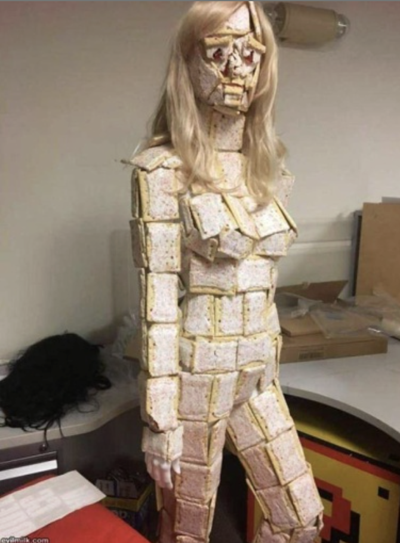

CLIP

CLIP is a neural network trained on image-text pairs. In the context of Stable Diffusion and LAION-5B. CLIP is used to evaluate image descriptions and automatically filter out image-text pairs that don't have a strong relationship from the Common Crawl data. If image-text pairs were rated a score lower than a certain threshold, they were discarded. This allowed the creators of LAION to work with such a large database of images without individually evaluating each pair by hand. To understand how CLIP works and its biases, we should look at the data this model was trained on.
CLIP is trained on Imagenet, a dataset of more than 14 million images (smaller than LAION-5B) scraped from the Internet, labelled by Amazon Mechanical Turk crowdworkers and organised through 21,000 categories. The categories of ImageNet were created making use of WordNet, a lexical dataset of English nouns, verbs, adjectives and adverbs grouped into sets expressing distinct concepts.
Imagenet categories:
- decapod
- aperture
- American arborvitae
- quahog
- red-breasted nuthatch
- holding cell
- giant water bug
- ash
- projector
- Dalai Lama
- Francisella
- device
- rumble seat
- renal cortex
- sweatband
- common European jay
- common yellowthroat
- Surgeon General
- drop-leaf table
- mutilator
- seeder
- ski jumping
- thermojunction
- false vampire
- Napier's bones
- gleaner
- angel's trumpet
- tumbrel
- snack bar
- ingenue
- misanthrope
- amorphous shape
- hipline
- Ohio goldenrod
- Roquefort
- Silex
- tile cutter
- thistledown
- carpenter's level
- manor
- strongroom
- red wolf
- hot-fudge sauce
- cove
- courlan
- cup hook
- Penutian
- closed circuit
- reed meadow grass
- supercharger
- vitamin B1
- telephone
- round of golf
- bowling equipment
- domestic partner
- camcorder
- coracle
- lute
- pichi
- horse balm
- woodbine
- embankment
- down
- plectranthus
- bag
- workbasket
- stegosaur
- stock
- physical therapist
- starfish
- charmer
- scorpioid cyme
- pogge
- sealing wax
- sunray
- jay
- display adapter
- sacking
- steering linkage
- subduer
- American maidenhair fern
- brier
- summer house
- finger
- mater
- Connarus guianensis
- junk shop
- receiver
- foreman
- duplex apartment
- passion fruit
- cytomegalovirus
- araucaria
- keyboard instrument
- oxcart
- vessel
- hog sucker
- bailey
- handstamp
- red buckeye
- Verdicchio
- saxifrage
- scuffle
- inclined plane
- Wilson's warbler
- steeple
- cutlas
- encephalartos
- echinoderm
- traverser
- spiderwort
- daphnia
- warrantee
- indigo bunting
- Chinese lantern
- common lynx
- dining room
- rough
- brown lemming
- lawyer cane
- breaststroker
- backstop
- koto
- Chenin blanc
- commissary
- voting booth
- eraser
- Canadian aspen
- etagere
- mule
- sickle alfalfa
- scorpaenid
- trawler
- pendant earring
- fairlead
- straight chair
- white oak
- modifier
- interplanetary space
- Newfoundland
- fibrous-rooted begonia
- exercise device
- anteater
- tie rack
- alumroot
- spaghetti junction
- emissary
- astilbe
- tam
- line of life
- Australian sumac
- chocolate egg
- bailor
- man-of-war
- fucoid
- Indian crocus
- solar cell
- quilted bedspread
- omnidirectional antenna
- broom closet
- well
- American water spaniel
- showboat
- North Carolinian
- shop girl
- philadelphus
- scratcher
- pip
- muskmelon
- mayeng
- casement
- Bermuda shorts
- ridge rope
- Weston cell
- watercress
- container ship
- Scotch woodcock
- bridal wreath
- pedometer
- Galilean telescope
- window frame
- nationalist
- aspic
- leg
- parrotfish
- rhea
- dressing table
- ride
- spirillum
- steerage
- jew's harp
- hand mower
- X-ray film
- cupule
- meteorological balloon
- ascot
- quadruplet
- television receiver
- titrator
- western tanager
- maverick
- dosser
- poker
- cockatoo
- screen
- screw augur
- right fielder
- gas burner
- Liederkranz
- Cherokee rose
- nailhead
- chalcid fly
- hash head
- novitiate
- boarfish
- light brown
- Old World porcupine
- mechanical device
- channel
- Pacific ridley
- forsythia
- guenon
- oast house
- surgeon
- drill
- acarid
- bearded wheatgrass
- Thomson's gazelle
- spume
- digital voltmeter
- screw bean
- ski tow
- window
- chamfer plane
- street sign
- grevy's zebra
- festoon
- common spoonbill
- fire ant
- protozoan
- web site
- coriander
- red osier
- Pholiota flavida
- process-server
- soffit
- beer can
- whole milk
- conacaste
- frozen pudding
- addax
- timber hitch
- dimity
- gopher
- swagger stick
- cellar
- crinkleroot
- face mask
- white mullet
- good guy
- barracuda
- field spaniel
- tun
- boatyard
- mimeograph
- supermom
- wetter
- willow
- wood duck
- butterscotch
- loosestrife
- wall
- hack
- casern
- theorist
- boojum tree
- Bowie knife
- kaoliang
- grandmaster
- pasteurized milk
- chanfron
- woodruff
- guided missile frigate
- bract
- minaret
- cat food
- Aberdeen Angus
- field sparrow
- chives
- gadgeteer
- golden pothos
- acrylic
- sudatorium
- vulture
- Lapp
- homo
- miterwort
- horned lizard
- pin oak
- immovable bandage
- soft-shell clam
- hen
- viscometer
- cider
- cottage tulip
- telegraph
- rudder
- blackcap
- cutout
- fall cankerworm
- brick
- rust mite
- winder
- chemical reactor
- deer grass
- wolf spider
- Stropharia hornemannii
- phaius
- toweling
- Alaska fur seal
- gas ring
- anise hyssop
- rock sandwort
- locking pliers
- tie rod
- bruin
- electrostatic printer
- pansy orchid
- roach clip
- gawker
- crucifer
- Floridian
- drainage ditch
- stuffing nut
- forest goat
- cascades frog
- amen corner
- balsam fir
- plodder
- powder keg
- Edam
- ridgeling
- sledding
- trifler
- goatfish
- pumpkin
- convertible
- slide valve
- magpie
- safe-deposit
- pump
- bitters
- crown
- wild geranium
- court
- firkin
- bookend
- first lieutenant
- tread
- greenhouse
- bouillon cube
- cash register
- tea cart
- sex symbol
- serving dish
- Congolese
- deer mushroom
- apple dumpling
- orrery
- sovereign
- Band Aid
- European black grouse
- crown prince
- ball cartridge
- bath salts
- mackerel
- springer spaniel
- stickler
- active matrix screen
- Mexican bean beetle
- turkey cock
- theatrical producer
- balloon bomb
- raven
- tandoor
- rum sling
- Bernese mountain dog
- cock of the rock
- summer squash
- cactus mouse
- morula
- trade magazine
- fish slice
- white yam
- mollusk
- spectator pump
- constable
- dialog box
- prie-dieu
- brown bat
- coleus
- autopilot
- petcock
- Tricholoma vaccinum
- cuckoo
- American lady crab
- accelerator
- black squirrel
- complementary color
- calaba
- hand shovel
- hearer
- half hatchet
- pod
- swami
- distortionist
- green snake
- automatic rifle
- lean-to tent
- cornice
- legionnaire
- pitcher plant
- sketcher
- horsebox
- checker
- hoop pine
- beer hall
- soapweed
- Protium guianense
- survivor
- skin diving
- white clover
- closet queen
- anchovy pear
- reddish orange
- resort hotel
- slot machine
- olive
- sampan
- beech fern
- amphitheater
- notebook
- cockfighting
- cock-a-leekie
- steak tartare
- sitz bath
- Dictaphone
- rose mallow
- bladder senna
- corkscrew
- cling film
- pastry cart
- wheat
- sack
- field mouse
- brittle
- tableland
- sunglasses
- cyrilla
- electrograph
- breakwater
- littleneck
- copycat
- backup system
- fight
- slasher
- fixed phagocyte
- muzzle loader
- canarybird flower
- myrtle
- sawpit
- bottle opener
- trackball
- permanent press
- Cameroonian
- inflater
- snowy orchid
- lemon shark
- western mugwort
- false indigo
- disk clutch
- amboina pine
- hold
- pick
- pulse timing circuit
- scarlet wisteria tree
- football
- wild mango
- L-plate
- hart's-tongue
- Virginian witch hazel
- crisphead lettuce
- knee pad
- hood
- rye ergot
- Africanized bee
- architecture
- curvet
- common winterberry holly
- russet
- baggage
- pitahaya
- real estate broker
- generic
- oocyte
- common wasp
- smooth lip fern
- ming tree
- caracara
- concert grand
- rugby ball
- prokaryote
- northern bog lemming
- entrenchment
- sixth-former
- yellow henbane
- oarswoman
- redpoll
- almond tree
- fireweed
- visualizer
- Liberian coffee
- West Indian jasmine
- damselfish
- bolt
- orthoscope
- psaltery
- sausage curl
- chamois cress
- geological horizon
- water biscuit
- Mexican hyssop
- wing tip
- brass
- anise
- philosopher
- polyoma
- medical practitioner
- abattoir
- candelilla
- news photography
- blank
- orator
- winter squash
- corchorus
- back brace
- elm
- white dead nettle
- scops owl
- bearded vulture
- patchouli
- ant
- air search radar
- popinjay
- Black
- Carolina parakeet
- fascista
- tragedian
- wild sheep
- synchroscope
- measuring instrument
- gryphon
- mosquitofish
- pediment
- New World mouse
- heron
- jumping mouse
- monstrance
- tongue worm
- butternut squash
- mussel
- arariba
- porbeagle
- sea trout
- cyclotron
- troika
- overhang
- door
- windshield
- wandering albatross
- orach
- Oregon crab apple
- Old World least weasel
- placoderm
- common pitcher plant
- belt buckle
- lieutenant junior grade
- air hammer
- cryptocoryne
- Pacific yew
- trouser
- proof spirit
- Jerusalem artichoke
- deadwood
- sleeve
- artichoke
- dog-day cicada
- water level
- tempter
- mushroom sauce
- Mexican pocket mouse
- sand leek
- parr
- barn swallow
- New Zealand daisybush
- lame duck
- fishnet
- capote
- wrap
- hayrack
- green alder
- field soybean
- grey polypody
- columbo
- turntable
- schoolyard
- canteen
- envelope
- cruet-stand
- gilt
- bolete
- man's clothing
- petiolule
- dicamptodon
- tile roof
- little auk
- costia
- anecdotist
- chorus girl
- fighter
- castle
- waxmallow
- Chickasaw
- journalism
- chafing dish
- onion bagel
- lancetfish
- caracolito
- Belgian endive
- saw palmetto
- Rydberg's penstemon
- light microscope
- screen door
- tiller
- billboard
- Turkish coffee
- surgeon's knot
- folk dancer
- espalier
- chesterfield
- Florentine
- common osier
- frontal eminence
- elk
- convolvulus
- armyworm
- spindle tree
- dressing room
- bush shrike
- coal chute
- scatter rug
- cashier
- apomict
- fan
- frown line
- hedonist
- drinker
- cassette player
- dressage
- linsey-woolsey
- stockyard
- pink disease fungus
- stanhopea
- brassie
- oyster bed
- oarfish
- dress blues
- fanaloka
- akee
- matriculate
- reef squirrelfish
- Venus' slipper
- India-rubber tree
- valley girl
- Gibson girl
- amarelle
- thriftshop
- mustache cup
- satin bowerbird
- petite marmite
- accomplice
- shoulder holster
- hotel
- timekeeper
- black currant
- holly
- purple willow
- bow and arrow
- magneto
- Old World buffalo
- athletic sock
- fuddy-duddy
- mole rat
- American Staffordshire terrier
- crossbar
- solleret
- Tremella foliacea
- trumpet arch
- nut pine
- little golden zinnia
- Toda
- second cousin
- Holocentrus ascensionis
- egg cream
- time-switch
- leech
- element of a cylinder
- sulky
- pasta
- cardiologist
- rainbow lorikeet
- fringe tree
- grass poly
- plate
- Calostoma ravenelii
- delta wing
- mailbox
- angle bracket
- latchet
- clinid
- false goatsbeard
- sounding rocket
- abaca
- green frog
- marupa
- true pepper
- fiddleneck
- bumper
- Omani
- lorikeet
- rabbit-eared bandicoot
- Alpine woodsia
- mess
- frog
- finger plate
- drone
- common four-o'clock
- mercantile establishment
- player
- olive tree
- pollack
- scombroid
- sciaenid fish
- gasoline gauge
- river otter
- palanquin
- spike lavender
- king
- cape yellowwood
- corn lily
- smoothbore
- Jesuit
- skier
- deck
- king vulture
- polecat
- speed bump
- kai apple
- fingerling
- eft
- spike heath
- common iguana
- life tenant
- solar array
- ball hawk
- bilge
- milk punch
- steam bath
- Creole
- jackfruit
- Job's tears
- fines herbes
- coat
- jordan almond
- garganey
- highbinder
- orthopter
- hard disc
- buffalo clover
- bolt
- fomite
- portulaca
- slave-making ant
- blueberry yogurt
- quitter
- woman's clothing
- backhoe
- water gauge
- fiance
- neckerchief
- cassava
- grey lemming
- scarlet musk flower
- wood anemone
- Guernsey
- ricer
- cryptogam
- chantry
- auxiliary research submarine
- purple locoweed
- tea
- columbiform bird
- laryngoscope
- aviatrix
- jumper cable
- bamboo palm
- fiesta flower
- rolling mill
- cone clutch
- reset button
- troposphere
- equilateral
- node
- drip mat
- thermopile
- fringed grass of Parnassus
- sights
- spherocyte
- wax palm
- fairy bluebird
- orange milkwort
- homeotherm
- intercommunication system
- batik
- phonograph record
- transmission
- free press
- German millet
- anti-submarine rocket
- psycholinguist
- acid head
- rattlesnake orchid
- cherry
- ketembilla
- lawn mower
- girlfriend
- camp
- programmer
- electric hammer
- kit
- black rhinoceros
- propeller
- cuckoopint
- chrysalis
- jack plane
- magic lantern
- oriel
- straw mushroom
- headman
- toga virilis
- pant leg
- serge
- tongue
- cellist
- shrimp cocktail
- bookworm
- basking shark
- canary grass
- prairie smoke
- red-shouldered hawk
- grand piano
- washwoman
- Ferris wheel
- star-duckweed
- shoot-'em-up
- African coral snake
- acanthocephalan
- hunter
- quill
- redbud
- wally
- aril
- corn borer
- bank robber
- panicled aster
- confectioner
- high-hat cymbal
- victualer
- whaler
- Indian rhododendron
- wild cherry
- microsporangium
- Virginia thimbleweed
- kea
- beard
- brocade
- recreational vehicle
- fetoscope
- puppy
- milk
- resurrection plant
- liverwort
- cookie cutter
- designated hitter
- New Zealander
- Ligustrum obtusifolium
- whitefish
- King's Counsel
- revetment
- great white heron
- shirtmaker
- Kalapooia
- hardstem bulrush
- straight man
- Rollerblade
- wire recorder
- tawny owl
- electronic device
- puffball
- zero
- civies
- gainer
- sclerotinia
- works
- gas turbine
- yellow giant hyssop
- yashmak
- ground rattler
- butterbur
- ski boot
- pearly everlasting
- quail
- mung
- dairy cattle
- siderocyte
- common white dogwood
- nutgrass
- ceratodus
- angelica
- landing skid
- private
- lighter-than-air craft
- binoculars
- wine sauce
- cracker
- grunt
- bread sauce
- three-way calling
- gannet
- sheepshank
- pulse
- water-soluble vitamin
- mouthbreeder
- peba
- spreader
- cherry plum
- beauty consultant
- common comfrey
- cinnamon
- hot rod
- procellariiform seabird
- Ungulata
- manhole
- tumbler
- saltine
- Chaldean
- king crab
- synchronous motor
- anemone fish
- Jungian
- hasty pudding
- wren warbler
- epergne
- pardoner
- negative magnetic pole
- block
- roller
- tundra
- marsh wren
- discussant
- brake cylinder
- Philippine mahogany
- anseriform bird
- tiger cowrie
- page printer
- subcompact
- self-heal
- archpriest
- walk-in
- gean
- liana
- chokecherry
- black calla
- courthouse
- medical instrument
- hatchback
- wrasse
- clothing store
- viola
- simian
- aquifer
- tachistoscope
- oil refinery
- covered bridge
- spinnaker
- Accipitriformes
- dahlia
- Alsophila pometaria
- egotist
- louse fly
- hall
- executive vice president
- borstal
- sticktight
- pearlfish
- bulldog clip
- goldfields
- common heath
- musketeer
- durum
- pouched mole
- chamfer bit
- coreid bug
- department head
- runcinate leaf
- blacktip shark
- composite
- sweet fern
- pantile
- camp chair
- salad
- pollster
- xenolith
- vinifera grape
- Brummie
- pome
- Jafnea semitosta
- geyser
- chimpanzee
- pruner
- pilot bit
- indigo broom
- shelf bracket
- flame tokay
- nitpicker
- Austrian
- tunicate
- color-blind person
- gander
- Cortinarius gentilis
- rudd
- coffee mug
- couscous
- trombone
- gymnast
- aspergill
- pink
- languisher
- lama
- corn marigold
- boiling water reactor
- Frank
- slop basin
- poison gas
- Molly Miller
- wiggler
- boulle
- woodscrew
- hot-rock penstemon
- symphonist
- cotton flannel
- Percheron
- flip
- machmeter
- pruner
- tea tortrix
- Chinese primrose
- American merganser
- eccentric
- grass snake
- exegete
- colleen
- brown hyena
- gallows
- caesium clock
- computer network
- handcart
- destroyer
- rigger
- omnivore
- balloon
- long beech fern
- samovar
- box spring
- yellow-breasted chat
- lemon
- fishmonger
- bicycle seat
- wing tip
- mascarpone
- chicken casserole
- liver-spotted dalmatian
- washer
- covered couch
- soft-shelled turtle
- Clydesdale
- dome
- European fly honeysuckle
- Myxine glutinosa
- equalizer
- passenger ship
- hoary plantain
- mallet
- icing sugar
- pallasite
- dusky-footed woodrat
- cat
- jug wine
- Parkia javanica
- knight
- fish stick
- wash
- chili
- twin
- C-ration
- Entoloma lividum
- bad person
- conference center
- wild medlar
- desert iguana
- guard
- spiritual leader
- flying phalanger
- square-rigger
- escarpment
- chicken sandwich
- sloe
- lady palm
- sacred ibis
- nutmeg
- ring
- woodwind
- hors d'oeuvre
- weld
- summer squash
- lens
- deck chair
- blunt file
- ballast
- Queensland bottletree
- Stillson wrench
- Macowanites americanus
- Australian sea lion
- Caesar salad
- wall tent
- sawed-off shotgun
- honey bell
- bamboo fern
- diaphragm
- processor
- Chianti
- cleavers
- melon ball
- cabin car
- trout
- climbing fern
- frigate bird
- periwinkle
- theater
- Dane
- orphrey
- bush
- cosigner
- brown lacewing
- Dewar flask
- whiting
- carinate
- tumble-dryer
- Cavalier
- gauze
- Caloscypha fulgens
- groenendael
- bathroom
- hawk's-beard
- lame
- cabin class
- resident commissioner
- liliaceous plant
- condominium
- Madeira
- shawl
- abalone
- pigeon guillemot
- European ash
- gunnysack
- apple
- garden spade
- shuttle
- Valencia orange
- arum
- maigre
- catapult
- mule
- lesser spearwort
- field hockey
- powder and shot
- lory
- prickly-edged leaf
- Parsons table
- pinion
- jerboa
- fennel
- Luxemburger
- dwarf chinkapin oak
- overgarment
- Hamburg parsley
- porridge
- lanseh tree
- salesman
- Caddo
- golden hamster
- canopy
- nullipara
- gopher tortoise
- parasail
- planter
- tampion
- chanter
- inkberry
- mincemeat
- cinchona
- siris
- chief petty officer
- comet
- horned whiff
- cub
- American egret
- Ibizan hound
- cardinalfish
- fire marshall
- lisper
- seaside daisy
- winker
- salad green
- wild licorice
- hatchet
- tree swift
- worker
- obscurantist
- bagpipe
- gulag
- gherkin
- mammoth
- Japanese plum
- theosophist
- Norway maple
- hawkmoth
- camber arch
- etching
- apartment building
- belt
- refreshment
- audiotape
- steel arch bridge
- nylons
- audio system
- core bit
- proctoscope
- agar
- clay-colored robin
- second baseman
- tarwood
- sorrel
- trilobite
- circular plane
- lock
- gib
- crazy quilt
- summer savory
- drum
- pine vole
- cutaway
- boxcar
- saltcellar
- hydrometer
- cold duck
- fad diet
- bog asphodel
- chicken Tetrazzini
- damselfly
- matelote
- giant buttercup
- glory hole
- patron
- peshmerga
- mother
- skysail
- cabin
- rosebud orchid
- coral snake
- shiner
- mute swan
- thane
- subject
- crackle
- rabbitwood
- family room
- Sauvignon grape
- student center
- stray
- tight end
- smoothhound
- American feverfew
- finger bowl
- biohazard suit
- machine tool
- legume
- work animal
- toner
- caiman lizard
- chicken snake
- snapping turtle
- tabor pipe
- bacon-lettuce-tomato sandwich
- mace
- medium
- licorice
- perihelion
- German iris
- parsnip
- grapefruit
- bunji-bunji
- pea tree
- natural elevation
- New World monkey
- humpback
- Waldorf salad
- Bloody Mary
- horse-trail
- factory
- jester
- bugleweed
- ice milk
- spleenwort
- white pepper
- buttinsky
- Chinese paddlefish
- mestiza
- ball game
- false scorpion
- vascular ray
- roughcast
- chimney breast
- fundraiser
- bastion
- crystal detector
- amusement park
- hand
- shower curtain
- shebeen
- bracken
- censor
- dispatcher
- old-age pensioner
- quern
- war room
- tape recorder
- case
- squill
- orangery
- gosling
- silky tamarin
- prosthetist
- tyrannid
- hepatica
- dulciana
- Georgian
- eastern fence lizard
- midwife
- thumbscrew
- American white birch
- pearl barley
- support column
- bristlegrass
- ax handle
- boarfish
- cornerback
- developer
- ski slope
- algometer
- portrait lens
- fighting chair
- glowworm
- fleabane
- staphylococcus
- Andorran
- gowen cypress
- harpulla
- brass
- repeating firearm
- spice
- lenten rose
- loungewear
- coiner
- dickey
- three-cornered leek
- tragedienne
- captain
- stone crab
- golden plover
- miniature schnauzer
- wood aster
- Boletus pulcherrimus
- seizure-alert dog
- tricorn
- blueberry
- principal
- radiation pyrometer
- satellite television
- squirting cucumber
- pied-a-terre
- kerchief
- Fahrenheit thermometer
- scup
- Creek
- pull-through
- firebrat
- prairie orchid
- star
- bait casting
- watchdog
- autostrada
- involucre
- plum-fruited yew
- diabetic diet
- bonsai
- aspartame
- gall wasp
- metal wood
- four-stroke engine
- fireboat
- pullover
- copepod
- beanie
- fava bean
- finger-painting
- bread-bin
- American persimmon
- crapaud
- gluten bread
- bedroll
- macon
- grace cup
- hepatica
- cockspur thorn
- blade
- longleaf pine
- oyster plant
- peg
- rapper
- hind
- T-bar lift
- Canada anemone
- Cheshire cheese
- salt marsh mallow
- aperture
- Rhine wine
- school
- rotisserie
- cuckold
- dairy product
- black pine
- fawn
- wheat berry
- thyme
- pier
- great blue heron
- white crappie
- bowling shoe
- johnnycake
- lumpfish
- coral drops
- pricket
- redberry
- furnace
- chow
- Carib
- desert four o'clock
- heifer
- sound spectrograph
- sweet melon
- sergeant major
- Manduca sexta
- cleft
- maneuverer
- henbane
- oboe d'amore
- suburb
- clinician
- elbow pad
- planula
- marshal
- bullnose
- native beech
- beach plum
- ringhals
- burrfish
- casquet
- Mainer
- walking stick
- headstall
- foulard
- upland sandpiper
- mountain devil
- finisher
- citrange
- upset
- large crabgrass
- sannup
- sewage disposal plant
- persona non grata
- dwarf iris
- swab
- manor hall
- tavern
- shagbark
- scavenger
- basil
- veal parmesan
- marrow
- pill head
- bird
- Boston baked beans
- point
- sod house
- palometa
- chicane
- yellow spiny daisy
- cattail
- milk float
- onion butter
- rosewood
- crane
- cell
- storage medium
- Cub Scout
- satinwood
- tragopan
- prairie mimosa
- molasses
- squeegee
- pier
- peacekeeper
- footwear
- jolly boat
- Turkoman
- fishtail palm
- poleax
- winepress
- atrium
- stone bramble
- Easter lily
- domestic animal
- Apalachicola rosemary
- nonmember
- cassowary
- beaked whale
- shirt
- hugger
- mara
- explosive device
- whirligig beetle
- sleigh bell
- ironweed
- bombycid
- varied Lorikeet
- Columbia tiger lily
- virginal
- abstractor
- yardgrass
- skidder
- salt reed grass
- ashtray
- house centipede
- noria
- unicyclist
- pomegranate
- early warning system
- rubber band
- sickbed
- hipflask
- taffrail
- bassinet
- durian
- gueridon
- slob
- cuisse
- washbasin
- surgeonfish
- cellophane
- rootstock
- corn cockle
- Delawarean
- gatherer
- red morning-glory
- American magpie
- plotter
- jerboa kangaroo
- hot-air balloon
- creel
- sweep
- tree sparrow
- bongo
- yoke
- mink
- tea
- observer
- echinocactus
- griffon vulture
- short-tailed shrew
- makomako
- gauntlet
- mudguard
- backbencher
- common mullein
- orange toast
- Japanese angelica tree
- Meuniere butter
- tisane
- mate
- reeve
- vacuum chamber
- cleric
- water moccasin
- sobralia
- commelina
- athenaeum
- kabob
- forester
- early coral root
- carper
- bowerbird
- wine bucket
- onion roll
- sneezeweed
- rangpur
- girl
- adder
- scilla
- shiitake
- albatross
- plexor
- cork oak
- sunlamp
- flavorer
- guereza
- switch engine
- rock penstemon
- searing iron
- swan
- velvet grass
- ditch spade
- bur
- sump pump
- rubber boa
- lithia water
- mandarin
- bird pepper
- lector
- serape
- lizard
- fender
- frog legs
- tipu
- graining
- gravure
- louse
- tick trefoil
- occultist
- weathervane
- arborescent plant
- potato vine
- camail
- syringe
- lab coat
- tare
- large civet
- cockateel
- pyramid bugle
- ladder-back
- basement
- paella
- seed shrimp
- street clothes
- dolman sleeve
- motorcyclist
- malcontent
- madrona
- Jerusalem oak
- squash
- automatic transmission
- Bedouin
- masjid
- schoolfriend
- New Jerseyan
- secretary bird
- plains pocket mouse
- chalet
- great white heron
- lather
- extension
- net melon
- Boletus variipes
- cypripedia
- starship
- automaton
- hydrilla
- seeder
- Indian rhinoceros
- millstone
- trepan
- rye bread
- vicegerent
- Persian cat
- pill
- mailbag
- inky cap
- checkerbloom
- golden calla
- track and field
- migratory quail
- everlasting pea
- hack
- overhand knot
- shiner
- julep
- common shrew
- ellipse
- bootlace
- gynobase
- broad buckler-fern
- sourdine
- Korean
- camper trailer
- cuboid
- common mugwort
- nodding onion
- multiengine airplane
- chachalaca
- stockbroker belt
- commuter
- hurling
- christella
- crock
- generator
- transport ship
- bondwoman
- shipowner
- superior
- meadow pipit
- dried fruit
- solenoid
- hazel mouse
- celery
- prairie white-fringed orchid
- hot line
- adder's tongue
- flagfish
- short-spurred fragrant orchid
- hand cheese
- ammonia clock
- gentile
- serviceman
- fetid bugbane
- drone
- lomatia
- blue racer
- nonpasserine bird
- scarlet runner
- helicopter
- carpenter's mallet
- water gillyflower
- rotor blade
- blue jasmine
- ping-pong ball
- stilt
- buffer
- honeyflower
- parfait glass
- bluefin
- firearm
- sherbert
- sandwich plate
- flannel
- demonstrator
- ilama
- plantain-leaved pussytoes
- camomile tea
- stevia
- blackberry-lily
- electrostatic generator
- postage meter
- leaf lettuce
- water-shield
- willet
- plum-yew
- gerenuk
- honey bun
- livingstone daisy
- cream-colored courser
- canvasback
- kanchil
- killifish
- plum tomato
- playpen
- ocellated turkey
- demographer
- ramekin
- eagle ray
- tarantula
- white rice
- brace
- nailfile
- cleat
- supplejack
- northern pocket gopher
- hammock
- armilla
- acarus
- Wave
- graffito
- bigeye
- clam dip
- conidium
- nutmeg
- stator
- active citizen
- common nutcracker
- sugar palm
- Cortinarius semisanguineus
- trap
- tetrahedron
- white croaker
- volunteer
- macadamia nut
- tea
- moralist
- frock coat
- outhouse
- clog dancer
- unilateralist
- associate
- evaporative cooler
- shell
- stink bell
- pill bottle
- nan
- broomstick
- fuel filter
- polygon
- miles gloriosus
- ribbonfish
- Wandering Jew
- chestnut
- bowed stringed instrument
- platinum blond
- jewfish
- sycophant
- equerry
- scalded milk
- canyon
- water sport
- sawfly
- sailcloth
- Texas star
- microfossil
- besieger
- sports equipment
- Australian terrier
- kopje
- soapwort gentian
- mountain laurel
- stoneware
- stylus
- yacht
- streetwalker
- cabin cruiser
- poppet
- broadcaster
- gharry
- red maple
- oil
- fireman's ax
- Japanese oyster
- sicklepod
- basset horn
- jawbreaker
- urceole
- inductee
- nightcap
- rattlesnake weed
- megalocyte
- common opossum
- undergarment
- roughcast
- shopping cart
- razorblade
- tourist class
- centaury
- Siberian larch
- athlete
- sand blackberry
- duck
- opossum rat
- Streptomyces griseus
- silent butler
- chariot
- quadrangular prism
- oak
- constrictor
- light-emitting diode
- source of illumination
- oyster cracker
- spinning wheel
- physic nut
- blanc
- calcimine
- marble
- borrow pit
- traveler
- perch
- fledgling
- soap dish
- autofocus
- cross bun
- keyboard
- carpospore
- university
- disk harrow
- army attache
- assayer
- hispid pocket mouse
- organ loft
- bloodhound
- green lacewing
- coconut milk
- hurricane deck
- distributor
- dirk
- European wildcat
- black-footed ferret
- sequencer
- kazoo
- cargo helicopter
- maildrop
- mountain ebony
- telecommunication
- hutch
- star begonia
- concert band
- money belt
- oblique bandage
- tenpenny nail
- catacomb
- woolly bear
- black bread
- German short-haired pointer
- kick pleat
- overcast
- loddon pondweed
- mouse-ear chickweed
- apartment
- neurologist
- poppy seed
- coelophysis
- bowl
- Gurkha
- ejaculator
- pilothouse
- mock privet
- harbor porpoise
- moccasin flower
- firewater
- dwarf elder
- brake system
- mug
- filter
- negro peach
- spruce beer
- five-hitter
- saucepot
- civil rights leader
- nipple shield
- postern
- crownbeard
- face
- monotreme
- kelpie
- Dandie Dinmont
- dillenia
- nail-tailed wallaby
- staghorn coral
- washerman
- Marsala
- sun gear
- means
- selenium cell
- digitizer
- dendrobium
- maraschino
- bocconia
- salsilla
- climbing frame
- record changer
- alienor
- dogwood
- chiffonier
- red valerian
- myelogram
- viola da braccio
- parasol
- short sleeve
- onion
- rutabaga
- brittle maidenhair
- mustachio
- marinara
- cairn
- New World beaver
- Matthew Walker
- gusset
- high tea
- water pimpernel
- Christmas fern
- paddle box
- nutriment
- safe
- guildhall
- blue-eyed Mary
- pass-through
- game fowl
- osage orange
- berth
- neritina
- lamprey
- sponge
- labor coach
- Kolam
- bun
- goldsmith
- mass spectrograph
- jackdaw
- manila tamarind
- dotted gayfeather
- advisee
- computer store
- cable
- herpes zoster
- jackfruit
- thresher
- manatee
- piranha
- two-toed sloth
- smallmouth
- mat
- color television
- rubber bullet
- Rosicrucian
- distributor cap
- Pitot-static tube
- Spanish grunt
- alewife
- yellowfin croaker
- suitor
- Zinjanthropus
- arborvitae
- white maire
- album
- furrow
- speckled rattlesnake
- goat willow
- tailpipe
- bicycle-built-for-two
- Venus's flower basket
- pusher
- southern flying squirrel
- propeller plane
- northern sea robin
- compere
- motor hotel
- hula-hoop
- printed circuit
- eurypterid
- palace
- wire
- bomb shelter
- margarita
- plumb bob
- bear grass
- hydroplane racing
- curled leaf pondweed
- judge advocate
- cloak
- sugar bowl
- glenoid fossa
- mud dauber
- oldster
- briefcase computer
- pamperer
- pitcher
- Shumard oak
- naval gun
- mate
- falconer
- vitamin D
- chinook
- barmaid
- nicad
- mixed drink
- planarian
- football stadium
- sport
- drop curtain
- glove compartment
- poinsettia
- moonflower
- bear cub
- Florentine iris
- scyphus
- hamelia
- bladder campion
- fig
- certified public accountant
- pampas grass
- nurse
- Tricholoma aurantium
- transcriber
- crowbar
- barn
- tensiometer
- pecan
- jackknife
- spearfish
- business lunch
- moldboard
- pizza
- spindle
- banksia
- lamasery
- shaggymane
- sonogram
- academic costume
- kalansuwa
- little owl
- gal
- peachleaf willow
- villager
- pignut
- lesser centaury
- arm
- American plaice
- curassow
- handwheel
- Geiger tube
- spiral bandage
- grampus
- shoulder bag
- twill
- rock bit
- backplate
- converter
- river shad
- cabin
- porgy
- great ragweed
- lemon peel
- opah
- myrrh tree
- gauntlet
- emperor penguin
- pelican crossing
- votary
- layette
- photomicrograph
- control center
- fragmentation bomb
- American red elder
- liver fluke
- caftan
- heliopsis
- beading plane
- pickelhaube
- rock candy
- bounty hunter
- Homo erectus
- danaid
- archaeornis
- operator
- South American
- myna
- truck
- Protium heptaphyllum
- botulinus
- loyalist
- clotheshorse
- pigfish
- hognose snake
- coalface
- bill
- open-hearth furnace
- slip ring
- cloisonne
- Malayan tapir
- berlin
- support hose
- Moro
- foglamp
- comber
- hagberry
- head gate
- trotting horse
- Polistes annularis
- Reform Jew
- Amur privet
- brookweed
- exhaust valve
- bush honeysuckle
- horned pondweed
- coreligionist
- kiwi
- combination plane
- waratah
- stair-rod
- Romanov
- yarmulke
- dagame
- bulbous plant
- marsh andromeda
- common scoter
- Macedonian
- chassis
- Chinese forget-me-not
- winter crookneck squash
- harvestman
- common carline thistle
- contestant
- Pekinese
- graham bread
- bluewing
- emancipator
- mistletoe
- menu
- breadstuff
- lumper
- windshield wiper
- signal box
- Devon
- molucca balm
- Korean lespedeza
- Catalpa speciosa
- cringle
- pickup
- hood
- lunette
- scull
- oil lamp
- lagging
- melancholy thistle
- bramble
- rusty woodsia
- gemsbok
- sheathing
- stopcock
- shackle
- racerunner
- turnip
- recruiting-sergeant
- middlebrow
- trophozoite
- chlamydia
- sugar snap pea
- deciduous holly
- apple of Peru
- poppy mallow
- wax begonia
- upstager
- bootjack
- ballet skirt
- catostomid
- Madagascar jasmine
- azure
- piciform bird
- candid camera
- float
- one-flowered wintergreen
- gendarme
- brown trout
- southern cabbage butterfly
- snake muishond
- camping
- porcupine
- western ladies' tresses
- pannier
- common wood sorrel
- bricklayer's hammer
- camisole
- slit lamp
- bitter pea
- hairy golden aster
- water scooter
- guitar
- valerian
- West Highland white terrier
- gastroscope
- hook
- wild pea
- royal fern
- sperm whale
- spotted hyena
- whinchat
- wire-haired fox terrier
- golden fig
- common chickweed
- positive pole
- rig
- apadana
- musk thistle
- wild parsnip
- sable
- false indigo
- briefcase bomb
- sundew
- razorbill
- sea aster
- quartz battery
- breechblock
- nectarine
- bight
- ratatouille
- slender wheatgrass
- testee
- prairie coneflower
- calamus
- journal box
- transept
- guru
- ferret
- hire
- card table
- armhole
- common fennel
- arete
- oriflamme
- press of sail
- sea anemone
- witness box
- bailiff
- Candida albicans
- procurator
- bush jacket
- Tetrazzini
- domestic sheep
- spirit stove
- New World tapir
- mouthpiece
- miniature poodle
- platform bed
- coral
- Aristotelian
- black birch
- mashie
- Alpine fir
- rhubarb
- indigo
- school ship
- long-horned beetle
- achira
- sugar daddy
- brasserie
- American shrew mole
- diastema
- large yellow lady's slipper
- apron
- Lithuanian
- matzo
- supper club
- bastard indigo
- mulled cider
- stocking
- alliaceous plant
- scurvy grass
- pavis
- percoid fish
- Irish
- potato fern
- septuagenarian
- emigrant
- viperine grass snake
- charnel house
- Boletus subvelutipes
- flag officer
- armband
- gunnery sergeant
- watch
- toggle switch
- lip fern
- wood mouse
- puka
- Armillaria caligata
- planter
- microsporidian
- wagtail
- tabasco
- Malcolm stock
- carob
- doorsill
- spinning jenny
- fly orchid
- badminton
- eastern woodrat
- dustcloth
- currant
- coffee mill
- wagon
- Confederate
- taxonomist
- maestro
- Boy Scout
- royal
- pistil
- trader
- retainer
- radio interferometer
- case
- axis
- granny knot
- bolognese pasta sauce
- great horned owl
- honeysuckle
- Chinese cork oak
- perfume
- fellow traveler
- plaster
- broken arch
- red oak
- workhouse
- examiner
- crane fly
- pod
- monocle
- crested cariama
- wax plant
- night bell
- yellow globe lily
- master
- Confucian
- chard
- evaporated milk
- horseweed
- garter snake
- Syrian
- summer savory
- Dragunov
- legatee
- cephalochordate
- pompano
- timber
- magnetometer
- medical scientist
- holy of holies
- Tyke
- tiger shark
- toyon
- anode
- cocotte
- Mother Hubbard
- game fish
- patriarch
- vesiculovirus
- middy
- mash
- paprika
- wanton
- anthozoan
- sweet gum
- comic book
- hornbill
- package store
- homopterous insect
- cowslip
- hawfinch
- sporting man
- peer
- sliding door
- pharaoh ant
- diesel-electric locomotive
- cherry laurel
- shovel
- lollipop
- goal
- bellarmine
- Jarvik heart
- marguerite
- long distance
- centaury
- crabeater seal
- finch
- baking-powder biscuit
- ashcake
- marang
- jury box
- mother-in-law's tongue
- malt
- enchilada
- puff adder
- Rambouillet
- marina
- curler
- edible fruit
- jelly
- crossbench
- Gymnopilus ventricosus
- flop
- coypu
- Christmas cactus
- political scientist
- American watercress
- scarlet runner
- sedan
- barber chair
- bassinet
- tooth shell
- Filipino
- fell
- undercoat
- mandrake root
- Chrysaora quinquecirrha
- bell
- medlar
- cabbage palm
- aba
- razorback
- dry rot
- browser
- cafe au lait
- iced coffee
- pruning saw
- weir
- few-flowered leek
- collimator
- aviary
- ogee
- good old boy
- scanner
- rattan
- European gallinule
- toyshop
- cardinal
- skidder
- African daisy
- clary
- kettle
- golden clematis
- kit fox
- sash
- hunk
- riding master
- Bewick's swan
- abomination
- suckling
- American redstart
- cotter
- newsstand
- oscilloscope
- Boletus luridus
- arrow leaved aster
- Sassenach
- pepper tree
- marine mussel
- jewels-of-opar
- whisk
- common brant goose
- flyweight
- turban squash
- odd-leg caliper
- battledore
- suet pudding
- bracelet
- translator
- mixed-blood
- reset
- eudiometer
- asparagus fern
- mission bells
- cottonseed
- deadeye
- Creole
- woolly adelgid
- sassafras
- mainmast
- queen
- grasshopper mouse
- cognitive neuroscientist
- parsley
- axle
- out-basket
- candida
- sedan
- clown
- adjuster
- cravat
- bonito
- house wren
- American smooth dogfish
- staple
- Sivapithecus
- mole rat
- common water snake
- cavalry sword
- sweat bag
- potpie
- carambola
- marten
- Jacobean lily
- sky
- crib
- scarab
- cricket ball
- Velveeta
- orange
- egg-and-dart
- chess master
- Spanish heath
- packsaddle
- fan blade
- acrocarp
- Homo sapiens sapiens
- isthmus
- destroying angel
- explorer's gentian
- aphakic
- cottage cheese
- autobahn
- pipewort
- heartseed
- mold
- safflower
- gyrostabilizer
- evergreen huckleberry
- grugru
- fruit custard
- saute
- French sorrel
- supper
- champion
- diocesan
- party wall
- armored vehicle
- wind tee
- pin
- odd-toed ungulate
- ski lodge
- baster
- watchtower
- T-man
- confectionery
- runner
- octopus
- longhorn
- carnivore
- stepper
- screwdriver
- julienne
- pale ale
- dry
- cassia
- herring salad
- firewall
- genipa
- neckpiece
- swimming crab
- catsup bottle
- milo
- shop bell
- blush wine
- Popper
- fluffy omelet
- pinworm
- armored car
- cork tree
- arroyo willow
- upstart
- scofflaw
- palfrey
- white fir
- valve
- small-leaved linden
- shock absorber
- hip boot
- eyecup
- Chardonnay
- fisher
- distaff
- American crayfish
- steel
- anchovy sauce
- overnighter
- French bread
- white-crowned sparrow
- slide projector
- common mallow
- beast of burden
- kishke
- wood sage
- marchioness
- racer
- wise guy
- thumbtack
- hand glass
- undershrub
- brake drum
- lock
- Monegasque
- pique
- concertina
- pear
- doornail
- mule fat
- counterbore
- Spanish cedar
- two-eyed violet
- sailing warship
- devourer
- pinfold
- portable computer
- in-fighting
- white-tailed kite
- abbe
- caseworm
- stickleback
- baya
- Rock Cornish
- muskellunge
- standard cell
- coal miner
- money cowrie
- American harvest mouse
- prickly poppy
- temple orange
- mechanical engineer
- catboat
- grasshopper
- Texas bluebonnet
- Gyromitra gigas
- nuclear weapon
- pickaback plant
- hotelier
- automobile mechanic
- tire iron
- clown
- steak au poivre
- bougainvillea
- black and gold garden spider
- microbalance
- silk tree
- crown daisy
- beach
- langur
- electromagnet
- crocodile bird
- tie
- cavalier hat
- Egyptian cat
- yellow honeysuckle
- broad bean
- husk
- half track
- butterfly pea
- roulette
- artificial horizon
- soup du jour
- pathogen
- dock
- Mexican sunflower
- good Samaritan
- rat kangaroo
- bell apple
- keel
- fly poison
- man-of-the-earth
- Conservative
- bankrupt
- Mornay sauce
- video recording
- cabbage tree
- linnet
- squama
- packrat
- foredeck
- Fauve
- Sonoran whipsnake
- victim
- pineapple weed
- airing cupboard
- leash
- whorled caraway
- daybook
- soda jerk
- wicker
- divan
- skinny-dipper
- ant cow
- divining rod
- Charolais
- click beetle
- weeping spruce
- strip lighting
- rigging
- bolti
- boll weevil
- heartleaf manzanita
- golden shower tree
- sour cherry
- low gallberry holly
- slender centaury
- krait
- fleawort
- hi-fi
- trifle
- arrowleaf groundsel
- echinus
- home brew
- watermelon begonia
- mop handle
- endoscope
- worsted
- washboard
- malahini
- coffee bean
- bayonet
- recreation room
- blade
- vegan
- mountain tent
- pepperoni pizza
- commissioned military officer
- boathouse
- shoehorn
- Esselen
- gefilte fish
- Indian poke
- vitamin K1
- stranger
- Chinese holly
- concert
- binocular microscope
- cotton thistle
- painted tongue
- tablespoon
- western grey squirrel
- fishing
- ulster
- pilchard
- Indian hemp
- missile
- computer keyboard
- cupflower
- solar dish
- comedian
- wall
- wireless local area network
- sodalist
- commuter
- miraculous food
- fragrant cliff fern
- club moss
- griddle
- bladderwrack
- baked potato
- batting glove
- keyboard buffer
- river red gum
- cooling tower
- freshwater bass
- oriental cockroach
- game equipment
- caterer
- greenling
- shutter
- rosemary
- notornis
- fruit punch
- appointee
- wax bean
- yataghan
- baptismal font
- everlasting
- dormer
- oxyacetylene torch
- butterweed
- crayfish
- Japanese yew
- purdah
- student
- pink-and-white everlasting
- millipede
- colonizer
- drawer
- veneer
- passive matrix display
- lemon-scented gum
- young bird
- alligator
- common ax
- broccoli raab
- heavy cream
- pluralist
- sinkhole
- betrothed
- catananche
- salsify
- crab Louis
- disk brake
- monitor
- thrift
- plane seat
- velour
- workman
- pommel horse
- write-in candidate
- roselle
- celery pine
- desk officer
- yellowhammer
- reindeer moss
- lapin
- dredger
- camwood
- winter melon
- counselor
- false tamarisk
- forklift
- archaeopteryx
- ski-plane
- compress
- wailer
- xeranthemum
- rake
- duke
- pia
- citrus mealybug
- railroad tunnel
- carving knife
- screw
- cutter
- examiner
- borage
- anemone
- accommodating lens implant
- wing chair
- planking
- seedless raisin
- rock
- Pacific tree toad
- sumac
- great knapweed
- buttress
- bluetick
- boat train
- escalope de veau Orloff
- ballistocardiograph
- trainer
- tassel hyacinth
- three-seeded mercury
- cotinga
- soil pipe
- tree
- prawn
- body
- corner
- analog clock
- recording system
- wonderer
- muffin
- pecan
- cockscomb
- stud
- sabicu
- tar pit
- jellaba
- ballcock
- steel blue
- gamebag
- towel rack
- auk
- loudspeaker
- carissa
- rotor
- Joint Direct Attack Munition
- water cart
- dress
- roarer
- shellac
- eptatretus
- betel palm
- red coral
- working girl
- oriental poppy
- eastern coral snake
- Nicol prism
- ultramicroscope
- water clover
- conductor
- arcade
- jai alai
- Roman hyacinth
- grivet
- sailfish
- emperor
- hone
- gemma
- corozo
- Aegypiidae
- bull shark
- bitter dock
- arthroscope
- barrier reef
- battle cruiser
- native
- little theater
- cant hook
- center of curvature
- arthropod
- analytical balance
- bodkin
- slipskin grape
- snap
- oil meal
- pod
- computer scientist
- phonologist
- cownose ray
- bastard pennyroyal
- maguey
- saddlebill
- aberrant
- spawn
- floating fern
- NOC
- dressing
- African chameleon
- minster
- wood rat
- Mastotermes darwiniensis
- dasyure
- endorser
- ice-cream bean
- marchand de vin
- common heath
- lookdown
- aperea
- ratel
- water horehound
- piece of cloth
- data system
- racing boat
- creeping zinnia
- punter
- spur gear
- canthus
- watch glass
- brace wrench
- reproducer
- exhibitionist
- coffee senna
- manul
- sprog
- cayuse
- rampion
- Sabahan
- sand dollar
- bully
- biretta
- kingbolt
- sleeper
- gunnel
- kite
- eaglet
- lobe
- patent log
- fringed poppy mallow
- baseball equipment
- safety fuse
- cabinetmaker
- predator
- signora
- magnetic storage medium
- sodium-vapor lamp
- acquaintance
- mortgagee
- savory
- whispering gallery
- motor scooter
- mess kit
- grosgrain
- drum printer
- goosefish
- horseleech
- porpoise
- rolling stock
- spinach
- edible sea urchin
- flagpole
- Zinfandel
- gar
- chosen
- mildew
- shaving foam
- chufa
- saltbush
- papyrus
- wolf pup
- morosoph
- waterfront
- paper nautilus
- pinnate leaf
- radiator hose
- energizer
- halberd
- armyworm
- boy wonder
- cattley guava
- perfumery
- instrument of torture
- compass
- bedlamite
- bikini
- internal-combustion engine
- agent-in-place
- sharpener
- io moth
- bookmobile
- blue shark
- eukaryote
- pitta
- astrantia
- scaler
- martini
- butterfly bush
- reducing diet
- pitch apple
- black-billed cuckoo
- colorimeter
- community center
- calculator
- trail bike
- pylon
- earthball
- stone curlew
- radiotherapy equipment
- codling
- field-emission microscope
- tent-caterpillar moth
- surveying instrument
- hydrogen bomb
- overskirt
- chlamys
- coffee liqueur
- fissiped mammal
- amphitheater
- flatterer
- soda cracker
- straw wine
- yellow-throated marten
- destroyer escort
- French Canadian
- sea scallop
- fleabane
- miniature golf
- entertainment center
- tyrannosaur
- spark coil
- bishop pine
- dominus
- scanner
- ignition switch
- Pholiota squarrosa-adiposa
- fringed loosestrife
- probationer
- tempera
- liebfraumilch
- crape fern
- wood pigeon
- enchantress
- recruit
- sterculia
- minder
- sightreader
- dining-room table
- quail bush
- astrocyte
- ashram
- greyhen
- Berliner
- ranch
- Oktoberfest
- ceramic
- catmint
- Morgan
- grate
- kei apple
- sagebrush lizard
- Amati
- needle
- soybean meal
- leaseholder
- tailor-made
- patchouli
- rasp
- addict
- belladonna
- thinning shears
- Catawba
- smut
- celery seed
- California single-leaf pinyon
- cartridge extractor
- torchbearer
- bird shot
- mandarin
- columnea
- submersible
- fiber
- onlooker
- drone
- ichthyosaurus
- statue
- Florida strap fern
- starlet
- oncologist
- sateen
- scullery
- needlefish
- papaya juice
- headrace
- Whipple's penstemon
- hoper
- sherry
- bairn
- field-effect transistor
- Browning machine gun
- virgin's bower
- chapterhouse
- drinking vessel
- Verdicchio
- seaside alder
- yellow mountain saxifrage
- tiglon
- grains of paradise
- Venn diagram
- bone-ash cup
- potato moth
- record player
- western redbud
- bathtub gin
- yellowfin mojarra
- Circe
- malope
- tow truck
- wall unit
- waterdog
- main yard
- mountain swamp gum
- slopseller
- narwhal
- Olympian Zeus
- harbor seal
- rattan
- choline
- Scotch broth
- Chlorophyllum molybdites
- biscuit
- pool table
- yakuza
- masked shrew
- caravansary
- pinniped mammal
- swallow-tailed kite
- princess royal
- smith
- pull chain
- sporangiophore
- comer
- onion salt
- lyre snake
- linen
- mudhif
- bluegill
- smalleye hammerhead
- striped marlin
- silky anteater
- lakeside
- earflap
- dwarf hulsea
- roundhouse
- encyclopedist
- ant shrike
- fossa
- streptobacillus
- nondriver
- hub-and-spoke
- escapist
- palmate leaf
- screw
- California newt
- sideboard
- sparling
- artificial joint
- gesneriad
- banana passion fruit
- ballot box
- rambutan
- senna
- concert hall
- impact printer
- bucking bronco
- fruit drink
- liqueur
- beetle
- scrutineer
- bark-louse
- burrito
- Brucella
- lounging jacket
- commodore
- cuckoo clock
- squid
- Fresnel lens
- fucker
- physical pendulum
- stonefish
- double boiler
- alocasia
- Oxbridge
- Przewalski's horse
- bass
- dhole
- flanker back
- condensation pump
- phloem
- backscratcher
- jungle fowl
- salmi
- Gouda
- wind instrument
- internist
- samosa
- loaner
- wild fig
- rainbow seaperch
- motorized wheelchair
- blue marlin
- Pennsylvanian
- Geiger counter
- amphora
- Uzi
- standing press
- flannel
- stump
- helmet orchid
- Molotov cocktail
- gas range
- coal car
- cape gooseberry
- mustard seed
- double knit
- aspirant
- rink
- shrine
- dog stinkhorn
- dill
- theater light
- amphibian
- tuck
- seasoner
- maggot
- pike
- Great Pyrenees
- zoo keeper
- refracting telescope
- doll
- troopship
- black-footed albatross
- fortification
- packet
- nipple
- sandwich
- annual fern
- wig
- tambour
- eclectic
- nightshade
- grass frog
- screw bean
- sea trout
- murine
- calliope
- poolroom
- Cape primrose
- brown creeper
- schoolbag
- pahautea
- swamp buggy
- blue mold fungus
- confectionery
- station
- Aleuria aurantia
- vespid
- mustard
- pascal celery
- hospital bed
- sigmoidoscope
- mountain ash
- gelatin dessert
- artilleryman
- blast furnace
- battleship
- signaling device
- slippery elm
- turban squash
- Mexican mint
- barge pole
- seaside centaury
- earless seal
- interstellar space
- tinfoil
- optical instrument
- knawel
- winter heliotrope
- butterfly plant
- malinois
- fern
- serial port
- coude telescope
- rummer
- schooner
- warplane
- Cabernet
- gas engine
- root beer
- gun room
- bird feed
- gig
- Anglo-Saxon
- weevil
- field glass
- wall clock
- surveillance system
- pistol grip
- oat
- basketball
- toadflax
- basement
- coverall
- eulogist
- electrical contact
- rudder blade
- silver tree
- javelin
- holdover
- waterside
- backbench
- dogsled
- collins
- Angora
- CD-ROM drive
- mescal button
- perforation
- storm cellar
- garment bag
- ropewalker
- dill seed
- zill
- clean room
- Bermuda buttercup
- Drosophyllum lusitanicum
- iPod
- Yosemite toad
- artichoke heart
- crook
- spacewalker
- South American Indian
- swivel
- lancet arch
- loft
- camel's hair
- orange
- secularist
- Panama tree
- jacksnipe
- sloth
- intelligence analyst
- Boston bull
- dallisgrass
- spoke
- radome
- wood drake
- abbey
- depth gauge
- Gyromitra infula
- diving bell
- condenser
- ready-to-wear
- gambist
- jampot
- military chaplain
- ichneumon
- muscadine
- cotton mouse
- towhee
- Scomberomorus maculatus
- clover fern
- butcher's broom
- tall gallberry holly
- menorah
- Turkish Delight
- American chestnut
- whydah
- zebrawood
- sibling
- pelisse
- gebang palm
- allspice
- striated muscle cell
- knob
- westerner
- Arkansan
- star magnolia
- electric heater
- bay window
- cowfish
- Pteropus hypomelanus
- civil authority
- mollie
- mortician
- European hare
- barbell
- hair spray
- deviled egg
- tankard
- retsina
- halophyte
- backgammon board
- draba
- flambeau
- therapist
- spongioblast
- chapel
- ice ax
- assault rifle
- malt
- cat's-ear
- stunt
- guinea hen
- naboom
- ivy geranium
- ceratozamia
- cologne
- van
- zabaglione
- hart
- scaly lentinus
- cabinet
- amicus curiae
- parer
- cardamom
- breeder reactor
- highboy
- fanjet
- basketball equipment
- army engineer
- asarabacca
- temporary hookup
- woodpecker
- health spa
- cranberry
- lingerie
- boiler
- anil
- cinchona
- condensed milk
- church
- control rod
- oatmeal
- stadium
- scalpel
- custard apple
- dray
- pine snake
- picnicker
- tire chain
- telephone pole
- Joe-Pye weed
- monocline
- cow pasture
- aphid
- hand lotion
- high commissioner
- router plane
- froghopper
- cock's eggs
- rotary actuator
- paleolith
- Calvados
- grass pea
- phalarope
- Carolinian
- paper
- hawk
- syrup
- poster girl
- pinetum
- snout beetle
- quince
- tea gown
- pinesap
- poorhouse
- barrio
- peanut bar
- larkspur
- china pink
- field-sequential color television
- mountain beaver
- Psychopsis krameriana
- widebody aircraft
- telecom hotel
- first base
- kosher
- trombiculid
- potter's wheel
- densitometer
- dragonhead
- pilot burner
- Siberian spruce
- hostel
- pincurl clip
- Texas horned lizard
- quiver
- pudding
- coho
- damper block
- hijab
- swastika
- rewa-rewa
- mattress cover
- mosquito
- umbrella tree
- rail
- eau de vie
- drogue parachute
- sapodilla
- wheat rust
- bludgeon
- Bahia grass
- shovel hat
- creeping bellflower
- Pisces
- fire screen
- shallu
- writing desk
- hopsacking
- convex polygon
- seine
- Canada garlic
- janissary
- complexion
- window
- pyrostat
- peach pit
- conger
- bean tree
- achimenes
- tineoid
- mercy seat
- juvenile
- Neohygrophorus angelesianus
- vervet
- phoebe
- man-on-a-horse
- derrick
- raccoon
- dumdum
- teju
- amputee
- birdcall
- shipping
- refrigeration system
- robber fly
- coatrack
- adapter
- rabbitfish
- winter crookneck
- water-base paint
- Cheyenne
- array
- cormorant
- yellowwood
- spatulate leaf
- electric blanket
- convalescent
- sugarberry
- Tarzan
- abandoned ship
- refresher
- wireless
- cowhide
- print seller
- collard
- malamute
- heroine
- cricket-bat willow
- dogcart
- prison
- white broom
- small ship
- slate
- horsemint
- voyager
- Newtonian telescope
- loop knot
- cathedral
- French window
- K ration
- Pholiota aurea
- osteocyte
- marocain
- food hamper
- castor sugar
- Belgian hare
- Spanish bayonet
- prairie cordgrass
- squelch circuit
- congee
- water snake
- Camembert
- memorial
- yellowfin
- pirogi
- tax assessor
- varietal
- quagga
- peg
- heartleaf
- oleaster
- mask
- greenhouse whitefly
- dragee
- stucco
- diplomatic building
- streptomyces
- yak butter
- video iPod
- cultivated parsnip
- air force officer
- pitchfork
- couch
- sea slug
- Asiatic flying squirrel
- external-combustion engine
- seasonal worker
- calamus
- network
- vertex
- chickeree
- blolly
- calorimeter
- Australian magpie
- milk
- cupola
- boothose
- cruet
- barrack
- catalpa
- mole cricket
- marzipan
- almond extract
- hitter
- suricate
- feedlot
- anvil
- drapery
- calceus
- Russian dandelion
- beef
- sump
- fitment
- maidenhair
- European dewberry
- rendering
- black marlin
- breast drill
- goshawk
- leg
- horn button
- postulator
- adhesive bandage
- Venus's girdle
- gold plate
- ommastrephes
- Shahaptian
- boards
- branch water
- golden barrel cactus
- wild rice
- Aertex
- sectarian
- mescal
- great hall
- dyer's rocket
- toehold
- semitrailer
- Atlantic ridley
- bluegrass
- inlay
- mucuna
- armoire
- rudapithecus
- Young Turk
- low-pass filter
- zoospore
- Cox's Orange Pippin
- whipcord
- men's room
- cauliflower
- Indian plantain
- showy goldenrod
- feijoa
- spotted sunfish
- polo ball
- yellow avens
- pepper sauce
- cannikin
- discharge pipe
- tachina fly
- guvnor
- fenugreek
- sumo ring
- capital ship
- photocoagulator
- felt fern
- black caraway
- diet
- European goatsucker
- ship-breaker
- Japanese apricot
- sleeping car
- horizontal bar
- razor
- reed stop
- china
- pyxis
- tarpaulin
- caprifig
- bull
- London plane
- garnish
- African monitor
- cannonball
- hotchpotch
- Jaculus jaculus
- gas heater
- cotton
- bundle
- African daisy
- tuatara
- landing flap
- acidophilus milk
- drill press
- black mangrove
- halter
- sponge cloth
- Penobscot
- Sarcosomataceae
- Texas purple spike
- giant scrambling fern
- worm fence
- yawl
- plum tomato
- battery
- red grouse
- dry masonry
- core
- hemiepiphyte
- minisub
- white dogtooth violet
- right whale
- sports editor
- earleaved umbrella tree
- Jacob's rod
- tamarin
- yellow bristlegrass
- tamarind
- headmaster
- head
- supernova
- employee
- sea hare
- saber
- elected official
- selectwoman
- woof
- plate
- passerine
- alkali grass
- poor box
- brazilian ironwood
- cello
- carpenter's hammer
- Japanese pagoda tree
- Japanese barberry
- skillet corn bread
- phasianid
- limey
- gun pendulum
- potato vine
- obstetrician
- hangar queen
- accelerometer
- incense cedar
- flip-flop
- exoskeleton
- robe
- European spider crab
- marang
- spark transmitter
- night heron
- stretcher
- Alaska Native
- horsewoman
- hot plate
- split
- five-spot
- stun gun
- tea ball
- artificial kidney
- pork-and-veal goulash
- topsail
- mutant
- Salish
- Chinese pea tree
- thyrse
- star saxifrage
- pink
- southern aster
- diapheromera
- coq au vin
- internal drive
- heliothis moth
- Gabonese
- hooded ladies' tresses
- chin rest
- grapnel
- curry
- leathery grape fern
- digital camera
- miniature fan palm
- Jeffrey pine
- drum brake
- petrel
- litterer
- blockhouse
- Yavapai
- European white lily
- civic leader
- Indian pipe
- cheese
- cocktail sauce
- American water ouzel
- college student
- piece de resistance
- stocks
- tracked vehicle
- mushroom
- ratafia
- blunderbuss
- dart
- lightning rod
- hour hand
- colt
- scyphozoan
- poniard
- pest
- narc
- creole-fish
- lacrosse
- smalltooth sawfish
- fuse
- gaff
- pulse generator
- halibut
- cactus wren
- voltmeter
- Japanese millet
- toby
- mashed potato
- chronometer
- elephant
- department store
- voltage regulator
- hand fern
- stonework
- hospital train
- charcuterie
- carangid fish
- motor vehicle
- Javanthropus
- firefly
- table
- horseshoe
- prosimian
- cretonne
- corn
- soft diet
- Connemara heath
- push-button radio
- oxeye
- grape jelly
- thwart
- fanion
- plantain
- massif
- copper beech
- paisley
- poliovirus
- mandarin duck
- yellow sand verbena
- mosquito net
- desert tortoise
- star apple
- cow pen
- snail
- planktonic algae
- bean dip
- boxing glove
- nut-leaved screw tree
- lieutenant colonel
- bell heather
- carpetbag
- tidytips
- taco
- goat
- featheredge
- molasses kiss
- chain printer
- pet sitter
- knee brace
- gamecock
- deer mouse
- Dixie cup
- chinch bug
- Maltese
- hammerhead
- breadfruit
- tall bellflower
- biochip
- badminton court
- padlock
- waterbuck
- dandelion
- Bahamian
- ceriman
- horizontal stabilizer
- dry-bulb thermometer
- Barberton daisy
- Japanese cedar
- brownie mix
- hen
- crash helmet
- daily
- caller ID
- sail
- algebraist
- envoy
- field pea
- thrush
- cape marigold
- hiccup nut
- long-billed marsh wren
- wild peach
- cinnabar
- espadrille
- Mexican
- Pyrenees daisy
- cattleya
- master
- croquet mallet
- ice-cream cone
- fire chief
- apple juice
- drunk
- minicar
- heaver
- dark-eyed junco
- condenser
- corbel arch
- bog rose
- liquid metal reactor
- paramecium
- pierid
- ague root
- cathedral
- basidiocarp
- Glengarry
- purslane speedwell
- deer hunting
- band
- otterhound
- bone-headed dinosaur
- censer
- piassava palm
- full skirt
- ski cap
- dipterocarp
- basilisk
- army ant
- mistress
- kohl
- lilac
- sugar maple
- Trotskyite
- difflugia
- lacquer
- archerfish
- Sazerac
- water-skiing
- pin cherry
- running suit
- refuge
- whitecup
- black ash
- honker
- buck sergeant
- white false indigo
- radish
- catheter
- Scotch terrier
- panhandle
- deanery
- hay bale
- polo shirt
- bull mastiff
- burial garment
- cradle
- Japanese tree lilac
- sweet wormwood
- jockey
- camphor daisy
- tortoiseshell
- mountain spleenwort
- beagle
- ibis
- mourning dove
- pieplant
- viand
- adulteress
- color tube
- case knife
- grated cheese
- nombril
- thermonuclear reactor
- ex-president
- tabby
- dormitory
- pipet
- erection
- master of ceremonies
- bell tent
- fedora
- pestle
- window seat
- cybercafe
- mandibular notch
- shepherd
- marrow
- counter
- dormer window
- king post
- field judge
- sage green
- nailhead
- lungless salamander
- common bean
- garroter
- Primus stove
- geneticist
- local call
- television room
- fireplace
- thick-billed murre
- bantamweight
- lobed spleenwort
- actor
- cascara buckthorn
- rotating mechanism
- jaconet
- kimono
- sgraffito
- spheroid
- military uniform
- flash camera
- kilt
- spruce pine
- Labrador retriever
- aneroid barometer
- morgue
- lady's smock
- matzo meal
- Italian
- depressor
- grammarian
- gin and it
- studio couch
- charcoal
- Boston ivy
- punch
- contralto
- maid
- rib joint pliers
- European curlew
- holly fern
- sweeper
- stealth fighter
- sable
- melanocyte
- appropriator
- electroencephalograph
- harpullia
- grade separation
- boffin
- trestle
- vestiture
- fat farm
- fluid drive
- revolving door
- explosive detection system
- maker
- rocket engineer
- peplos
- cob
- bedwetter
- linseed
- carpophore
- glory pea
- slipper spurge
- praline
- white pine
- daiquiri
- culvert
- preceptor
- cellblock
- courser
- cathedra
- place
- co-beneficiary
- lecanora
- tree squirrel
- banderillero
- bishop
- portable circular saw
- slit trench
- shoulder pad
- sauce Louis
- pickle barrel
- side-wheeler
- three-day event
- Judas tree
- pompon
- bass clarinet
- dolichocephalic
- match
- Yemeni
- stenographer
- songwriter
- motherwort
- owner-occupier
- snob
- spot
- cob
- moke
- telescopic sight
- waxwork
- overall
- round shape
- nasotracheal tube
- Lyonnaise sauce
- gouger
- neutron bomb
- cord
- slider
- spackle
- obtuse leaf
- ridge
- jigsaw puzzle
- howler monkey
- district manager
- medalist
- landing craft
- direction finder
- hackberry
- puppy
- chop-suey greens
- woodwaxen
- semigloss
- water faucet
- dhak
- Swan River everlasting
- teapot
- yard
- openbill
- cero
- red currant
- shower stall
- hotel room
- cocoa
- safflower seed
- folding chair
- wattle and daub
- Chinese mustard
- ignition key
- peduncle
- stakeholder
- streetcar
- Calvary clover
- tear gas
- speaker
- pony
- conventicle
- common maidenhair
- scarlet fritillary
- Dutch elm
- Oregon ash
- weeder
- Chinese brown sauce
- pea crab
- amethystine python
- ballplayer
- Orlon
- snuffbox
- fig marigold
- tarragon
- cicerone
- chicken paprika
- team sport
- stump
- slopshop
- bookbinder
- siamang
- nailbrush
- bullhorn
- Mycenaen
- tenpin
- acetate rayon
- dusky shark
- bi-fold door
- Colt
- greater prairie chicken
- microtome
- butterfly flower
- deputy
- weir
- Pacific walrus
- penile implant
- American dewberry
- pursuer
- star
- zebra mussel
- organization man
- pencil sharpener
- black box
- Bengal tiger
- horse chestnut
- co-star
- rabbit hutch
- pond pine
- splashboard
- prima ballerina
- wine vinegar
- toothed spurge
- round-tailed muskrat
- Old World quail
- lambrequin
- redhead
- belly flop
- doodia
- sable coat
- folk poet
- Peruvian balsam
- color guard
- maquiladora
- New Zealand wren
- Maria
- movie projector
- native cranberry
- black cottonwood
- gitano
- dash-pot
- western spadefoot
- tangelo
- violator
- Old World monkey
- triceratops
- pancake turner
- royal palm
- crooked-stemmed aster
- embryo
- mineshaft
- dry nurse
- snail darter
- zwieback
- crappie
- hansom
- weapons carrier
- honest woman
- drainplug
- corn sugar
- mineral water
- puzzle
- whip-scorpion
- moss pink
- canteen
- music hall
- creme de menthe
- table-tennis racquet
- pellicle
- jacket
- Sihasapa
- night jasmine
- cotter
- Iowa
- costume
- Bulgarian
- harrier
- paperhanger
- anastigmat
- packrat
- colonnade
- conveyance
- patisserie
- jujube
- ripple mark
- scarlet oak
- crypt
- gig
- screech owl
- rosebud cherry
- telephone bell
- cacao
- duff
- Clark's nutcracker
- grease-gun
- cross-country riding
- pointsman
- Helvella sulcata
- seahorse
- Life Saver
- camel racing
- Gazella subgutturosa
- Philadelphia fleabane
- Siberian wall flower
- ridley
- Duplicidentata
- faille
- bedstraw
- ossuary
- handball
- canyon treefrog
- gig
- stirrup pump
- velveteen
- frosted bat
- Pacific sardine
- chough
- celebrant
- sanitary landfill
- shamrock pea
- Reticulitermes lucifugus
- bridesmaid
- enamel
- rambutan
- corker
- Bohemian waxwing
- bullfinch
- gent
- scourer
- hooded merganser
- hutment
- fragrant agrimony
- power shovel
- Kui
- Italian bread
- maser
- rocker arm
- eatage
- day boarder
- wire gauge
- tortilla chip
- flagship
- earthtongue
- live oak
- recorder
- water ski
- angular distance
- garden snail
- wineskin
- dashiki
- meadow clary
- man of letters
- weasel
- don
- angwantibo
- toupee
- cloister
- hibachi
- radiator
- pimento butter
- pollen tube
- UNIX guru
- newel
- succorer
- mazer
- wapiti
- climbing corydalis
- oscine
- podicipitiform seabird
- loom
- cucumber
- Parliamentarian
- steamed pudding
- fruit
- rhea
- Latin
- tool
- publican
- brompton stock
- tinderbox
- cigar cutter
- mackerel shark
- power line
- lorgnette
- tocsin
- aviator
- dilator
- billiard room
- sculpture
- manicurist
- protea
- drop cloth
- corbel step
- supermarket
- webcam
- wormseed mustard
- Manchester terrier
- horseradish
- scrub pine
- laver
- piston rod
- skin
- sea lavender
- quarterstaff
- soap pad
- limpa
- Pulex irritans
- meadow rue
- western fence lizard
- ice
- maleberry
- pipe smoker
- Japanese pink
- conformation
- cicada
- sweater
- flowering fern
- czar
- patient
- bandbox
- key
- rough bindweed
- marasca
- esthetician
- sniper rifle
- outfielder
- pill bug
- sidecar
- Japanese beetle
- battue
- bunsen burner
- edentate
- spritzer
- marker
- poll
- surrey
- false buckthorn
- bladder stone
- brake disk
- night raven
- B-complex vitamin
- moire
- drosophila
- hasp
- stencil
- anathema
- numdah
- pants suit
- searchlight
- rudder
- acinus
- scorpaenoid
- cell
- ash grey
- cockleshell
- ballroom
- magnetic head
- raccoon dog
- flying jib
- multistage rocket
- American bog asphodel
- Paiute
- proton accelerator
- Tricholoma sejunctum
- tallgrass
- jobber
- leisure wear
- swamp sparrow
- speculum
- colostrum
- pinon pine
- withdrawer
- slack suit
- stockpot
- inula
- Rottweiler
- groove
- creeping bugle
- white campion
- water strider
- false lupine
- formalwear
- northern whiting
- internet
- placer miner
- sukiyaki
- job candidate
- gromwell
- dressmaker's model
- lampshade
- racer
- bitumastic
- bed
- spiral spring
- telemeter
- business editor
- great Solomon's-seal
- motel
- bottling plant
- sweet coltsfoot
- trophy case
- promontory
- lateen
- scablands
- desert holly
- hedge trimmer
- khaki
- stinkhorn
- attache case
- bourguignon
- socket wrench
- stemless hymenoxys
- roadway
- pythium
- cichlid
- scrambled eggs
- mountain everlasting
- Slovene
- chaparral pea
- heating pad
- sunglass
- thinker
- sweet bay
- rhombus
- tee hinge
- nougat
- red angel's trumpet
- cabinet
- pearly razorfish
- sea lamprey
- resistor
- Minuteman
- chafeweed
- ragged robin
- palette
- seat
- thorn apple
- lionet
- vermillion rockfish
- louvered window
- first sergeant
- loon
- green alder
- bladderwort
- green mayonnaise
- cheekpiece
- shell bean
- ivorybill
- potential divider
- Turkish bath
- giant sunflower
- feverroot
- servo
- surcoat
- rack
- lime juice
- looking glass
- spring peeper
- raft foundation
- attic
- clasp knife
- forest red gum
- homogenized milk
- boar
- umbrella tree
- bilge well
- cercaria
- Italian bee
- second balcony
- horse-drawn vehicle
- professional basketball
- doorjamb
- cough drop
- moleskin
- nympholept
- Communist
- teak
- tea bag
- Indian club
- orange marmalade
- whitetip shark
- salmon
- Gadaba
- date palm
- energizer
- round-headed leek
- aglet
- trailing arbutus
- yellowthroat
- balata
- coralberry
- carpenteria
- follower
- boomerang
- bowler
- sea cucumber
- echidna
- Atlantic cod
- purple fringeless orchid
- lowland fir
- detractor
- Atlantic sailfish
- buttercup squash
- visiting professor
- automatic choke
- crampon
- gastropod
- midge
- trichopterous insect
- bench lathe
- car battery
- jungle cat
- Kenyan
- boat hook
- north island edelweiss
- Pacific bottlenose dolphin
- double door
- guillotine
- scimitar
- student union
- sea moss
- cembra nut
- Old World oriole
- rushlight
- swab
- radiometer
- beeper
- box
- coatee
- electric clock
- mountain hemlock
- chapatti
- dreadnought
- landlubber
- juice
- downy birch
- forest tent caterpillar
- sluice
- electric frying pan
- workbench
- Viyella
- latchkey
- desk sergeant
- hawser bend
- junk
- chip
- smoothie
- cash bar
- bear oak
- potoroo
- shank
- farmer's market
- matilija poppy
- lygus bug
- vireo
- guy
- gymnosperm
- canopy
- electric guitar
- window oyster
- moa
- achene
- goldfield
- revenant
- kampong
- Scopolia carniolica
- knocker
- gift shop
- saprobe
- snowdrop anemone
- creep
- red fox
- hornpipe
- crossbill
- sash window
- drip pot
- kangaroo paw
- patty-pan
- stabilizer
- stained-glass window
- orphan
- songbird
- fruit machine
- electronic fetal monitor
- iron horse
- tamale pie
- plum pudding
- foremast
- bog bilberry
- prairie willow
- Uniat
- bird feeder
- wrecker
- cuppa
- fauld
- hen-of-the-woods
- full-dress uniform
- sesame seed
- visor
- snowdrift
- clapper
- blue fox
- parr
- seaside
- four-hitter
- leucothoe
- dropper
- hind
- handkerchief
- old-man-of-the-woods
- line
- Slav
- reed
- failure
- nasturtium
- primary color for light
- thysanopter
- drawing chalk
- pedestrian crossing
- compressor
- pimento
- percolator
- choanocyte
- redneck
- puka
- inertial guidance system
- apricot
- BVD
- customer agent
- col
- reticulated python
- Regius professor
- sow bug
- pelagic bird
- buddy
- maar
- Connecticuter
- autogiro
- bassarisk
- mare
- prairie rocket
- deathbed
- waterwheel
- toothache tree
- penal institution
- purple onion
- porthole
- masonry
- citron
- red-breasted snipe
- date
- carnation
- brew
- pole
- continental divide
- Border terrier
- strap
- aroeira blanca
- wood horsetail
- yellow chamomile
- pump house
- common lilac
- choreographer
- safety valve
- hyrax
- file server
- yellow colicroot
- American badger
- patchwork
- Homo habilis
- white wood aster
- sour milk
- forestay
- box
- side dish
- stock saddle
- ribbing
- pressure cooker
- recording
- pasqueflower
- nectarine
- schnapps
- carnivorous plant
- Qatari
- great grandmother
- infernal
- hubbard squash
- lace bug
- allspice
- stelis
- Dumpy level
- herba impia
- nonsmoker
- Skye terrier
- head cabbage
- white prairie aster
- plate rail
- aardwolf
- Brother
- sun spurge
- multichannel recorder
- high-vitamin diet
- fluorescent lamp
- padrone
- lion-hunter
- sounding board
- potage
- photometer
- headdress
- obstetrical toad
- goblet
- eyeliner
- wheeled vehicle
- snapdragon
- Father
- Italian ryegrass
- khukuri
- chemical plant
- binturong
- princess
- cube
- step-down transformer
- jumper
- witches' butter
- forward
- stove
- Ivy Leaguer
- mastodon
- bloodberry
- red deer
- Polynesian
- artwork
- marquis
- black bream
- hazelnut
- dog in the manger
- brass
- summer hyacinth
- chowchow
- rug
- television camera
- andryala
- frozen yogurt
- brooklime
- common teasel
- telephone jack
- satsuma
- chicken cordon bleu
- gypsy moth
- two-hitter
- strickle
- japonica
- cigar band
- golden pheasant
- three-spined stickleback
- herb tea
- English person
- red beech
- water dog
- mushroom
- iron
- mate
- hatchling
- machinery
- dial telephone
- security blanket
- trimaran
- ant thrush
- neurosurgeon
- valise
- autoloader
- butt joint
- porkholt
- catalufa
- mountain bladder fern
- electronic voltmeter
- fish joint
- broccoli rabe
- green soybean
- green pea soup
- gulch
- starting gate
- chronograph
- cyclopean masonry
- shelduck
- light diet
- wicket
- papillon
- exercise bike
- hunting knife
- lemon
- spittoon
- jumby bead
- shipworm
- book jacket
- gazpacho
- European sanicle
- common St John's wort
- purple sage
- China aster
- clubroot fungus
- squash
- keyhole saw
- luff
- water beetle
- Komi
- diver
- dicynodont
- middle-aged man
- sail
- Rhizopogon idahoensis
- dumpcart
- rhesus
- single prop
- drumstick
- guidance system
- stake
- specimen
- Lepiota rhacodes
- tickler coil
- photojournalist
- deep-freeze
- philter
- table saw
- rivet
- lanai
- Amazon ant
- sparring partner
- wheatear
- green bristlegrass
- nagi
- friar
- tea-like drink
- Latin
- barbed wire
- lined snake
- elaterid beetle
- oxeye daisy
- hunt
- poisonous plant
- wild buckwheat
- gorgonian
- cassareep
- pickle relish
- industry analyst
- shantung
- poon
- junkyard
- lobelia
- musician
- sweet orange
- seabag
- tank
- marsh hare
- Bullock's oriole
- dashboard
- godown
- screw thread
- gliricidia
- straightener
- cochineal insect
- Host
- gangsaw
- spat
- incumbent
- little blue heron
- tequila
- gaff
- spider mite
- Mediterranean flour moth
- neem
- caltrop
- banana boat
- scentless camomile
- banker
- analogist
- barley grass
- Bermuda onion
- yardarm
- canned food
- trivet
- burnous
- cape jasmine
- ivy
- leaf-cutting bee
- Potemkin village
- plastic bag
- bouffant
- slender loris
- frotteur
- photojournalism
- red-hot poker
- horse trader
- housing commissioner
- mission bells
- flail
- sheepshead
- cullis
- medlar
- plating
- cassette
- sago palm
- television antenna
- beggarwoman
- Canterbury bell
- kachina
- scriptorium
- stinging nettle
- uniform
- Fraser fir
- dirty bomb
- conqueror
- skunkweed
- slops
- Indian coral tree
- Virginia crownbeard
- splint
- discus
- ratchet wheel
- budgerigar
- addle-head
- green olive
- city slicker
- rainmaker
- ladder truck
- Chile bonito
- orthochromatic film
- yellow-leaf sickle pine
- bear claw
- Javanese
- high-warp loom
- extrovert
- flutist
- marquess
- lumpsucker
- reamer
- spider crab
- anchor
- guar
- whorled aster
- tile
- Grand Marnier
- saddlery
- baldachin
- equipment
- mignonette
- quark cheese
- field pussytoes
- whetstone
- raft
- orange soda
- sea lyme grass
- press
- metropolitan
- European woolly thistle
- rowel
- frilled lizard
- club car
- polyphemus moth
- swamp cottonwood
- blue gum
- tadpole
- tiger beetle
- lover
- spray paint
- balalaika
- wet cell
- white wine
- dixie
- drum majorette
- klammath weed
- fire pink
- plus fours
- capote
- red clover
- chat room
- flame tree
- club fungus
- sycamore
- waverer
- vole
- gelding
- skyhook
- desert willow
- dandelion green
- chicory
- holder
- Old World chat
- wild cinnamon
- red pine
- rotisserie
- brocket
- batman
- high-rise
- peach ice cream
- gas shell
- embryologist
- mockernut
- pellet
- bench
- nickel-iron battery
- tolu tree
- Lepiota clypeolaria
- mother hen
- Colorado River hemp
- chicken soup
- auklet
- mixing bowl
- prayer
- collar
- Swan River daisy
- quicksand
- lygaeid
- virago
- brassard
- Kshatriya
- begonia
- scientist
- car
- sloe gin
- wing nut
- flesh fly
- deipnosophist
- upstart
- stuffing
- dribbler
- silver fox
- chukka
- stamp mill
- postulant
- marjoram
- selfish person
- shiv
- prairie vole
- doubles
- skibob
- Venetian sumac
- bass horn
- ventilation
- helvella
- latch
- sustaining pedal
- barbecue
- solitaire
- tiler
- American bison
- queen
- sago palm
- chanar
- newspaper
- beach house
- microorganism
- speed skate
- millettia
- beefsteak begonia
- villa
- radio-phonograph
- cotton rose
- torpedo boat
- subwoofer
- grizzly
- sport kite
- coydog
- soutache
- great grey owl
- paper mill
- forget-me-not
- lyceum
- alcazar
- epiphyllum
- gymnastics
- reservoir
- chicken Kiev
- spirochete
- heath pea
- costume
- Spam
- dune buggy
- slivovitz
- social climber
- perfect game
- meat house
- rheometer
- school system
- Michigan lily
- stereoscope
- nipa palm
- negative pole
- caretaker
- clothing
- paper feed
- mozzarella
- messuage
- jackrabbit
- bathe
- head
- dryland blueberry
- dichondra
- boatbuilder
- child prodigy
- dry fly
- revolver
- bark
- opossum shrimp
- city
- portfolio
- bedroom furniture
- pop bottle
- buttercup
- coast boykinia
- Yuma
- mariposa
- sweetbrier
- gelatin
- brae
- aflatoxin
- hooded pitcher plant
- honey mesquite
- waterweed
- insurance broker
- piggy bank
- discina
- dining-hall
- kelp
- palm cat
- peasant
- shaft
- myrmecophyte
- wolffish
- service club
- rhymer
- dried apricot
- poultice
- cock of the rock
- half-mast
- beefsteak plant
- carriageway
- European sandpiper
- sauerkraut
- radiomicrometer
- cog
- vein
- goldenbush
- mint sauce
- smooth aster
- nuclear rocket
- psychrometer
- salt-rising bread
- heat sink
- writing arm
- radial engine
- timbrel
- soapberry vine
- squinch
- honey eater
- hoopskirt
- brachium
- Tricholoma pardinum
- custard
- soft pretzel
- vehicle
- cayenne
- Sheetrock
- Windsor tie
- water chevrotain
- chevrotain
- German cockroach
- walker
- lump sugar
- high-water mark
- cherimoya
- Elastoplast
- fondue
- horse mackerel
- anti-Semite
- southern bog lemming
- vehicle
- French omelet
- sapsago
- pederast
- optical pyrometer
- giant star grass
- ramrod
- casing
- ornithopod
- acrodont
- cuttlefish
- reader
- copper
- thermal printer
- mealworm
- bacteroid
- Pelham
- piccolo
- truncated pyramid
- rocket
- myope
- English elm
- bifocals
- grog
- etcher
- etymologist
- vesper sparrow
- press
- pogonia
- oil palm
- blackjack oak
- CD-ROM
- headrest
- furnace lining
- judge
- Podaxaceae
- superstructure
- wicker basket
- Muscovite
- anchovy pear
- tout
- call center
- even-pinnate leaf
- solenogaster
- swag
- surfing
- paloverde
- Alpine glacier
- ball
- blazing star
- tooth fungus
- muffin man
- fly rod
- light cream
- pilot cloth
- sawfish
- wind tunnel
- ghostwriter
- snow mushroom
- dental plaque
- dabchick
- pelecaniform seabird
- cupola
- king whiting
- grandma
- dead axle
- barn door
- sewing room
- vulcanizer
- common European dogwood
- woolly thistle
- chino
- sweet vermouth
- marcher
- mountain ash
- king snake
- egret
- goldenbush
- philanthropist
- streamliner
- fruit bat
- ex-spouse
- paddle
- beach plum
- gadgetry
- grouse
- corn dab
- serjeant-at-law
- common lady's-slipper
- gearset
- velvet ant
- swallow
- urolith
- cow
- ampulla
- common booklouse
- burner
- honey crisp
- funnel
- Bercy
- Clitocybe subconnexa
- bumper
- longbow
- dovetail
- basin
- transmission shaft
- horn
- stock cube
- quirt
- galley
- journal bearing
- sugar refinery
- Chinese puzzle
- inflorescence
- contour feather
- byway
- winged everlasting
- banjo
- cab
- painted beauty
- strapless
- fascist
- American white oak
- Catalpa bignioides
- garden cress
- vertical file
- kiln
- water polo
- paddy
- compromiser
- array
- ambulance
- latanier
- dune cycling
- dugong
- civet
- binder
- harpsichord
- mallet
- skirt
- Old English sheepdog
- saltwort
- meadow cranesbill
- Arnica montana
- microspore
- center
- pusher
- Welsh pony
- Nazarene
- hairstreak
- Blue Mountain tea
- dik-dik
- tobacco shop
- chambered nautilus
- gravestone
- oligarch
- blowtorch
- olive
- white supremacist
- Guarnerius
- altar
- teaching aid
- cephalopod
- soya milk
- ringer
- face veil
- rainbow
- brake band
- menhaden
- deutzia
- coat of paint
- screw tree
- Tangier pea
- chinquapin oak
- common broom
- bristle brush
- prince charming
- boneshaker
- Tulipa gesneriana
- lawn furniture
- angel's trumpet
- aphelion
- onager
- volleyball
- voicer
- twill
- cocked hat
- dill
- radar
- embassy
- generator
- lepiota
- teetotaler
- blue pike
- long tom
- yellow squash
- rosebud
- cineraria
- Sten gun
- reef knot
- blackfly
- television transmitter
- hybrid petunia
- penetration bomb
- radiobiologist
- beach strawberry
- silver lime
- square
- bench press
- tenderfoot
- framer
- bullterrier
- leafnose bat
- sharksucker
- black bean
- thruster
- sailor cap
- redstart
- center
- cave myotis
- copperware
- sea gooseberry
- staghound
- Socinian
- call-in
- rat snake
- barbican
- mullein pink
- chariot
- reciprocating engine
- lugger
- stall
- petunia
- annual
- prairie bird's-foot trefoil
- bite plate
- helix
- altar
- cheetah
- gasman
- bulge
- vernier caliper
- common camas
- worm gear
- basket fern
- slime mold
- Guinean
- successor
- metal detector
- false face
- bottle
- twinkler
- ratite
- meterstick
- baleen whale
- swan orchid
- necklace
- interceptor
- punching bag
- elephant seal
- mandola
- stomacher
- spacecraft
- althea
- Atlantic puffin
- rapporteur
- suds
- chessman
- turtle
- gamp
- bilberry
- needlenose pliers
- caper tree
- booster
- reenactor
- spear
- nothosaur
- Baltimore oriole
- aphid lion
- earplug
- breechloader
- stubble
- guava
- citron
- table-mountain pine
- sarsaparilla
- bisque
- distributor
- lamb's-quarters
- tongue depressor
- malvasia
- buckboard
- common barberry
- lounge
- cuirass
- Global Positioning System
- mallee
- Pernod
- sweet William
- quarter
- bayberry
- ripcord
- Border collie
- head
- mousse
- pincer
- banded krait
- tape deck
- proctologist
- Virginia strawberry
- Hygrophorus turundus
- swizzle stick
- cliff diving
- goral
- hortensia
- serin
- Steller sea lion
- mulberry
- abbey
- domatium
- halfback
- pitching coach
- trombidiid
- lavender cotton
- cabinet
- rat
- Greco-Roman wrestling
- home buyer
- vigil light
- tempura
- great barracuda
- keurboom
- water glass
- grinner
- red helleborine
- ski mask
- in-line skate
- Goldie's fern
- cafeteria
- canopic jar
- Scandinavian
- hard beech
- kudu
- frozen food
- human botfly
- tenoroon
- biographer
- shellflower
- closeup lens
- bling
- bondwoman
- urn
- spatula
- playground
- buffalo fish
- radial
- attachment
- meatball
- pottle
- helm
- Gujarati
- dragonfly
- piedmont
- iconoclast
- prairie star
- bass
- Western mountain ash
- Abyssinian banana
- apple rust
- dicot
- slip-on
- gun case
- cooking utensil
- Yorkshire pudding
- cannikin
- foxhole
- table lamp
- gangway
- panzer
- Finn
- suction cup
- bordelaise
- podocarp
- oilman
- coondog
- organism
- magnetic pole
- cooker
- gloriosa
- church key
- render
- gun carriage
- proconsul
- Gothic arch
- bed and breakfast
- airbrush
- gatepost
- defense contractor
- Ixodes spinipalpis
- sign
- photocopier
- expansion bit
- poacher
- ignition coil
- yellow bedstraw
- mountain fern
- promulgator
- digital-analog converter
- green salad
- mackinaw
- Atlantic tripletail
- ovenbird
- chiropractor
- vine
- crevice
- bazaar
- mohair
- toastrack
- industrial watercourse
- moss campion
- snowbank
- wild celery
- discount house
- rotor
- bosc
- southern buckthorn
- rain gauge
- Joshua tree
- perfumery
- flashlight battery
- western chimpanzee
- casque
- flight surgeon
- pallet
- vitamin A1
- lugworm
- monk's cloth
- Taracahitian
- mikado
- opportunist
- giant petrel
- reticle
- purifier
- bar
- blue succory
- horse cassia
- love-in-a-mist
- leveret
- altar boy
- captive
- loggia
- hedge
- beefsteak fungus
- Dutch iris
- nonagon
- sprag
- fore plane
- rabbet
- large periwinkle
- credenza
- dacha
- bath chair
- forge
- sloganeer
- car train
- golden cup
- six-pack
- heat-seeking missile
- floret
- rock rattlesnake
- white-headed stilt
- ailanthus silkworm
- grey whale
- marblewood
- storm door
- rex begonia
- buffet
- pervert
- captain
- hermitage
- pencil
- giardia
- garbage heap
- Pithecanthropus
- ibex
- lever
- steering gear
- Alexandrian laurel
- hyperbaric chamber
- clergyman
- garlic chive
- cigar lighter
- worsted
- thunder snake
- earthworm
- traditionalist
- kingfish
- busboy
- golf ball
- in-basket
- white croaker
- irrigation ditch
- snapper
- hobble skirt
- meadowgrass
- taipan
- foster-brother
- dun
- Wynnea americana
- knee piece
- squamous cell
- rentier
- wildcat
- morning room
- bellbottom trousers
- lap
- vitamin K3
- two-timer
- coat button
- garden nasturtium
- Brussels carpet
- Egyptian vulture
- field coil
- carrot pudding
- ladybug
- magazine rack
- agave
- pond-scum parasite
- lady's slipper
- common tobacco
- celery top pine
- trend-setter
- leatherleaf
- Stayman
- square dancer
- bogy
- screamer
- diaphragm
- red snapper
- horn fly
- heir apparent
- iron
- loblolly
- shoebill
- turtleneck
- action officer
- Hudsonian godwit
- rotgut
- wild parsley
- Astreus pteridis
- northern red oak
- ceratosaur
- big brown bat
- presbyter
- forecourt
- sharp-tailed grouse
- shade
- flour
- mustang mint
- alpine milk vetch
- redtail
- Aryan
- glockenspiel
- portraitist
- strap
- soft-coated wheaten terrier
- pinwheel
- Lowlander
- stroboscope
- scuttle
- pave
- law student
- biped
- inspector
- locum tenens
- chalk
- lancet window
- sandpiper
- cranberry sauce
- ox
- marsh plant
- shackle
- rifleman bird
- bait
- converging lens
- imperial Japanese morning glory
- grosbeak
- long sleeve
- klieg light
- egg foo yong
- Freudian
- Parisian
- velvet bent
- stage
- camera lens
- Cryptoprocta
- hogfish
- canonist
- boysenberry
- ursinia
- Indian buffalo
- yardie
- scoutmaster
- Irish soda bread
- pick
- chicken mousse
- compass saw
- waterline
- rigger
- haulm
- corvine bird
- rapeseed
- syndic
- hearthrug
- sea otter
- diestock
- aspirator
- cliff swallow
- disrupting explosive
- heckelphone
- night snake
- bottle-nosed whale
- snowcap
- squash ball
- European toad
- gook
- revers
- loquat
- Stinger
- pudding
- CPU board
- cucumber
- goat herder
- accuser
- stuffed mushroom
- respecter
- bean caper
- alpine coltsfoot
- clingfish
- gravy boat
- tiger snake
- spiderflower
- fifth wheel
- noncandidate
- mortarboard
- fruit fly
- tape
- mimosa
- jaboticaba
- semanticist
- seed
- oospore
- figwort
- dinghy
- Helvella crispa
- prairie sunflower
- acute triangle
- nonstarter
- machine bolt
- ouzo
- balloonfish
- battle dress
- Cassegrainian telescope
- tricycle
- tinter
- fishing eagle
- oilfish
- catafalque
- hatmaker
- universal joint
- sambar
- eel
- punch pliers
- court game
- Francophobe
- white rust
- textile mill
- plug fuse
- Danish blue
- dipstick
- peripheral
- crabapple jelly
- kepi
- vinegar
- shell
- deltoid leaf
- police boat
- defoliator
- flag
- African holly
- french fries
- nurse shark
- chair of state
- sand spurry
- timepiece
- voltaic pile
- scuffer
- swamp fly honeysuckle
- automobile factory
- viscose rayon
- pinstripe
- dorbeetle
- scaup
- patty
- tread
- sympathizer
- apple jelly
- big board
- long-horned grasshopper
- Boott's goldenrod
- shower room
- ming tree
- dunker
- monastery
- Etonian
- milling
- roadrunner
- pandurate leaf
- Pinot blanc
- sporozoan
- ambrosia
- black grouse
- trier
- card player
- audiometer
- backscratcher
- tree shrew
- claymore
- pleurothallis
- taboret
- torpedo
- collared peccary
- pillow lace
- emergency room
- sawmill
- whiskey sour
- shredder
- mountain lily
- vox angelica
- trampoline
- Rhodes grass
- marinade
- Minnesotan
- croquette
- box coat
- squirrelfish
- tugboat
- silver birch
- English saddle
- church tower
- dental appliance
- binder
- powder horn
- simulator
- leadwort
- prepuce
- random-access memory
- military officer
- paddlefish
- marsh elder
- betel
- reaction-propulsion engine
- bergamot
- pinball machine
- archivist
- textile machine
- jukebox
- tetraskelion
- die
- borzoi
- sea catfish
- bearskin
- whitebait
- lake whitefish
- buckeye
- midfield
- gumbo-limbo
- trapper's tea
- mortar
- entablature
- field magnet
- slide
- cheese press
- property man
- kohleria
- walker
- reseau
- NADA daiquiri
- Airedale
- Ixodes neotomae
- wheat germ
- prince's-feather
- hitch
- loggerhead shrike
- ferry
- sea boat
- Arizona sycamore
- cue
- miller's-thumb
- ex-husband
- shirtwaist
- dracaena
- glossy snake
- treenail
- pigs in blankets
- lumbermill
- animal
- carob bar
- salp
- medical building
- chocolate pudding
- gaming table
- Carolina spring beauty
- puddingwife
- American red squirrel
- outrigger
- grass widower
- dropout
- detonator
- termer
- stereo
- backbone
- Astrophyton muricatum
- sunflower
- osso buco
- pademelon
- Newburg sauce
- esker
- ant lion
- vintager
- Hungarian partridge
- thermograph
- guestroom
- long-tailed porcupine
- calf
- diving duck
- angelica
- foremother
- assemblyman
- sutler
- worm wheel
- copper rockfish
- real storage
- pig bed
- cider vinegar
- soda water
- Virginia chain fern
- zucchini
- Orpington
- augur
- bain-marie
- maguey
- Cornishman
- transactor
- plier
- euphonium
- pedant
- salmonberry
- laughing owl
- hinny
- tansy-leaved rocket
- security consultant
- film
- brake pad
- veal cordon bleu
- white lettuce
- true mahogany
- S wrench
- cobweb
- panda car
- anchovy
- waist pack
- dart
- gourd
- headpiece
- soul patch
- ratepayer
- Western diamondback
- river limpet
- crown
- pump action
- southern white cedar
- ultraviolet lamp
- sausage dog
- glow tube
- home plate
- skein
- wood ibis
- dip
- retort
- one-hitter
- rust
- maypole
- tepee
- Albatrellus dispansus
- laurel sumac
- enlisted woman
- gatehouse
- scouring rush
- ohmmeter
- cling
- laminate
- glade mallow
- cinnamon bear
- spinning frame
- guacamole
- Guadalupe cypress
- pump room
- geophyte
- spawner
- bell jar
- clover-leaf roll
- body pad
- swordfish
- redhorse
- coffeeberry
- Phytophthora infestans
- portcullis
- arbovirus
- kino
- Gymnopilus spectabilis
- baobab
- lozenge
- sprinkler
- arrester
- supernumerary
- yellow mariposa tulip
- messmate
- roughtail stingray
- T-square
- equerry
- false chamomile
- whippet
- finger food
- mother figure
- bouillabaisse
- southeastern pocket gopher
- field artillery
- clothesbrush
- Oregon cedar
- sea lily
- piping guan
- Menorah
- puffbird
- mugwump
- macrame
- office building
- bodkin
- flintlock
- coquille
- fast reactor
- typhoid bacillus
- radiotelegraph
- Persian violet
- cultivated land
- parsonage
- carcase
- argus
- artificial skin
- Gordon setter
- gluten-free diet
- cows' milk
- astatic galvanometer
- dolphinfish
- grouper
- cordage
- sweet cicely
- pouter pigeon
- closed-circuit television
- anglewing
- blazer
- tufted titmouse
- Pearmain
- wood-frog
- pomegranate
- wing
- Burmese cat
- okra
- pruning knife
- cosmographer
- European dogtooth
- pollard
- sabbatia
- dormouse
- Cooper's hawk
- slipcover
- maternity hospital
- sauna
- spiny-finned fish
- charger
- quandong nut
- blackfly
- sloop of war
- anchovy pizza
- Boletus mirabilis
- licentiate
- clockwork
- harrow
- habergeon
- accelerator
- creamcups
- hardtop
- sister
- ankylosaur
- hedge violet
- horsecloth
- paperhanger
- wood thrush
- claret cup
- half gainer
- yardstick
- spotted skunk
- stepmother
- Indian hemp
- charcoal
- synagogue
- car carrier
- fraise
- White Russian
- supertanker
- recovery room
- fly-by-night
- beef broth
- loggerhead
- long-clawed prawn
- pontoon bridge
- canteen
- silkworm
- flea beetle
- Saint Bernard
- Chartreuse
- afropavo
- quira
- purloo
- homegirl
- scalp
- crucifix
- long-head coneflower
- heliophila
- jack-in-the-box
- modillion
- American basswood
- hamper
- dagger
- caricature plant
- spastic
- pericarp
- sour mash
- sundress
- steamer
- tea urn
- head
- light
- buster
- transom
- giant schnauzer
- bindery
- toast mistress
- coriander
- bangalore torpedo
- coating
- Tuscarora
- candytuft
- realist
- Catha edulis
- quietist
- Boletus edulis
- convex polyhedron
- American woodcock
- sequence
- Humvee
- pace car
- humanitarian
- firm omelet
- cow pony
- great grandparent
- fireball
- sconce
- cavetto
- grapefruit
- colorlessness
- hideaway
- serf
- no-hit game
- flatbed press
- German shepherd
- godfather
- bobby pin
- campstool
- leaf miner
- grapefruit peel
- baby powder
- apetalous flower
- sling
- depth finder
- lakefront
- ground cedar
- locker room
- aerialist
- coral bean tree
- border patrolman
- wrist pad
- filaria
- larid
- fruitlet
- cesspool
- bite
- rider
- powder
- snowfield
- whirler
- crimson
- Zairese
- ladies' tresses
- tortoiseshell
- anadama bread
- folding door
- onion smut
- locksmith
- organ-grinder
- dace
- audiotape
- defense system
- flying fish
- sea lion
- alpine clubmoss
- fairground
- angelfish
- holly fern
- pepper shrub
- chard
- common stinkhorn
- oil beetle
- limpet
- comfrey
- Walloon
- Chihuahuan spotted whiptail
- pickerel frog
- basketball
- swamp laurel
- sorrel tree
- counterspy
- handset
- yellow salsify
- cultivator
- Segway
- heliograph
- walleye
- cruse
- climbing salamander
- second-rater
- fleur-de-lis
- hemostat
- cane
- equestrian sport
- recruit
- assistant professor
- indigo snake
- Agave tequilana
- bristly locust
- iron foundry
- English setter
- sandglass
- rubber boot
- specialist
- buttercup squash
- chain
- guesser
- customhouse
- skateboarding
- tape player
- Wisconsin weeping willow
- common canary
- professional baseball
- macedoine
- sling
- open sight
- mastiff
- auxiliary boiler
- birdbath
- mulligatawny
- garden orache
- violist
- celebrity
- python
- goat antelope
- brandyball
- wild angelica
- mustard sauce
- hellion
- playback
- briard
- harness
- black walnut
- whoremaster
- epee
- waiter
- bog rosemary
- gondolier
- Spanish onion
- Ukranian
- grebe
- butternut
- garter belt
- platen
- bonito shark
- common louse
- fothergilla
- pendulum clock
- abelia
- periscope
- engineering
- attire
- spruce bark beetle
- Virginia deer
- interior live oak
- farmhouse
- lens implant
- steam whistle
- scale
- dyer's woad
- Pluteus magnus
- spring water
- black salsify
- California four o'clock
- lemur
- yam bean
- scrumpy
- national
- commoner
- jumping bristletail
- saxhorn
- painted greenling
- wood tick
- frill
- narrow wale
- Vichy water
- rifle ball
- cold chisel
- guest
- California black walnut
- shoe shop
- arc lamp
- horseless carriage
- fairy light
- lapidary
- triple sec
- northern shrike
- relay
- miter box
- stone wall
- Angora
- punkie
- davenport
- star
- hovercraft
- print media
- New England aster
- shield
- Arabian camel
- beaver
- troop carrier
- quandong
- lilliputian
- western ragweed
- iron tree
- molasses taffy
- work-clothing
- salamander
- garbage man
- breakfast table
- diner
- Southern crab apple
- ministry
- artist's model
- fireweed
- leopard lizard
- bridoon
- drove
- Namibian
- tree wallaby
- terminal
- tent-caterpillar moth
- scoop
- salon
- cormous plant
- kitchenware
- hillside
- radiator cap
- spice tree
- tool bag
- frankfurter bun
- rack and pinion
- nude
- major
- weldment
- sowbane
- mustard
- scissortail
- steamer
- yellow cypress
- merlon
- namby-pamby
- copilot
- rivulus
- workmate
- Oregonian
- ungulate
- alidade
- cavalryman
- box elder
- kaki
- grey poplar
- cornhusk
- silky wisteria
- Thousand Island dressing
- gaff topsail
- flugelhorn
- hauberk
- sandbar shark
- curling iron
- nosewheel
- window blind
- satsuma
- Indian red
- hand truck
- lister
- lead-acid battery
- homeopath
- bacon and eggs
- disk drive
- volcano
- notch
- old squaw
- wiper
- wing nut
- shire
- berry
- field tent
- cotton grass
- raceway
- tenon
- Persian melon
- sorghum
- mole
- tablefork
- bragger
- dip
- cutlassfish
- spotted salamander
- punt
- butterfly pea
- pleat
- press
- Latin American
- St John's wort
- basenji
- water hickory
- broadbill
- castor bean
- petrolatum gauze
- deist
- polling booth
- cousin
- thylacine
- chicken wire
- prickly poppy
- deaf person
- resonator
- chicken stew
- coffee fungus
- corydalis
- dallier
- improvised explosive device
- large-leaved magnolia
- hitching post
- Formica fusca
- deviationist
- Japanese banana
- myrmidon
- dwarf tulip
- ceiling
- legging
- tiger salamander
- tin
- nail
- psychodid
- meteorologist
- caraway seed bread
- madras
- acorn squash
- spherical angle
- depilatory
- looking-glass plant
- bunt
- refried beans
- dressing gown
- night latch
- lupine
- blue cheese dressing
- astronaut
- red alder
- rigout
- hip
- backpacker
- clothes tree
- common beech
- nectar
- power user
- nonperson
- flatbed
- argyle
- Lhasa
- tuna
- piezometer
- pygmy mouse
- spirit lamp
- pariah dog
- pew
- cyanobacteria
- camera
- oak-leaved goosefoot
- Panama redwood tree
- artillery plant
- electric-discharge lamp
- pantry
- baa-lamb
- cuscus
- nagami
- heat pump
- ligature
- horizontal tail
- hoe handle
- thorny skate
- tulip orchid
- awl
- dioon
- roadhouse
- Pacific herring
- roll
- Kinetoscope
- portrait camera
- spin dryer
- chow mein
- potentiometer
- woolly sunflower
- spindle
- plane
- parsnip
- jump seat
- intersection
- nuclear chemist
- capstan
- drake
- tutee
- shit
- gym suit
- Japanese morning glory
- cup
- sisal
- mecca
- account executive
- jalousie
- heir presumptive
- suit
- electric meter
- juror
- grille
- alabaster
- read/write head
- Liebig condenser
- neonate
- ostracoderm
- flageolet
- bridal gown
- bulbul
- butterweed
- friendship plant
- swing
- brook trout
- nest
- harpoon gun
- sportswear
- hagfish
- curb roof
- blouse
- selvage
- classroom
- hoary plantain
- redwing
- hedge thorn
- eggdrop soup
- white-tailed jackrabbit
- fish stew
- stern chaser
- lathe
- bleu
- mailboat
- lentil soup
- Geogia holly
- caroler
- cannelloni
- gecko
- barley water
- Friesian
- trouser
- curd
- bung
- hammer
- agonist
- chowder
- cape
- ground fir
- golden-beard penstemon
- delayed action
- keeshond
- Biloxi
- local oscillator
- fagot stitch
- sour orange
- tree cricket
- pegboard
- mover
- old school tie
- goose
- clock radio
- cattle cake
- shaheed
- coil
- black root rot fungus
- bear's-paw fern
- mimosa
- pinfish
- domestic fowl
- knot
- sprocket
- taro
- weaver
- clavier
- pina colada
- pygmy cypress
- blue mockingbird
- toggle joint
- sadist
- dewberry
- dinoceras
- dracontium
- skillet bread
- trawler
- fishbowl
- jimsonweed
- toll call
- primary color for pigments
- casein paint
- white-footed mouse
- tetherball
- costmary
- bryozoan
- huarache
- Atlantic manta
- raffia palm
- wax bean
- sweet marjoram
- column
- orchis
- lesser wintergreen
- buffalo wing
- lemon mint
- ripping bar
- chronoscope
- shepherd dog
- bicycle rack
- saddle horse
- sambuca
- side-blotched lizard
- ideologist
- serow
- chain tongs
- body stocking
- ground ivy
- black poplar
- megatherian
- pedestal
- Richardson's geranium
- prickle cell
- drawbridge
- choo-choo
- fin keel
- server
- clever Dick
- perfumery
- house physician
- sea dahlia
- flamethrower
- Armagnac
- Igbo
- shoebox
- piggery
- suffragan
- Japanese wistaria
- pin
- Basotho
- house of cards
- manna ash
- leatherleaf saxifrage
- oxbow
- prison chaplain
- enginery
- righteye flounder
- dynamometer
- straight flute
- royal mast
- gnomon
- bloomers
- Our Lord's candle
- tipsy cake
- Ceylon bowstring hemp
- hamadryad
- receptacle
- ottoman
- New World vulture
- terror
- cabbage bark
- black belt
- bulldog
- daisy
- dual scan display
- garden
- leopard frog
- orphanage
- raita
- zooid
- compulsive
- rolling hitch
- crocus
- water hemlock
- plow horse
- spark arrester
- greater yellowlegs
- turnery
- immortelle
- toetoe
- Hall of Fame
- lambkin
- Gymnopilus validipes
- quadruped
- Soubise
- Aegyptopithecus
- cushion flower
- Cape lobster
- pedal
- mountain sheep
- airfield
- bullhead
- Canada ginger
- kleptomaniac
- dinner napkin
- dabbling duck
- bean
- gas-turbine ship
- nymphomaniac
- coffee
- bartlett
- elevator shaft
- segmental arch
- bones
- ferrule
- landau
- siren
- droshky
- power breakfast
- quartering
- lie detector
- whiffletree
- mongoose
- kingfish
- impulse turbine
- dinner jacket
- landscape architect
- azalea
- viverrine
- tambourine
- necker
- carillon
- bobby
- bettong
- giant coreopsis
- schistosome
- nanny
- Barbados gooseberry
- synapsid
- cheval glass
- kaffir boom
- trailer truck
- crystal set
- quandong
- citrophilous mealybug
- Buddhist
- book
- outskirts
- troll
- striped drum
- rotary press
- devil's tongue
- confessor
- wiper motor
- water bed
- dogbane
- fountain pen
- clothes closet
- monologist
- Culex quinquefasciatus
- cardioid microphone
- buffer
- Atlantic bottlenose dolphin
- darter
- heterostracan
- cellular slime mold
- surf casting
- mackinaw
- mustang
- end man
- spoon
- thin-shelled mussel
- lemon geranium
- flour beetle
- cyme
- senior vice president
- testudo
- coat closet
- Siberian crab
- Pacific sturgeon
- paper fastener
- dry wall
- laelia
- velocipede
- tract housing
- coquille
- purple loosestrife
- bedspread
- coastland
- New World warbler
- Chihuahua
- Blackburn
- bookkeeper
- steward
- pirate
- bolero
- try square
- dip
- tatouay
- false foxglove
- alto
- epidermal cell
- Corynebacterium diphtheriae
- Rob Roy
- linocut
- manufacturer
- salpiglossis
- wife
- screen
- bitewing
- production line
- devilwood
- shrimpfish
- brigandine
- Morchella crassipes
- microphage
- enchanter's nightshade
- khadi
- kneeler
- track
- dusky-footed wood rat
- military policeman
- scriber
- web-toed salamander
- spherometer
- hairy wood mint
- pillwort
- souari nut
- sorcerer
- oatmeal
- bootleg
- Trapezium
- giant bamboo
- draft animal
- Kentucky coffee tree
- carburetor
- golden polypody
- capsule
- Zionist
- city man
- positron emission tomography scanner
- red spruce
- lager
- mulatto
- bit
- afterburner
- showy sunflower
- sanitary napkin
- Christ's-thorn
- arboreal salamander
- press agent
- lynx
- important person
- arrow wood
- shears
- bottom-feeder
- galley
- lockage
- Fleet Street
- black
- hop
- gun enclosure
- orthicon
- grape juice
- rotavirus
- canned meat
- melancholic
- spiny dogfish
- oatcake
- puck
- hollandaise
- handloom
- harmonium
- ramekin
- mast
- toy terrier
- skullcap
- cake mix
- green onion
- gorse
- croupier's rake
- jet bridge
- tansy
- pole
- pliers
- petter
- filigree
- tawny eagle
- golden algae
- basilisk
- brown bullhead
- crab-eating raccoon
- boatswain's chair
- dark horse
- satin
- vouchee
- monkshood
- jewel orchid
- Norfolk jacket
- bean curd
- lath
- herb
- pencil
- ironworks
- power worker
- Winchester
- chateau
- plasterer
- space station
- seam
- selectman
- pepper pot
- grub
- utility man
- seedling
- steward
- mock orange
- semi-climber
- shining willow
- marimba
- greater whitethroat
- jack pine
- trestle bridge
- parvis
- French honeysuckle
- synchroflash
- woofer
- cutwork
- European fire salamander
- pipit
- ironmongery
- fire walker
- resistance pyrometer
- crinoline
- winter mushroom
- grass pink
- soft tree fern
- defensive structure
- yard
- gas thermometer
- vinegar eel
- gat
- Clitocybe clavipes
- Afrikaner
- sensualist
- floorboard
- bucket seat
- odometer
- ocarina
- European water ouzel
- Salmonella typhimurium
- agua
- bunya bunya
- sorrel tree
- beach wagon
- bank
- coconut
- bullshot
- green lizard
- atlas moth
- helmet
- Texas snowbell
- free trader
- beggarweed
- Peruvian cotton
- sickle cell
- theater curtain
- manna gum
- icetray
- margate
- burial chamber
- wasp's nest
- dough
- common room
- Stayman Winesap
- carpet tack
- freak
- rare bird
- delegate
- pepper
- octant
- reed rhapis
- carpet pad
- Abbe condenser
- cornet
- bok choy
- rosy boa
- silage
- ankus
- oriental cherry
- fresh bean
- hairdresser
- gurnard
- casemaking clothes moth
- MEDLINE
- shed
- Linotype
- espresso
- rabbit burrow
- levee
- raincoat
- ribbon development
- rock wren
- netball
- neutral
- wild senna
- pygmy marmoset
- suture
- wren
- lightweight
- vanilla pudding
- lemonade
- flame pea
- slice bar
- millivoltmeter
- rood screen
- stopwatch
- Italian cypress
- cape forget-me-not
- pernyi moth
- nylon
- Bermuda chub
- skilly
- funnel
- wild sage
- reading lamp
- star anise
- chameleon
- thrush nightingale
- shasta daisy
- tensiometer
- turret clock
- edible banana
- flathead
- smelt
- Asian wild ox
- percussion cap
- basidiomycete
- migratory grasshopper
- steak sauce
- right triangle
- political prisoner
- clothes dryer
- chordophone
- Seneca snakeroot
- eavesdropper
- creeping soft grass
- abutment arch
- ordinand
- Barbados gooseberry
- light flyweight
- crustacean
- bottle bank
- sun tea
- vanilla orchid
- power brake
- romanticist
- sports announcer
- gallfly
- Iceland moss
- fringed orchis
- Jehovah's Witness
- California quail
- pennant
- objective
- arthritic
- hawse
- American flying squirrel
- gastrula
- drive line
- corn mint
- dressmaker
- parking meter
- rosita
- French polish
- napu
- saucepan
- candied apple
- Arenaviridae
- ticking
- landscape
- ingredient
- coast live oak
- Shavian
- lap joint
- sand myrtle
- currant
- rosefish
- phalanger
- yard bird
- security system
- photographic paper
- comb
- mosquito fern
- setscrew
- nymphalid
- Dominique
- bat
- interphone
- trawl
- packing needle
- dark bread
- Velcro
- cocktail lounge
- rush grass
- sage grouse
- figure
- fortified wine
- Townes
- catch
- soccer player
- drape
- probe
- coffee stall
- wormcast
- jack
- agateware
- Atlantic walrus
- flour bin
- benedick
- domino
- fencing mask
- Damaraland mole rat
- condominium
- honeycomb
- mayapple
- pinscher
- sandal
- junket
- sponge mop
- stabilizer
- New World least weasel
- frog's lettuce
- shopaholic
- cordage
- triple cream
- variable-pitch propeller
- bergenia
- kinswoman
- seat belt
- bitternut
- cockerel
- moped
- nutmeg hickory
- cornbread
- packaging
- drop scone
- niggard
- snare drum
- yellow oleander
- parliamentary agent
- lychnis
- lyme grass
- pullet
- strafer
- sweat suit
- lawn chair
- salwar
- moth
- whaler
- bog star
- pusher
- volleyball net
- field hockey ball
- coneflower
- white stork
- chickpea
- Irish coffee
- pan
- small stores
- Frisbee
- ivory gull
- queen post
- handhold
- derris root
- Pholiota flammans
- limestone fern
- loft
- carbon
- mouse-ear hawkweed
- Armillaria zelleri
- pellitory
- killer whale
- pedicel
- alarmist
- stifler
- tenement
- vertical stabilizer
- round file
- Rocky Mountain bee plant
- Model T
- stole
- telephone cord
- creditor
- jumbojet
- vicuna
- lima bean
- server
- sitar player
- soup ladle
- carryall
- citrange
- commanding officer
- eyewitness
- skeleton
- spotted lynx
- campaigner
- rock python
- juniper berries
- shaver
- fly tent
- resort area
- California sea lion
- white dipladenia
- amaranth
- leaf shape
- universal donor
- freight train
- quartermaster general
- hammerhead
- astronomy satellite
- litigant
- sister ship
- intercontinental ballistic missile
- electrodynamometer
- tussock bellflower
- flying gurnard
- Chilean cedar
- cap
- knitting needle
- hookup
- number theorist
- pepper steak
- wasabi
- pimpernel
- carpet snake
- African crocodile
- bath asparagus
- rut
- gown
- badger
- barbette carriage
- finish coat
- pillion
- remoulade sauce
- single-rotor helicopter
- anise
- tactician
- horseshoe bat
- Wynnea sparassoides
- document
- Entoloma aprile
- shaper
- pinhead
- limber
- common roundworm
- common purslane
- Japanese black pine
- Farley maidenhair
- header
- florist
- horned puffin
- little brother
- extremum
- snorkel
- roulette wheel
- cud
- night lizard
- winged pea
- structural member
- alfalfa
- brick trowel
- lace-flower vine
- mirid bug
- boot
- course
- southwestern white pine
- fritillary
- gull
- navy bean
- vitamin C
- Cornishwoman
- workstation
- pink shower
- Montagu's harrier
- waterworks
- plotter
- peacock
- neutrophil
- capercaillie
- Leonberg
- foot brake
- ribbon tree
- heliometer
- barren ground caribou
- organ
- authorizer
- film
- trench
- poop deck
- beard lichen
- blower
- sheep ked
- hand cream
- surplice
- Pharaoh
- turtle soup
- dowel
- clam chowder
- burial mound
- hip pad
- broth
- cranesbill
- anguid lizard
- cafe noir
- capulin
- snake's head fritillary
- mojarra
- sweet cicely
- anopheline
- actinometer
- radiogram
- coelacanth
- stealth aircraft
- first lady
- collegian
- balloon sail
- monocarp
- Great Dane
- teleost fish
- Spanish tamarind
- melolonthid beetle
- Sharpie
- water rat
- gasket
- rotor head
- ilang-ilang
- blindworm
- knee-high
- autophyte
- dining table
- rockfish
- Powhatan
- soldering iron
- gall midge
- zodiac
- coin box
- whiptail
- water parsnip
- marbleization
- field brome
- mesa
- fly
- mormon cricket
- sick person
- butter knife
- arenavirus
- pancake batter
- freight elevator
- main rotor
- stabling
- white-chinned petrel
- hoe
- planner
- oubliette
- Gyromitra sphaerospora
- Counsel to the Crown
- single-reed instrument
- man-at-arms
- Muskhogean
- verdin
- deacon
- doily
- jaw
- dawdler
- Skivvies
- plastron
- wood anemone
- grocery store
- command module
- gabardine
- spicemill
- Indian elephant
- European rabbit
- pomelo
- Geneva gown
- gruel
- red underwing
- outrigger canoe
- Indian cobra
- saltshaker
- navigational instrument
- quandong
- stephanotis
- Caladium bicolor
- shingle
- false mallow
- flummery
- solar heater
- Sierra plum
- sari
- red-backed sandpiper
- saw
- geneva
- mastiff bat
- contrabassoon
- lemonwood
- Japanese poinsettia
- creme brulee
- life
- oven thermometer
- artificial heart
- poplin
- eagle
- European roller
- noble cane
- Shetland sheepdog
- primate
- scanner
- coconut
- cuddy
- wild pink
- cornelian cherry
- exile
- Welsh springer spaniel
- heraldry
- candy thermometer
- handbell
- Delicious
- rock hopper
- laparoscope
- Mediterranean fruit fly
- post horse
- wild teasel
- impala lily
- juneberry holly
- soapbox
- diapsid
- European red elder
- fielder
- net
- Moreton Bay tulipwood
- Suillus albivelatus
- musette pipe
- cuff
- sand dab
- hand brake
- flute
- workwear
- turnip
- chincapin
- burn bag
- winter heath
- voice mail
- cyclamen
- gallery
- loaf of bread
- bale
- kitchen utensil
- scampi
- cockle
- whelk
- graniteware
- shillelagh
- buzz bomb
- malacca
- tussock caterpillar
- safety rail
- drawers
- tuning fork
- integrator
- lens cap
- B battery
- fall-blooming hydrangea
- conservatory
- convertible
- Chesapeake Bay retriever
- cooling system
- associate professor
- anchor chain
- scallop
- dice cup
- consulate
- stoat
- longanberry
- Australian pitcher plant
- western meadowlark
- night-light
- Hessian fly
- butt hinge
- blue
- moth mullein
- shadow box
- finish coat
- Spodoptera frugiperda
- Saratoga spittlebug
- great grandchild
- laptop
- game
- baldric
- cotton stainer
- aqualung
- candlewick
- leucocytozoan
- Chinese parasol tree
- slave ant
- sawwort
- true bug
- striped hyena
- magnolia
- white currant
- elastic
- cowpea
- speaking trumpet
- marsh horsetail
- driver
- vitamin A
- spotted weakfish
- dehydrated food
- bristletail
- long johns
- grape arbor
- freedom rider
- Port Jackson fig
- screwdriver
- push button
- pipsissewa
- Identikit
- tilter
- rugel's plantain
- root climber
- yogurt
- store detective
- Exocet
- chromatic color
- Espagnole
- subcontractor
- fishing gear
- rake handle
- acropolis
- ladder-back
- crown princess
- algarroba
- camisole
- codpiece
- pectoral
- American coot
- ponderosa
- tallyman
- ferret badger
- soundbox
- wickiup
- crematory
- bullfighting
- sunsuit
- savoy cabbage
- Uruguay potato
- dresser
- instep
- returning officer
- trepang
- frog orchid
- foe
- lioness
- blue curls
- packing box
- gourd
- DIP switch
- flint corn
- grain
- sparrow hawk
- scorpionfish
- four-wheeler
- sheath
- magnetic compass
- egg timer
- Dorking
- caster
- lesser ape
- burrow
- matron
- tertigravida
- stayer
- spotted flycatcher
- flibbertigibbet
- interrupter
- spotted eagle ray
- Blackfoot
- Prince of Wales
- special
- antifouling paint
- man of action
- sea louse
- cockpit
- gantlet
- dial
- swan dive
- pimp
- geometrid
- polyester
- truss bridge
- washer
- strongbox
- rough fish
- birchbark canoe
- black
- suspension
- hard-boiled egg
- comma
- Scotch asphodel
- white mangrove
- toga
- splice
- parang
- police van
- heaume
- giant
- arabesque
- chin strap
- flatlet
- Saturday night special
- bladderpod
- entellus
- wild tamarind
- Kickapoo
- darnel
- larch
- investigator
- false rue anemone
- rearview mirror
- domestic silkworm moth
- red drum
- huck
- wheelchair
- yellow bells
- French lavender
- apodiform bird
- cryptic coloration
- popcorn ball
- Scottish deerhound
- name dropper
- parachute
- pacemaker
- prosthesis
- American beech
- quoin
- Eurasian badger
- whooping crane
- chipmunk
- schoolmaster
- huon pine
- toothbrush tree
- doeskin
- toad lily
- drey
- detector
- settlement house
- elocutionist
- creeping fern
- corner post
- dusty miller
- web spinner
- split-pea soup
- wood mint
- ghee
- stoup
- walk-on
- gauze
- roan
- black mulberry
- rattlesnake master
- bell founder
- eggbeater
- whoremaster
- purplish blue
- Oneida
- bolo
- mast
- eastern narrow-mouthed toad
- Riesling
- praya
- southern beech
- cabbage palm
- camp follower
- sego lily
- garlic butter
- upright
- coleslaw
- blinker
- sea island cotton
- dump truck
- fast food
- school newspaper
- house of correction
- sectional
- plumb level
- rauli beech
- common polypody
- Calostoma cinnabarina
- bryophyte
- railing
- wall
- vibrator
- orlop deck
- folder
- schoolchild
- great-nephew
- sleeve
- artichoke
- walkie-talkie
- hoist
- tangelo
- bucket
- offerer
- rose-root
- drinking water
- common marigold
- open-air market
- coal shovel
- Rolodex
- American water shrew
- strawflower
- blacktail prairie dog
- evangelist
- free agent
- orrisroot
- Loafer
- surfperch
- isopod
- alb
- Knowlton's cactus
- calico
- Jaffa orange
- silver-bell tree
- crouton
- hadrosaur
- cantaloup
- minibus
- broom sedge
- badminton racket
- bastinado
- mastic
- checkered whiptail
- porcupine ball
- Eastern cottonwood
- lighting
- pine-barren sandwort
- hospital
- mushroom
- porcupinefish
- bramble bush
- quack-quack
- class
- halberdier
- prophet
- sporting dog
- smack
- carrier pigeon
- combretum
- abrading stone
- runcible spoon
- specimen bottle
- bicycling
- archil
- cricket
- footbridge
- galantine
- roller bandage
- goats' milk
- shipboard system
- weka
- Nepal trumpet flower
- skateboarder
- African mahogany
- angoumois moth
- wrench
- red poll
- television reporter
- hank
- iron
- carnivorous bat
- manhole cover
- buzzard
- stuffed cabbage
- swine
- accommodation
- Pullman
- cinnamon bark
- cistern
- painter
- cocozelle
- chicken broth
- klaxon
- priory
- politician
- cape forget-me-not
- bovid
- flageolet
- balloon flower
- bracteole
- sleeping beauty
- Darjeeling
- pika
- saucer magnolia
- ginger ale
- prairie rattlesnake
- doorplate
- rattlesnake fern
- structure
- curbstone
- earless lizard
- stage director
- mock-up
- rosilla
- blackcock
- oil slick
- econometrician
- chador
- intergalactic space
- earthwork
- Old World crayfish
- curandera
- dicer
- juniper berry
- marsh orchid
- stacks
- longan
- darling pea
- track
- scorzonera
- breakax
- Sicilian pizza
- grass
- flowerbed
- bull thistle
- penitentiary
- herbalist
- snow thrower
- hymenopterous insect
- steam engine
- drawknife
- Queensland hemp
- snowboard
- hazelnut
- sand snake
- swiftlet
- plughole
- lazybones
- cherry laurel
- sanguine
- scallopine
- three-quarter binding
- Sonoran lyre snake
- Nonconformist
- godson
- ankle brace
- black huckleberry
- armiger
- beaked salmon
- capulin
- waterwheel
- CD drive
- linstock
- root
- brunch coat
- waxwing
- passkey
- scaphopod
- Asiatic black bear
- divot
- guide
- reliever
- paving
- beach pea
- white alder
- infanticide
- salad cream
- lecture room
- rhizopus
- yellow
- chalcis fly
- squab
- ship
- Jacksonian
- chenille
- cannon
- sea eagle
- Japanese umbrella pine
- crepe de Chine
- water nymph
- even-toed ungulate
- tree lizard
- motorboat
- gene chip
- violet wood sorrel
- oxlip
- bullring
- organizer
- peppermint patty
- purple milk vetch
- abecedarian
- depositor
- hoary willow
- megaphone
- cutter
- selector
- chili powder
- dinner table
- tea tray
- avens
- bottom feeder
- assembly
- tammy
- poteen
- leopard's-bane
- barndoor skate
- rough-skinned newt
- wagon
- bedclothes
- racket
- slip clutch
- northern phalarope
- sconce
- wild duck
- rain stick
- bobwhite
- pepper tree
- gofer
- nitrate bacterium
- Cypriot
- hay
- anthropoid
- pet shop
- showy daisy
- inga
- ramie
- Adventist
- armlet
- reporter
- hyssop
- cantilever bridge
- rock bass
- wood grain
- rose chestnut
- green algae
- city editor
- bell
- religious leader
- mint
- anchor light
- Scotch laburnum
- gripsack
- bladder
- catbird
- prompter
- speakerphone
- bus
- delicatessen
- Black Muslim
- quandong
- lapel
- ground squirrel
- clews
- rouge
- cycad
- schooner
- playmate
- wainscoting
- newsreader
- alligator snapping turtle
- grouseberry
- widgeon
- maniac
- wind turbine
- cashmere
- hominid
- hearse
- steamboat
- nut tree
- calceolaria
- horse mushroom
- baggage
- retaining wall
- hot spot
- banded palm civet
- European tortoise
- Andean condor
- snapper
- Gatling gun
- investor
- sallow
- kingbird
- slipper
- acorn squash
- pargeting
- dispensary
- African violet
- martello tower
- musket
- scrubber
- stilt
- pocketknife
- X-ray tube
- granadilla
- crown of thorns
- Mother Carey's chicken
- trestle
- Old world white pelican
- grenadine
- sand
- tall goldenrod
- Southern dewberry
- circus tent
- devil's urn
- low-fat diet
- stonechat
- gown
- finisher
- picture hat
- prolonge
- dishwasher
- fire alarm
- flathead
- bin liner
- cloud grass
- white willow
- power drill
- Disciotis venosa
- fastener
- surface lift
- kaffiyeh
- ben
- bunk
- red-breasted sapsucker
- auxiliary storage
- tachometer
- bearded iris
- gateleg table
- calliandra
- boarding house
- equator
- crazy
- spinning machine
- cabin liner
- Basket Maker
- vicar-general
- daisywheel printer
- stall
- Staffordshire bullterrier
- prairie rocket
- stonewort
- spy satellite
- Canada plum
- prop root
- Irish wolfhound
- busybody
- high gear
- swamp
- walker
- brown rice
- editor
- audio CD
- work-shirt
- handsaw
- grey
- chamberpot
- hysterosalpingogram
- salad burnet
- applecart
- fox squirrel
- long-eared bat
- grinder
- icepick
- soapsuds
- electric refrigerator
- turkey stuffing
- baked Alaska
- bilberry
- oil pump
- cagoule
- pinwheel
- pantechnicon
- setter
- reflector
- oystercatcher
- hedgehog cereus
- vicar
- goldilocks
- net
- roulette
- sultanate
- Wilton
- yoke
- enamel
- cress
- telegraph key
- Tibetan mastiff
- spellbinder
- almond
- leaf beetle
- clary sage
- compass plant
- cotoneaster
- musette
- trench knife
- tom
- buff
- Scotch egg
- vein
- dry vermouth
- bug
- macaroni and cheese
- runner
- tonometer
- gerardia
- combination salad
- cardinal
- tent-fly
- Fosbury flop
- sundial
- stovepipe
- backseat
- Laconian
- Texas chachalaca
- limnologist
- ring
- broom
- trencher
- northern cricket frog
- paster
- masquerader
- brisling
- Navy SEAL
- butter
- cream
- anchovy dressing
- platform
- carpet sweeper
- cryometer
- renegade
- krigia
- carabao
- esophagogastric junction
- kirpan
- owl
- trivet
- salon
- ladies' room
- moving-coil galvanometer
- tobogganing
- stover
- partaker
- bongo
- time clock
- cruiser
- entertainer
- cherry tomato
- mason's level
- potherb
- mat
- granadilla
- weeping beech
- Australian pine
- skating
- mizzen
- westland pine
- salsa
- blister beetle
- slingback
- true lobster
- housetop
- baby blue-eyes
- wild hollyhock
- contact sport
- decoder
- generator
- roughage
- feather ball
- plodder
- armyworm
- abhorrer
- scandalmonger
- Burgundy
- sheet
- slender wild oat
- blue fleabane
- water ice
- bezoar goat
- Western silvery aster
- flux applicator
- Sloppy Joe
- Jersey elm
- outfitter
- keyhole
- hayloft
- canteen
- jasmine
- Lancastrian
- sandwort
- jawless vertebrate
- dancer
- red cabbage
- retiree
- papaw
- reed canary grass
- gantry
- master-at-arms
- dishrag
- chachka
- silique
- maenad
- tree toad
- creeper
- cardsharp
- bull
- squatter
- machine
- antimacassar
- phial
- hood
- mountain rimu
- camlet
- Shintoist
- Lothario
- corn cake
- Cantabrigian
- grey snapper
- compact disk
- scraper
- fruit cocktail
- alfalfa
- maxi
- West Saxon
- terrine
- apple turnover
- seashore mallow
- Tarsius glis
- barred owl
- audio amplifier
- calligrapher
- toaster oven
- chimney corner
- bodega
- Irishman
- bunker
- Venetian blind
- white perch
- cabbage butterfly
- wedge
- gravelweed
- pheasant's-eye
- apricot sauce
- barrier
- samara
- rooibos
- cowrie
- vampire bat
- gas bracket
- ailanthus
- enemy
- adit
- weight
- laundry
- dress shirt
- bilge pump
- colors
- Atlas cedar
- warehouse
- Golden Delicious
- cascarilla bark
- soupfin shark
- surgery
- mailsorter
- bookshelf
- black mallee
- whitebark pine
- stele
- simperer
- squeezer
- brunch
- Druze
- pyx
- cargo hatch
- snag
- tabard
- stokes' aster
- rose-colored starling
- hobbyist
- creeping St John's wort
- clavichord
- water buffalo
- life buoy
- bunghole
- measure
- sour dock
- stob
- racing
- track
- jungle cock
- headscarf
- flak catcher
- tarahumara frog
- flea
- leek
- Bavarian blue
- winter purslane
- bran muffin
- poncho
- battle sight
- leatherleaf
- brittlebush
- fleece
- yellow spot fungus
- cattle
- Japanese persimmon
- Stropharia ambigua
- canvas tent
- compartment
- gynecologist
- winter savory
- submachine gun
- mess
- western wheatgrass
- shelter
- butterfly ray
- curly grass
- vizier
- rorqual
- edge tool
- concave shape
- kick starter
- mufti
- luxury liner
- Altaic
- macadamia nut
- ear
- goliath frog
- self-rising flour
- high-protein diet
- asterism
- eyeshadow
- sour cherry
- salad bowl
- charcoal burner
- black-backed gull
- silvery spleenwort
- lingcod
- succulent
- reticulation
- banded purple
- fish
- black tie
- sheldrake
- windowpane
- niacin
- burqa
- native
- Surinam cherry
- person
- pillar
- achromia
- baker
- van
- electron gun
- element of a cone
- circus acrobat
- common shiner
- orderly
- coping saw
- buckthorn berry
- Australian heath
- booby
- mansard
- neckcloth
- bowsprit
- cathode-ray tube
- fluoroscope
- dolman
- life jacket
- edger
- hourglass
- long trousers
- fancy dress
- coast rhododendron
- chestnut
- casserole
- wet fly
- caparison
- nanny
- Pepsi
- cigar smoker
- King William pine
- noncommissioned officer
- lingonberry
- tap
- computer monitor
- roundhead
- dendrite
- amorphophallus
- hole-in-the-wall
- four-poster
- Eskimo dog
- Tory
- stem-winder
- chess
- hard candy
- toasting fork
- turfing daisy
- wild leek
- African clawed frog
- congou
- hemming-stitch
- pocket battleship
- cambric tea
- pallone
- alcohol thermometer
- saltpan
- heart urchin
- fluke
- obeche
- mincer
- winter melon
- black morel
- whiteface
- district attorney
- Hygrophorus russula
- lagerphone
- sugar water
- serotine
- computer screen
- lock-gate
- bollworm
- saltworks
- dressing sack
- shanny
- emperor
- coast
- whey
- mixer
- gynophore
- heat exchanger
- fritillary
- syconium
- coupling
- Francis turbine
- extrados
- narrow goldenrod
- angioscope
- lesser kudu
- curator
- common allamanda
- coral fungus
- bluebottle
- Labourite
- castle
- carafe
- primary coil
- campaign hat
- linear accelerator
- horse racing
- June beetle
- basin
- white mulberry
- mold
- rowing boat
- Gordian knot
- point-and-shoot camera
- white camas
- mustard plaster
- pacer
- communicant
- spark arrester
- nuclear reactor
- steel-wool pad
- obtuse triangle
- pantheon
- gibbon
- checkout
- kitchen
- siren
- mistflower
- landowner
- rock crab
- false gavial
- safety razor
- cat's-paw
- panicle
- bumper guard
- water butt
- endameba
- Asian longhorned beetle
- weathercock
- grab
- detention home
- applejack
- swell
- pressure gauge
- sideroblast
- safe
- snail butter
- plumcot
- purple grackle
- boundary
- shirt button
- overdrive
- torpedo
- art school
- parallel
- percale
- wet bar
- acute angle
- alpine goldenrod
- czar
- building
- strawworm
- stoup
- usherette
- data multiplexer
- bovine
- mason wasp
- block plane
- clout nail
- baseball
- plug
- sailor suit
- biennial
- ammobium
- parabolic mirror
- tennis ball
- peanut brittle
- country store
- gerbil
- steam turbine
- animal trainer
- South American poison toad
- swamp candles
- ballistic missile
- driving iron
- pot
- hydrologist
- quad
- room
- skyscraper
- mullet
- jeep
- Australian coral snake
- butcher shop
- saskatoon
- microeconomist
- Sheraton
- dinner theater
- rear admiral
- leafy spurge
- cream
- bur reed
- butternut squash
- bufflehead
- dado plane
- groundhog
- bounty hunter
- groundsheet
- common privet
- Lombardy poplar
- punter
- claret
- perry
- seafood Newburg
- mountebank
- spread
- bur marigold
- fiberscope
- grackle
- reniform leaf
- lady chapel
- corset
- ringlet
- cassette tape
- desert selaginella
- town clerk
- blasting cap
- spandex
- feeder
- bladder fern
- lug wrench
- burin
- broad jump
- calpac
- cardroom
- beaded lizard
- linkage
- taro
- snoop
- panting
- artillery shell
- lancewood
- eelblenny
- cane sugar
- wall creeper
- overpass
- wort
- invigilator
- saltwort
- common alder
- winter aconite
- finery
- white milkweed
- pump
- starling
- schlemiel
- footwall
- birch
- devil's cigar
- caudex
- saddle oxford
- yerba santa
- red haw
- stumblebum
- Cortinarius mutabilis
- drill
- itch mite
- brotula
- Xerox
- black maire
- cachou
- common morel
- bleeding tooth
- file folder
- California nutmeg
- hard-shell crab
- blueberry
- child
- wattmeter
- Dorian
- Canton crepe
- cherimoya
- scholiast
- coreopsis
- fanlight
- flipper
- European lobster
- western white pine
- smoke bush
- beer mat
- breeches
- yellow-bellied sapsucker
- mountain quail
- inkstand
- gnat
- glassblower
- cinnabar chanterelle
- barbecue sauce
- pit viper
- portiere
- hangman's rope
- silky cornel
- monoplane flying fish
- coolant system
- neck brace
- pony cart
- wallflower
- tank engine
- barleycorn
- balletomane
- kameez
- mesocarp
- Appaloosa
- Serbian
- sea spider
- heterotroph
- nut
- assembly plant
- class act
- brambling
- chorus frog
- Indian rat snake
- Newtown Wonder
- japonica
- silver tree fern
- margrave
- frail
- mango
- sparge pipe
- blacksmith
- moorhen
- Neandertal man
- Chechen
- mackintosh
- cheese spread
- pikeblenny
- loofah
- skink
- sable
- sunscreen
- rhododendron
- bald eagle
- lanternfish
- Schreiber's aster
- violator
- grabber
- sorus
- party
- hangnail
- guitarist
- non-volatile storage
- western poppy
- harnessed antelope
- containment
- city hall
- ptyalith
- running shoe
- soldierfish
- ski pole
- limiter
- carpenter's square
- suite
- lowerclassman
- wild spinach
- perforation
- seeker
- hookworm
- red-eyed vireo
- swordtail
- field bindweed
- buzzard
- flyweight
- true marmoset
- cluster bomb
- potato skin
- ball-and-socket joint
- tearaway
- appliance
- spoonbill
- polo
- Livonian
- knot
- transdermal patch
- mediterranean anchovy
- Gastrocybe lateritia
- cotton mill
- woodlouse
- patriarch
- fairy-ring mushroom
- parasitic jaeger
- dumpling
- clove
- kitchen police
- hip tile
- mull
- chimney plant
- southern spatterdock
- squaw grass
- sweet alyssum
- swift
- stout
- breathalyzer
- speckled alder
- candlenut
- ball
- cornice
- bicycle
- twenty-two pistol
- quilting
- boom
- covering
- granary
- blue pea
- bee
- pronghorn
- sundrops
- geologist
- headsail
- moneybag
- corer
- pack
- roller skate
- field hospital
- herpes simplex 1
- small civet
- geranium
- mountain four o'clock
- coachman
- sweet woodruff
- fixative
- madderwort
- kit
- sticky geranium
- weeping love grass
- marsh marigold
- screw wrench
- katharometer
- pipistrelle
- grotto
- pressure suit
- Alaska rein orchid
- first-aid station
- Persian iris
- chaenactis
- light beer
- waffle iron
- Ashkenazi
- eusporangium
- double glazing
- false gromwell
- driftfish
- groats
- naval radar
- sprig
- New World flycatcher
- rainbow cactus
- snack food
- nose flute
- widow
- puree
- cooler
- hooch
- night-blooming cereus
- oyster stuffing
- bolt
- vanilla bean
- rachis
- warren
- airship
- succotash
- American sycamore
- white basswood
- slippery dick
- sauce
- muff
- achillea
- heath aster
- instar
- repair shop
- seeker
- shag rug
- porte-cochere
- American cockroach
- onychophoran
- lever
- stretcher
- boutonniere
- spray gun
- liqueur glass
- fox
- marmalade tree
- kicksorter
- zombie
- germ tube
- pest
- nightingale
- accordion
- basketball court
- hope chest
- prince consort
- hook
- wood spurge
- large-flowered calamint
- facula
- ridge tile
- hermaphrodite
- winner
- palm
- sack
- caper
- croquet
- harrier eagle
- golden eagle
- broad bean
- barbecue
- basketweaver
- Oregon maple
- lodge
- calabar bean
- purl
- New Zealand beech
- tweed
- block and tackle
- concert-goer
- milldam
- snailflower
- Aspergillus fumigatus
- cheeseburger
- arbor
- tudung
- penlight
- floor cover
- chuck wagon
- left-hander
- Iraqi
- Mendelian
- readout
- American foxhound
- steel mill
- Federal
- citizen
- bird's foot trefoil
- water pump
- stud finder
- Merlot
- evening grosbeak
- sand verbena
- ghat
- liner
- tumblebug
- thermos
- impala
- matchstick
- stork
- lesser twayblade
- headset
- fusil
- cinema
- dirndl
- alpine totara
- songstress
- brake pedal
- forty-five
- miniature pinscher
- lesser butterfly orchid
- cocklebur
- albizzia
- retriever
- radio
- spermatophyte
- American rock brake
- racist
- bobbin
- newsroom
- sheepwalk
- bird's-eye bush
- Lorenzo dressing
- filmy fern
- cashbox
- farm boy
- verdigris
- clevis
- pavonia
- taco sauce
- pea weevil
- broadcloth
- ichthyosaur
- eyepiece
- sweet cherry
- pomfret
- hot spring
- fall dandelion
- brilliantine
- detector
- portico
- collection
- cap screw
- freshwater bream
- daphne
- columbian mammoth
- speedometer
- lady tulip
- creosote bush
- luging
- garboard
- Munro
- rein
- liver chestnut
- cocoa plum
- dolmen
- sentry box
- whaleboat
- drift net
- shutter
- lepton
- common wallaby
- spree killer
- Sudanese
- daffodil
- crevalle jack
- gamboge
- peach melba
- cheese pizza
- backpack
- flowering cherry
- jumper
- go-kart
- boulevardier
- jorum
- worthy
- bay scallop
- meadow spikemoss
- yellow birch
- mezzo-soprano
- Maryland golden aster
- chicken feed
- electric bell
- pressure dome
- power cord
- caldron
- sweat pants
- jury mast
- western hemlock
- Liberty ship
- black bryony
- stepparent
- broccoli
- two-by-four
- hanger
- chimney swift
- wheel bug
- slender-tailed meerkat
- food processor
- Arabidopsis lyrata
- kedgeree
- ling
- blackfish
- omelet pan
- ern
- round-leaved rein orchid
- coquilla nut
- jacquard
- lovage
- licenser
- meter maid
- devisor
- bread mold
- metallic
- jig
- creme de cacao
- landfill
- curb
- capelin
- neutralist
- door
- lobster stew
- micropyle
- smilax
- mole salamander
- Bordeaux
- silks
- purple saxifrage
- Chinese goose
- four-pounder
- taffeta
- stanhope
- venturer
- Kashmiri
- hypotenuse
- divider
- goatsfoot
- WASP
- jotter
- horseshoe crab
- sea turtle
- bushel basket
- Manx shearwater
- mackinaw
- best
- wine palm
- outboard motor
- painted daisy
- overcup oak
- night bird
- potsherd
- reformer
- seabird
- boxfish
- gamine
- net
- shoulder
- bread
- push broom
- calamint
- pitch pine
- revetment
- shift key
- tiger cat
- horned pout
- common garter snake
- country house
- soft pedal
- iguanid
- magus
- downy mildew
- Barbadian
- corn muffin
- mahuang
- background
- cholla
- maroon
- mericarp
- mainsail
- favorite son
- delphinium
- benthos
- negro vine
- dining area
- shoulder patch
- whistle
- empress
- washhouse
- agaric
- leaker
- spiny lobster
- tanager
- segregator
- roadblock
- hood
- field house
- Eurafrican
- county agent
- peach
- alpinist
- Anglican
- Cassin's kingbird
- peach sauce
- press box
- Brahman
- windbreak
- sicklepod
- hand glass
- Stanley Steamer
- teacher
- angelim
- fer-de-lance
- diamante
- hardbake
- medic
- cornice
- chain pickerel
- Elliott's goldenrod
- pavilion
- Australian pea
- drug addict
- slick
- tropic bird
- sun parlor
- queen
- purple anise
- tulipwood tree
- gumdrop
- big-cone spruce
- Egyptian grass
- Central American
- drilling platform
- double-breasted jacket
- kibble
- endoparasite
- bluethroat
- blended whiskey
- incense tree
- volleyball
- snuffer
- pitcher sage
- daisyleaf grape fern
- wheel and axle
- Dubliner
- bilge keel
- cog
- mistletoe
- meeting house
- Druid
- Oriental scops owl
- agitator
- gravy
- flywheel
- paper cutter
- freshwater mussel
- motion-picture film
- lamp
- grandfather
- dogfish
- bridle
- ass
- water jump
- dundathu pine
- sketcher
- router
- crown imperial
- soul mate
- butte
- hexahedron
- blue ash
- air traveler
- Allegheny spurge
- namer
- fen orchid
- goldenseal
- ferule
- tiger cub
- antenna
- wok
- Last Supper
- partridge
- carpenter's rule
- thysanuran insect
- chop suey
- balancer
- Rioja
- shield fern
- radiotelephone
- alpaca
- margarine
- rook
- cat's-ear
- coccidium
- gas oven
- cheerer
- horseradish sauce
- jack-o-lantern fungus
- Malthusian
- gaboon viper
- pork and beans
- supporting structure
- oscillograph
- presbytery
- gauge boson
- columnar cell
- big-eared bat
- signer
- stenopterygius
- Bacillus anthracis
- nodding groundsel
- choir
- durmast
- committee member
- winch
- religious residence
- killdeer
- brogan
- caster
- morning dress
- northern bobwhite
- water tower
- pointer
- tall oat grass
- common spotted orchid
- tie
- prairie gourd
- hacksaw
- anthill
- feather reed grass
- myxobacteria
- bullfighter
- pyxidium
- Asian black grouse
- Coryphaena equisetis
- deadhead
- tennis player
- espionage agent
- monal
- Spanish fly
- Comstock mealybug
- Atlantic salmon
- mango
- silky pocket mouse
- turmeric
- baton
- fountain grass
- Tarsius syrichta
- fipple flute
- powdered milk
- silver screen
- aspidistra
- casserole
- whiskey
- Nova Scotian
- airfoil
- broth
- plate
- clutch bag
- bitch
- autoradiograph
- giant conch
- semi-detached house
- coaxial cable
- bald-faced hornet
- Polaroid
- chapterhouse
- footage
- murre
- invader
- steamroller
- pallas's sandgrouse
- darkling beetle
- creme caramel
- field cricket
- furniture
- chamomile
- Jane Doe
- gusset
- Prince Albert
- edelweiss
- weakfish
- neckline
- giant eland
- soil
- cord
- escutcheon
- Pacific giant salamander
- brace
- sulphur butterfly
- apple mint
- matriarch
- wine cask
- poleax
- woolly daisy
- bullace
- radio link
- moon shell
- foster-mother
- spotted antbird
- snare
- leather flower
- ascidian
- Leydig cell
- granddaughter
- bottom
- Rhodesian man
- giant foxtail
- pulsar
- water jug
- mound
- unskilled person
- flowering wintergreen
- packhorse
- heavy
- analog watch
- hack
- critter
- trunk
- belly
- hakim
- Hoover
- annual salt-marsh aster
- bradawl
- Mound Builder
- schnitzel
- president
- altimeter
- eggplant
- peach orchard
- crowbait
- Temperate Zone
- sling
- dollhouse
- caraway seed
- weigela
- waterspout
- docent
- chicken
- saffron
- speed skating
- bar printer
- golden wattle
- cheerleader
- rain tree
- Hare Krishna
- Lebanese
- Archilochus colubris
- meadow vole
- seal
- Strophanthus kombe
- Calostoma lutescens
- golden retriever
- spearmint
- mud puppy
- stone marten
- buckler mustard
- shrimp
- feeder
- airplane propeller
- mediator
- ham and eggs
- broadtail
- sweet cassava
- space capsule
- great bustard
- wasp
- drainage system
- silverfish
- palo santo
- after-shave
- aura
- artifact
- emu
- Oregon grape
- theologian
- bedroom
- bread knife
- residence
- jilt
- picket ship
- Hudson bay collared lemming
- solitary vireo
- sporophyll
- balsam apple
- welder
- mender
- aspirin powder
- concept album
- omnivore
- seltzer
- water vole
- grist
- Canada lynx
- opium poppy
- church bell
- lining
- dovetail plane
- zoomastigote
- saddle oyster
- garland flower
- birch leaf miner
- pine sawyer
- gymnospermous yellowwood
- corn borer
- flat file
- northern flying squirrel
- striped mullet
- body louse
- chicken Marengo
- signorina
- Jacob's ladder
- salad bar
- Western ribbon snake
- sandalwood tree
- ergot
- blewits
- Bolshevik
- tuck box
- straight pin
- projector
- curry powder
- herring
- broad-leaved twayblade
- finger millet
- ragweed
- Senegalese
- web
- synchromesh
- ski jump
- automatic pistol
- New World jay
- flowering quince
- buskin
- hydra
- hoopoe
- aerosol
- ballet dancer
- hat
- cooling system
- manglietia
- rhinoceros
- stagecoach
- crab louse
- big game
- camshaft
- bottlecap
- hoary pea
- eparch
- cypress
- great grandson
- endomorph
- creme de fraise
- cricket frog
- heart
- globe amaranth
- camel
- Turki
- red goosefoot
- carob
- au pair girl
- stylist
- whiskey jug
- bandage
- foal
- ball valve
- ameba
- barbershop
- big cat
- sweet corn
- mihrab
- waterproof
- encolure
- building complex
- Jamaica quassia
- plastron
- French door
- infielder
- wiggler
- setscrew
- coattail
- skin-diver
- gagman
- cocoa
- gopher hole
- stanchion
- professional boxing
- jujube
- koala
- control room
- rock gunnel
- tagasaste
- coral necklace
- omelet
- vault
- neuroglia
- neolith
- herb robert
- protective covering
- polar glacier
- Pacific cod
- multivitamin
- spat
- public house
- arethusa
- garden lettuce
- rose moss
- announcer
- woodcock
- pentagon
- micrometer
- camas
- vodka martini
- sounder
- ruin
- ice field
- hodoscope
- slate pencil
- sub-assembly
- shooting stick
- coral root
- loft
- Galiella rufa
- lanceolate spleenwort
- crossbow
- relish
- Sno-cat
- pennyroyal
- foxhound
- passenger
- bleeding heart
- water boatman
- decoupage
- loupe
- catalytic cracker
- external drive
- symmetry
- blackboard
- shrike
- deck-house
- carrier
- king
- admiral
- shrimper
- cavalry horse
- fullback
- fruit tree
- clamp
- nan
- case
- upholstery needle
- breadbasket
- peludo
- fluid flywheel
- butterfly orchid
- lovebird
- tank destroyer
- arrowroot
- public transport
- simple closed curve
- mirror carp
- patio
- support
- epileptic
- doggie bag
- Spanish lime
- study hall
- nakedwood
- allspice
- asp
- tiara
- lesser celandine
- nut bread
- earwig
- breakfast area
- tench
- toadfish
- rove beetle
- portmanteau
- lounger
- silver perch
- fisherman's bend
- breast pocket
- dill pickle
- vitamin K
- megapode
- esophageal smear
- kookaburra
- Reoviridae
- Granny Smith
- male
- Arizona cypress
- absinth
- traitor
- kohlrabi
- bush vetch
- bier
- trap-door spider
- slug
- sparrow hawk
- negus
- foundry
- shelver
- pickerel
- hospital room
- Levant cotton
- vaulter
- yam
- mouflon
- farmplace
- Cortinarius subfoetidus
- muffler
- aqua vitae
- gunlock
- bakery
- bitter lemon
- zebu
- bandsman
- square knot
- horehound
- black-winged stilt
- sea green
- nitric bacteria
- diskette
- quaker
- adulterer
- cartridge fuse
- inhabitant
- diet
- cheeseboard
- sailing vessel
- coordinate axis
- caddie
- saccharin
- desktop computer
- addressing machine
- lacrosse ball
- heart cherry
- rag
- poke
- silver sage
- overmantel
- okapi
- lithosphere
- hatch
- harness horse
- plains spadefoot
- state prison
- toy Manchester
- flatworm
- lymphocyte
- analyst
- snowplow
- potato wart fungus
- Clydesdale terrier
- double cream
- dangleberry
- windfall
- gnu
- third gear
- early warning radar
- earplug
- chlorella
- doorbell
- catamaran
- scene painter
- pompadour
- toy dog
- moquette
- fudge
- junco
- cecropia
- myrtle oak
- hot tub
- head louse
- Oregon white oak
- molehill
- crescent roll
- American fly honeysuckle
- anti-G suit
- bedsitting room
- space helmet
- fustian
- bitok
- Gentianopsid procera
- courser
- Japanese beech
- coil spring
- black rat snake
- bank
- game
- roble beech
- sweet calabash
- pug
- dedicated file server
- red-skinned onion
- garlic mustard
- lantana
- fig
- galax
- express
- insectivore
- cutoff
- jezebel
- comforter
- Arkansas kingbird
- flash
- carrycot
- vinifera
- bird's nest fern
- candidate
- white mangrove
- clematis
- dude ranch
- ascidian tadpole
- sombrero
- moray
- prairie gentian
- print buffer
- foreland
- native cat
- asp
- Herschelian telescope
- woodcarving
- pinstripe
- tumbleweed
- American turkey oak
- console
- plover
- card table
- dainty
- pinche
- hood latch
- hipline
- picnic
- antbird
- clock pendulum
- roadster
- peacock
- propulsion system
- headgear
- banded gecko
- beanbag
- automat
- plectognath
- Dover's powder
- bar
- hair trigger
- feverfew
- pheasant
- ayapana
- timucu
- licorice root
- kapuka
- stock
- correspondent
- flowering almond
- date
- sorehead
- cobra
- frame buffer
- bluebird
- dildo
- bullpen
- weed
- ice tongs
- uakari
- granadilla
- lion's-ear
- coat hanger
- connection
- microwave
- riding mower
- rolling pin
- genlisea
- narcissist
- steenbok
- infiltrator
- kirk
- miro
- synthesizer
- whinstone
- buckwheat
- amphibian
- dumbbell
- klystron
- Grand Inquisitor
- navel orange
- American crow
- huntsman's horn
- Semite
- stevedore
- culotte
- proconsul
- enophile
- enteric bacteria
- wandflower
- pudding
- coal house
- carrack
- agony aunt
- ceramic ware
- sweet pepper
- medlar
- canary seed
- sea kale
- marsh pea
- oligodendrocyte
- turkey
- supremo
- cloak
- phosphate
- lunch
- two-toed sloth
- hedge nettle
- tor
- nephew
- apricot
- branchlet
- searcher
- saber saw
- Herr
- honeybee
- sandpit
- cunner
- rock elm
- brace
- white turnip
- highland
- cornetfish
- medicine ball
- poi
- blacktail jackrabbit
- plains lemon monarda
- magnetic recorder
- berm
- school bell
- Canada jay
- goncalo alves
- cover plate
- Rediffusion
- electronic converter
- tendril
- queen
- diffuser
- sonograph
- cheval-de-frise
- Lane's Prince Albert
- knish
- pricket
- cowage
- thermohydrometer
- nullah
- alpine bearberry
- hemline
- hazard
- whooper
- signaler
- surface-to-air missile system
- aspersorium
- reading room
- Truncocolumella citrina
- sour gum
- choke
- ridge
- false teeth
- trunk hose
- thermoelectric thermometer
- bow
- culture medium
- legume
- truncated cone
- Algerian
- Harris Tweed
- ethnologist
- vibist
- Dominican
- safety bicycle
- skep
- mousetrap
- conserve
- balsam willow
- Persian lilac
- revolutionist
- child's room
- water wagon
- scrub plane
- mangel-wurzel
- boardroom
- planetarium
- barbasco
- oleander
- compound lever
- teacup
- cappuccino
- celandine poppy
- backsword
- catsup
- hemp nettle
- hatchet man
- rings
- crossopterygian
- keep
- racing skiff
- African bowstring hemp
- white admiral
- hooker
- shunt
- rough green snake
- Rocky mountain pinon
- houselights
- sand devil's claw
- guide dog
- glass
- olive
- chandler
- western omelet
- roll-on roll-off
- ticket collector
- military hospital
- pigeon
- sweetsop
- Nazi
- thoroughbred
- gong
- sealskin
- celtuce
- bean
- football helmet
- torpedo
- allegorizer
- tanekaha
- cyprinodont
- reception desk
- yellowtail flounder
- Atlantic spiny dogfish
- ocean
- launcher
- edible snail
- coursing
- Turkish towel
- Korean lawn grass
- cap opener
- wireworm
- printer
- catcher's mask
- tosser
- hairy spurge
- rack
- nave
- eriogonum
- water oak
- pheasant under glass
- sewer rat
- black bee
- memory chip
- bottlenose dolphin
- wild yam
- cottage pink
- Boston lettuce
- lorchel
- narrowbody aircraft
- dispenser
- slide fastener
- deepwater squirrelfish
- foil
- Piltdown man
- caisson
- nymphet
- pitcher sage
- bluefish
- abettor
- fur hat
- restrainer
- umbrella bird
- bethel
- voltaic cell
- candy
- spotted cowbane
- light machine gun
- bee balm
- splicer
- South African
- European larch
- farina
- geological formation
- steam locomotive
- cheese sauce
- Nebraskan
- stock car
- yautia
- organza
- Beaujolais
- sweet pickle
- Geglossaceae
- gumweed
- spaghetti and meatballs
- trawl
- packinghouse
- double
- gauge
- wedgie
- pocket-handkerchief
- pantheon
- grey goldenrod
- piston
- cloakroom
- bannock
- eastern hemlock
- cartridge belt
- mechanical system
- wreck
- painted turtle
- Tabasco
- scythe
- sporran
- arrow arum
- daisy print wheel
- puce
- muskrat
- evergreen
- shower
- heartleaf arnica
- brake
- cheese fondue
- northern oriole
- Gemini
- villa
- concrete mixer
- reptile
- plank-bed
- Tudor
- cinquefoil
- dairy
- western narrow-mouthed toad
- fatigues
- Shawnee cake
- dry cell
- incinerator
- Fuscoboletinus serotinus
- stevia
- apron
- trunk lid
- pontoon
- grass fern
- permit
- wild boar
- draw
- pumpkin
- climber
- wood warbler
- katsura tree
- smooth darling pea
- mother's milk
- common milkwort
- cygnet
- highflier
- northern pike
- wildflower
- Coca Cola
- dyspeptic
- Hygrocybe acutoconica
- eiderdown
- newsroom
- stingray
- gas pump
- cinnamon roll
- garrison cap
- Nobelist
- curlycup gumweed
- trundle bed
- blade
- Weizenbock
- penguin
- carnauba
- planter's punch
- base runner
- aircraft carrier
- exorcist
- jacket potato
- yellowtail
- bosom
- hand blower
- bottom rot fungus
- feedback circuit
- door
- dietary
- ceriman
- western buttercup
- red rockfish
- adjoining room
- Wilson's snipe
- clothes moth
- cohune palm
- spirillum
- bridle path
- mountain male fern
- gentianella
- gossamer
- bow
- sandbank
- wild rosemary
- digger wasp
- sage
- cherry
- Boletus roxanae
- Helix hortensis
- sleeper
- fried rice
- Eurasian
- hair slide
- Boston rocker
- bluestem
- cursed crowfoot
- globigerina
- plumcot
- prairie wake-robin
- communist
- shinny
- common pond-skater
- angelica
- foamflower
- biplane
- tennis camp
- balsamroot
- spoor
- acoustic modem
- spun yarn
- electronic balance
- contact
- Brabancon griffon
- curry sauce
- pipe wrench
- dulcimer
- crepe fern
- globeflower
- drinking fountain
- slat
- Euphausia pacifica
- process cheese
- noisemaker
- holster
- earthstar
- target acquisition system
- baby grand
- balsam poplar
- boarhound
- Pembroke
- reduction gear
- alfalfa sprout
- spaghetti
- repairman
- hip roof
- pyrograph
- ballistic galvanometer
- tenor drum
- second hand
- tenor saxophonist
- albacore
- carboy
- German ivy
- Haitian
- steakhouse
- propagandist
- macaw
- gunsight
- striped bass
- Tulu
- ancestor
- fly agaric
- switch grass
- totem pole
- wet-bulb thermometer
- zither
- mint
- sash fastener
- caller
- pomelo
- trichion
- freestone
- pile
- electric mixer
- indri
- eastern poison oak
- PT boat
- car mirror
- loquat
- smooth woodsia
- tobacco pouch
- angiopteris
- headpin
- industrialist
- mercury barometer
- tapir
- charger
- military attache
- existentialist
- inclinometer
- working dog
- bison
- Venus's flytrap
- gun emplacement
- California wine
- axle bar
- hogchoker
- surcoat
- rampant arch
- interpreter
- cassia
- dustmop
- standee
- chickasaw plum
- bean tostada
- prefab
- Alaskan brown bear
- migratory locust
- herbage
- toucan
- lamp house
- hypsometer
- Uruguayan
- joss house
- large white
- adducer
- vessel
- ice bear
- blowfly
- medusa's head
- date-nut bread
- nutcracker
- ultramarine
- golden thistle
- wick
- laurel
- smooth sumac
- atmometer
- darkroom
- beroe
- putty knife
- orphan
- deodorant
- Bouvier des Flandres
- hall
- communication system
- ricegrass
- Northern Baptist
- Parry's penstemon
- creche
- carport
- cope
- rollerblading
- host
- Greek partridge
- Diapsida
- lyssavirus
- fencing sword
- coffee can
- apse
- cookhouse
- European wood mouse
- sweatshop
- pillbox
- brake shoe
- grindstone
- queen triggerfish
- baize
- paper mulberry
- thyrsopteris
- mugwort
- valley
- plum sauce
- anarchist
- culverin
- theist
- aquavit
- cap
- sandy mushroom
- bathhouse
- great yellowcress
- black cherry
- tostada
- water meter
- restharrow
- bearing wall
- bushtit
- Galliano
- radicchio
- common corn salad
- platyctenean
- fire-bellied toad
- basinet
- raceme
- washer
- cantaloupe
- soapwort
- desktop
- millionairess
- charioteer
- Streptopelia turtur
- meadow salsify
- yellow-eyed grass
- lycaenid
- anisette
- plastic laminate
- Ostariophysi
- friar's-cowl
- highbrow
- preemptor
- sunroof
- Rhone wine
- calendula
- nut bar
- vestment
- pichiciago
- Athenian
- beluga
- skateboard
- premature baby
- Strymon melinus
- bull
- Chinese gooseberry
- cotton candy
- wrestling
- monarda
- green June beetle
- towhead
- Zulu
- shore pine
- minivan
- brush-tailed phalanger
- guppy
- bitter
- fuel system
- patty
- Brazilian guava
- botanist
- saber-toothed tiger
- split-pea
- English lady crab
- writing desk
- farmyard
- olympic salamander
- wirehair
- anchusa
- politician
- dishpan
- triumphal arch
- annelid
- Secretary of Agriculture
- clamshell
- Puritan
- springboard
- electrician
- common horsetail
- pandanus
- adz
- blackmailer
- topper
- chalice vine
- seeded raisin
- Siberian millet
- assembly hall
- Cortinarius corrugatus
- electrical system
- finder
- ant bear
- active
- beer barrel
- groom
- number one
- collet
- hemstitch
- wassailer
- Mesoamerican
- sweet woodruff
- gopher snake
- can
- television monitor
- boy scout
- virologist
- houseboat
- birch
- threadfin
- point woman
- bomb rack
- fallow deer
- natural depression
- car seat
- domestic pigeon
- whole snipe
- white man
- roundel
- Durham
- pillow block
- silverpoint
- acorn
- detective
- mulloway
- alyssum
- showroom
- flat-topped white aster
- boucle
- whale
- Wiffle
- dressing
- debtor
- sweet potato
- wimple
- bay willow
- abrader
- carriage
- motorcycle
- home theater
- raja
- longheaded thimbleweed
- steep
- jersey
- compression bandage
- plasmodium
- horsecar
- wireman
- cutty stool
- Engelmann spruce
- Sphacelotheca
- split rail
- salesgirl
- swing door
- lieutenant commander
- crab-eating opossum
- adventurer
- tarnished plant bug
- tricot
- chewing gum
- national monument
- tape
- petticoat
- yard marker
- snow gum
- anchovy butter
- cricket
- Stassano furnace
- tufted puffin
- migrator
- naked mole rat
- schipperke
- coneflower
- aoudad
- kalmia
- spring beauty
- licorice
- uxoricide
- cleat
- dress rack
- blue
- potato fungus
- Foucault pendulum
- lecturer
- bocce ball
- orthopterous insect
- Salisbury steak
- secondary coil
- thumb
- schizopetalon
- cotton strain
- watercress
- mouth
- genipap
- protective garment
- Asiatic sweetleaf
- lion cub
- broadcast journalist
- invalidator
- drain basket
- concentration camp
- yellow warbler
- food fish
- saunterer
- durian
- chokecherry
- European beggar-ticks
- dogtooth violet
- marblewood
- chain
- glint
- gramophone
- contact
- tansy mustard
- centrifugal pump
- office boy
- vacationer
- warble fly
- devil ray
- lay reader
- atomic clock
- foot rule
- brachyuran
- silvery spleenwort
- steam chest
- orchard oriole
- microscope
- camera obscura
- ambassador
- bullock's heart
- butterfly orchid
- crank
- sugarplum
- spit
- operating room
- oilskin
- mountain ash
- high-pass filter
- imperialist
- dry battery
- corbina
- hang glider
- angiocardiogram
- harvestfish
- lightweight
- hemlock
- casualty
- leaf-nosed snake
- steeplechaser
- Eton jacket
- black-stem spleenwort
- hair shirt
- Cynopterus sphinx
- whip
- cloche
- water chestnut
- wild indigo
- artemisia
- megalomaniac
- western chokecherry
- frieze
- leopardess
- tiramisu
- Pentecostal
- hedger
- trumpetwood
- Unknown Soldier
- shin guard
- codger
- carissa plum
- clotted cream
- odonate
- Gentianopsis thermalis
- affluent
- skid lid
- jersey
- turnbuckle
- gipsywort
- press gallery
- receptacle
- upland cotton
- Nazarene
- fungus gnat
- carbon arc lamp
- Jack of all trades
- pack
- carillonneur
- mound
- remote control
- pesto
- yellow adder's tongue
- cadet
- commissar
- sugar candy
- jug
- cod
- flat panel display
- quirk molding
- cat box
- drip loop
- hellgrammiate
- range pole
- broomcorn
- atlas
- Arizona ash
- ice mass
- Xhosa
- pipe bomb
- Cartagena bark
- patina
- commutator
- mountain zebra
- closed gentian
- writer
- newt
- conch
- literary critic
- racehorse
- Jihadist
- velvetleaf
- chicken hawk
- mine
- bird's-foot violet
- Spanish paprika
- Helvella acetabulum
- Japanese maple
- common mosquito
- module
- soy
- arsenal
- porker
- bluejack oak
- pointed arch
- Tennessee walker
- lumberman
- polo mallet
- glyptic art
- music stand
- challah
- creepy-crawly
- fuji
- drum sander
- wide wale
- jewelled headdress
- Paranthropus
- potter wasp
- spreading fleabane
- cashew
- seashore
- purple clematis
- Piedmont glacier
- cartridge
- frock
- waterfowl
- sewing basket
- badminton equipment
- melter
- fennel
- damson plum
- sarsaparilla
- mastaba
- Zen Buddhist
- emerald
- camp
- hominoid
- floatplane
- large white petunia
- celeriac
- spruce grouse
- burglar
- snow
- Chinese elm
- sea chub
- ginger
- casaba
- bagel
- yellow-shafted flicker
- chicken and rice
- common flat pea
- weather satellite
- Exmoor
- square sail
- swamp chestnut oak
- vedalia
- bib
- trefoil arch
- sow
- Christmas bells
- sea snake
- cockroach
- carpenter's kit
- drop arch
- stomach pump
- campanula
- Link trainer
- water shrew
- Statehouse
- rose water
- Euopean hoopoe
- marsupial
- silver maple
- blue elder
- rhinoscope
- Chinese angelica
- Cathaya
- Nesselrode
- alidade
- nosh
- megasporangium
- conciliator
- grey kingbird
- hostess
- water bug
- passenger car
- kitty
- travel iron
- air bag
- gnathostome
- radish
- buckthorn
- bay
- pen
- mainframe
- monochrome
- granadilla
- ephedra
- bubble
- backroom boy
- richweed
- gentian
- bellbird
- shaving cream
- Peter Pan
- fool's parsley
- piculet
- encephalogram
- ditch
- winged pigweed
- stockade
- sternpost
- almoner
- ringlet
- separatist
- pack
- vicar
- stockist
- nuclear-powered ship
- black locust
- abortus
- American frogbit
- vetch
- tack
- hygroscope
- authoritarian
- kidney fern
- lavender
- Mysore thorn
- dolmas
- memorizer
- tailed frog
- ornithomimid
- pinto
- darling
- mead
- mouth
- bassoon
- seckel
- xerographic printer
- cos
- short-horned grasshopper
- lifting device
- projectile
- blueweed
- golden glow
- buckskins
- cardinal tetra
- polo pony
- hotdog
- cabbageworm
- slow loris
- almond moth
- leukocyte
- wall
- free agent
- lawman
- nymph
- Cortinarius armillatus
- madder
- benedictine
- tachograph
- tomato paste
- shellflower
- pudge
- tick
- meat safe
- photographic equipment
- weeping tree broom
- tiger
- smilo
- rowlock arch
- greater kudu
- bookshop
- ground
- brass buttons
- roly-poly
- maiden blue-eyed Mary
- marrow
- sweet gale
- cochin
- oak chestnut
- shirtfront
- cream sauce
- arroz con pollo
- scoter
- Lao
- bridge
- surveyor
- white wolf
- scarlet tanager
- diaper
- filefish
- adjustable wrench
- white snakeroot
- vaporizer
- red-spotted purple
- robalo
- cola
- pale violet
- Tokay
- penknife
- death's-head moth
- chestnut
- blancmange
- conic projection
- arrival
- American spikenard
- coffee fern
- Easter egg
- cowberry
- dog flea
- pitchman
- breakable
- juggler
- Bramley's Seedling
- intermediate wheatgrass
- country borage
- pocketbook
- meadowlark
- turner
- mountain skink
- windmill
- patchcord
- duffel
- cinchona tree
- governor general
- hermit crab
- tank shell
- salinometer
- Circassian
- bigot
- ship-towed long-range acoustic detection system
- sweet cider
- raiser
- crape myrtle
- styracosaur
- Japanese honeysuckle
- sickle
- head shop
- herder
- masterpiece
- ascomycete
- emeritus
- antelope
- laser
- Englishwoman
- handrest
- no-parking zone
- nonfat dry milk
- roost
- presentist
- Allegheny plum
- lamb's-quarter
- garage
- arbor
- Windsor chair
- grain
- C battery
- pajama
- fob
- drumhead
- fox grape
- lederhosen
- wide-angle lens
- bluff
- pony-trekking
- baggage car
- mutterer
- maleo
- cymule
- ion
- wicket
- trooper
- court
- landlocked salmon
- rib
- California box elder
- hand luggage
- in-law
- olive green
- gunnery
- Lepiota rubrotincta
- auxiliary pump
- lifeboat
- talipot
- vermouth
- weeds
- Hygrophorus borealis
- skeleton key
- marine iguana
- time-fuse
- eider
- computer circuit
- water fennel
- digital clock
- golf bag
- magnetic bottle
- hemlock
- popcorn
- weekender
- battery
- commissioner
- baby farmer
- complexifier
- tabor
- tensimeter
- black medick
- gate
- girlfriend
- bottom-feeder
- Swiss canton
- sild
- cassette recorder
- plate
- glove
- shuffleboard
- sweet orange
- markhor
- oat
- Spanish needles
- lockup
- conifer
- pitcher
- prickly ash
- earner
- fold
- Cornish heath
- bubble
- attack dog
- head covering
- proprioceptor
- trap door
- minute hand
- dental implant
- ilama
- crested coral root
- Russian thistle
- vespertilian bat
- Hessian boot
- elbow
- robber frog
- Darwin tulip
- pencil box
- quillwort
- albino
- bandanna
- kitten-tails
- time bomb
- revisionist
- school bus
- agriculturist
- grey skate
- soapberry
- Irish water spaniel
- kernel
- hornet
- timothy
- sloop
- loving cup
- black duck
- stalked puffball
- shield
- mantilla
- sorus
- meringue kiss
- rock opera
- noseband
- small boat
- straightedge
- headfast
- vine snake
- liza
- cost accountant
- serval
- concentrate
- corn snake
- baton
- floor joist
- jungle gym
- worshiper
- wirework
- kylix
- cannon
- carib wood
- whitetip shark
- plunger
- slot
- pinprick
- oar
- goldfinch
- capitol
- Pyracantha
- rockrose
- Himalayan rhubarb
- pipal
- parfait
- hand tool
- swot
- western toad
- dog food
- Chilean rimu
- choragus
- Seeing Eye dog
- swathe
- souffle
- furnishing
- Morlett's crocodile
- zamia
- apiary
- Hygrophorus tennesseensis
- warship
- racing gig
- outdoors
- hulk
- condenser
- quesadilla
- leatherjacket
- tubercle bacillus
- lobster
- ice rink
- lesser calamint
- genet
- switcher
- cast
- gimlet
- horned viper
- Nissen hut
- hinging post
- vitamin B6
- milk bar
- sorghum
- corn pudding
- milking shorthorn
- bugle
- nightwear
- insole
- angrecum
- ranch hand
- wedge
- gherkin
- beaker
- multiprocessor
- oven
- Reaumur thermometer
- Sufi
- gynostegium
- silky oak
- snorkeling
- wassail
- mulberry
- sty
- gymslip
- dungeon
- gouache
- blastula
- lip
- broiler
- asphodel
- man
- lantern fly
- puff batter
- tooth
- crow pheasant
- tank
- Manila grass
- dyer's weed
- valley pocket gopher
- dasyurid marsupial
- bungee
- stonefly
- finger paint
- blackface
- bittersweet
- fringed gentian
- lark
- plume poppy
- smoking room
- lookout
- pied lemming
- chain
- divot
- Queensland grass-cloth plant
- spreading pogonia
- tomahawk
- implant
- Afro-wig
- coil
- maraschino
- private citizen
- superconducting supercollider
- plumed scorpionfish
- European perch
- ascolichen
- light meter
- caryophyllaceous plant
- calypso
- rock wren
- Mae West
- crab-eating macaque
- gearshift
- parula warbler
- gadoid
- part-timer
- rose apple
- wooden spoon
- bathysphere
- chicken taco
- reversible
- draftsman
- mailer
- mock turtle soup
- lobscouse
- bush nasturtium
- powdery mildew
- Eyeish
- scarlet clematis
- fagot
- Pholiota squarrosa
- mayonnaise
- biotin
- flagon
- casuist
- electric organ
- French sorrel
- ogee arch
- modem
- pedestal table
- banana bread
- Jacquard loom
- villa
- maillot
- New World chat
- tahini
- typewriter keyboard
- brush
- rabbit
- spadix
- strawflower
- steward
- detached house
- morning dress
- heel
- cucumber tree
- walnut
- trench coat
- spectacle
- milking machine
- queen consort
- baseball bat
- tunic
- Alpine celery pine
- skep
- hearing aid
- prayer rug
- sweet sand verbena
- lid
- white zinnia
- life-support system
- subordinate
- ridge
- wahoo
- orangutan
- butter dish
- robin
- eastern lowland gorilla
- girdle
- greenfly
- dandelion green
- load
- calf
- palomino
- Asian crocodile
- saki
- harpoon log
- Rhode Island red
- Aztec
- narrow-leaved white-topped aster
- lady
- black grama
- poet
- answering machine
- slinger ring
- greenish blue
- capstone
- toilet kit
- vice-regent
- fieldfare
- gusher
- rangefinder
- yearling
- collector
- chives
- bay
- gnatcatcher
- lutist
- striped killifish
- koumiss
- navigational system
- electrode
- highchair
- jennet
- tody
- cardoon
- trumpeter
- pecopteris
- sunbonnet
- habit
- European hackberry
- field wormwood
- Maltese dog
- riding
- dachshund
- milk vetch
- front projector
- tiger rattlesnake
- platitudinarian
- sweet birch
- night-blooming cereus
- cola extract
- sculptor
- falangist
- colicroot
- hero worshiper
- put-put
- third base
- porkfish
- tweeter
- yellow goatfish
- facsimile
- gas lamp
- hyena
- sled
- assegai
- widow's walk
- kingfisher daisy
- solar thermal system
- eland
- coffee cup
- fruit salad
- khimar
- welwitschia
- heartbreaker
- living quarters
- circuit board
- baron
- Job's comforter
- aircraft
- semidesert
- kuvasz
- grocery bag
- volunteer
- sclerometer
- archaist
- Verpa bohemica
- olive drab
- sorter
- night rider
- common gum cistus
- barrelfish
- blue pimpernel
- filament
- gros point
- young buck
- charlotte
- helmet
- hatchback
- pipe
- jack
- air-to-ground missile
- grate
- cul
- linoleum
- bivalve
- staghorn fern
- hairdressing
- visual display unit
- hamburger bun
- dancer
- trace detector
- coffee filter
- Wankel engine
- broomweed
- crinoline
- reddish brown
- casino
- Phillips screw
- felt-tip pen
- Cortinarius atkinsonianus
- guinea gold vine
- picador
- fire extinguisher
- restraint
- Morrow's honeysuckle
- white whale
- grama
- slug
- sand lance
- homing torpedo
- Maryland chicken
- gold-crowned kinglet
- tout
- Christmas stocking
- goldeneye
- weekend warrior
- gumbo
- garden angelica
- blackthorn
- young Turk
- ribbed vault
- dhoti
- fighter pilot
- common bamboo
- malmsey
- goose barnacle
- rusty blackbird
- level
- salesperson
- winter cress
- flip
- false sago
- bloomer
- rhizome
- galleon
- maze
- beefwood
- p-n junction
- cypress spurge
- monkey
- popper
- breastplate
- soursop
- decumary
- seagrass
- cereal oat
- Reuben
- capon
- street
- raw milk
- hotel-casino
- confidant
- sake
- silk
- highjacker
- timer
- Togolese
- Virginia oyster
- bareboat
- tooth
- redpoll
- klebsiella
- springbok
- refinery
- computerized axial tomography scanner
- tenterhook
- wishing cap
- muffle
- manhattan
- crowd
- monitor
- slasher
- benthos
- bomb
- snuffers
- hard tick
- muscat
- drogue
- dodo
- orderly
- whale sucker
- helleborine
- sheep-tick
- bell tower
- thresher
- train
- goosander
- griffon
- avalanche lily
- putter
- rosemary
- low-bush blueberry
- interior door
- briefs
- tonic
- kidney stone
- western blind snake
- Welsh onion
- Whig
- tack hammer
- American cranberry
- steering system
- alp
- auditorium
- bilberry
- perch
- dribbler
- muncher
- borderer
- crib
- winter's bark
- lima bean
- phlox
- pink lady
- stock-in-trade
- periwig
- three-centered arch
- flying lemur
- canary
- paparazzo
- barley-sugar
- shyster
- pivoting window
- narrow-leaved water plantain
- clear liquid diet
- textile screw pine
- platform
- skywalk
- lungi
- box camera
- tickseed sunflower
- Spodoptera exigua
- shuttlecock
- graver
- Lord
- regulator
- mother-in-law
- gable
- guard
- exhaust fan
- black sheep
- honeysuckle
- bird's-nest fungus
- mix
- umbrellawort
- washstand
- sound recording
- abridger
- beefwood
- Grimes' golden
- taster
- American white pine
- Scythian lamb
- sole
- Cognac
- urologist
- peg
- firing chamber
- emitter
- manse
- free house
- Visayan
- fingerboard
- boiled egg
- appellant
- incubator
- Arctic ground squirrel
- aigrette
- tattoo
- key lime
- bobsled
- macaque
- matchbox
- housedog
- Pholiota astragalina
- sack
- Yersinia pestis
- chassis
- specialty store
- coltsfoot
- snow bunting
- buteonine
- futon
- pachycephalosaur
- common limpet
- drip pan
- reentrant polygon
- tailless tenrec
- finback
- soft drink
- ski binding
- tamarisk gerbil
- heath
- front man
- gorilla
- doliolum
- Indian blackwood
- coach
- date plum
- hinge
- lodestone
- tongue
- sea squill
- cookie sheet
- Gambian
- intake valve
- basket oak
- tor
- Kichai
- feed
- cornmeal
- blastomycete
- pannikin
- ministrant
- merozoite
- Kipp's apparatus
- hoary alison
- lapboard
- desk dictionary
- crabgrass
- garlic
- bear
- malingerer
- polar hare
- honeydew
- chemical bomb
- aerial torpedo
- knit
- football
- tasset
- hoop snake
- spearnose bat
- cylinder
- Bren
- telethermometer
- Arctic char
- guided missile
- range hood
- field ration
- common ginger
- golden saxifrage
- loofa
- least sandpiper
- actinomycete
- gooseneck loosestrife
- agora
- climbing bird's nest fern
- aquatic vertebrate
- wild ass
- syllabub
- keratoscope
- fan
- bird of passage
- stalker
- longfin mako
- bunk
- churidars
- bourbon
- plate rack
- gin and tonic
- chicken cacciatore
- Fasciolopsis buski
- bandsaw
- gas oven
- grab bag
- open-face sandwich
- garter stitch
- control panel
- patrol boat
- green monkey
- cardcase
- bookmark
- maillot
- shuttle
- Homo sapiens
- chino
- bishop
- gas maser
- hearing dog
- pike-perch
- Siberian elm
- registered nurse
- Colorado spruce
- screen
- breadwinner
- masdevallia
- osier
- gyro
- yellowbelly marmot
- spurge laurel
- treacle
- oblanceolate leaf
- Macoun
- Sussex spaniel
- red porgy
- desert paintbrush
- gamboge tree
- cayenne
- twin bed
- conveyer belt
- opalescence
- petfood
- aggravator
- zinnia
- Bavarian
- sand cherry
- parodist
- midiron
- horse
- Lincoln
- Canadian pondweed
- lamb
- Ord kangaroo rat
- toilet seat
- Komodo dragon
- Turk's-cap
- slacks
- Geordie
- firebug
- souvlaki
- rafter
- wet suit
- terrarium
- moonfish
- pallette
- igloo
- black-eyed Susan
- layer
- cymbid
- purple mullein
- sea mouse
- clerk
- pterodactyl
- gallery
- candy cane
- Maricopa
- ox
- wren-tit
- yellow perch
- agrimonia
- butterfly orchid
- elixir
- lead tree
- cuculiform bird
- jag
- Boletellus russellii
- post horn
- celebrant
- asparagus
- onomancer
- uke
- oyster bar
- ostrich fern
- girl wonder
- tiger moth
- Massachusetts fern
- grain sorghum
- seabeach sandwort
- avadavat
- guardroom
- ghetto blaster
- movie
- spherule
- heater
- timber rattlesnake
- love-in-a-mist
- cream cheese
- half-and-half dressing
- telpherage
- Newtonian
- fall webworm
- bog rein orchid
- china cabinet
- priest
- emmer
- jelly bean
- Methodist
- corn
- armet
- hydroxide ion
- yellow pimpernel
- bell push
- Verpa
- pavior
- organ pipe
- muntjac
- ink eraser
- sword bean
- hog-nosed skunk
- camouflage
- American wistaria
- web-spinning mite
- wild cabbage
- southern live oak
- screw eye
- clearway
- upholstery
- arthrospore
- Hygrophorus marzuolus
- red siskin
- otter
- downstage
- vegetable
- moorhen
- domestic ass
- postdoc
- eggs Benedict
- Italian greyhound
- herb
- three-decker
- egocentric
- interior designer
- passenger train
- Norway spruce
- viroid
- osier
- balance wheel
- thoroughbred
- mashie niblick
- jail
- grassy death camas
- wood rabbit
- martin
- winter flounder
- mantel
- videotape
- percussionist
- common eel
- ascospore
- purple finch
- chamois cloth
- taximeter
- martynia
- pulley
- eelworm
- wharf rat
- pullback
- longwool
- porkpie
- carpet loom
- pallbearer
- doubles
- death camas
- scale insect
- beet armyworm
- putz
- brake lining
- bastion
- feather boa
- impression
- peristyle
- hydroelectric turbine
- cockchafer
- Barnaby's thistle
- carrot stick
- crayon
- accused
- handcuff
- brill
- drip coffee
- Armillaria ponderosa
- caladium
- ramp
- raw vegetable
- Amhara
- midstream
- chicory escarole
- oriental spruce
- keteleeria
- foxtail
- babirusa
- Arabian
- haddock
- nilgai
- tosser
- male
- first class
- legume
- wahoo
- Iowa crab
- genitor
- workhouse
- coaster brake
- tyrolean
- racer
- seashell
- stooper
- trailer
- backboard
- flicker
- white-berry yew
- chaparral mallow
- house
- dwarf golden chinkapin
- cabinetwork
- calanthe
- hedge sparrow
- roulade
- English plantain
- estradiol patch
- rail fence
- billfish
- common sunflower
- committeewoman
- research center
- surgical instrument
- Cortinarius violaceus
- gidgee
- tortoise
- aardvark
- buffing wheel
- Queen's crape myrtle
- spider
- axletree
- bib-and-tucker
- aurochs
- meadow goldenrod
- mother
- fraxinella
- bolus
- lasiocampid
- moosewood
- pendulum watch
- jalapeno
- blue false indigo
- wash-and-wear
- chinese mustard
- pennywhistle
- hunting dog
- georgette
- water
- Barbary ape
- Arabist
- Indian paintbrush
- frangipani
- ginger
- calabash
- knuckle joint
- staggerbush
- electrolytic cell
- knocker
- neem seed
- moth bean
- Swedish rye bread
- bunker
- plain turkey
- lawgiver
- chair
- microfiche
- lace
- ocean pout
- flytrap
- East German
- scrapple
- Portuguese man-of-war
- ayah
- roll film
- Japanese snowbell
- pussy willow
- machinist
- hard hat
- erect bugle
- post exchange
- tanbark oak
- Nephthytis afzelii
- anklet
- bungalow
- rodent
- Indiaman
- corncrake
- rock star
- slicer
- kingfisher
- hand-me-down
- Brunswick stew
- observation dome
- reovirus
- orderly sergeant
- myeloblast
- mangel-wurzel
- goat's rue
- sound film
- recess
- iceberg
- joinery
- semolina
- baseball
- pier table
- coscoroba
- cambric
- Gentianopsis crinita
- palm nut
- jellyfish
- sedum
- downy yellow violet
- Carolina allspice
- galangal
- japanese clover
- barn owl
- cruel plant
- leaf-footed bug
- curette
- young mammal
- dishtowel
- casting
- crenate leaf
- diplodocus
- snow-on-the-mountain
- April fool
- Walkman
- auto racing
- sprocket
- yearling
- soccer ball
- humanist
- eryngo
- circlet
- chocolate milk
- tilt-top table
- engelmannia
- rainbow trout
- patriarch
- spice rack
- earphone
- chef's salad
- gaiter
- heartleaf
- basilica
- Verpa conica
- spectrograph
- cleats
- radiator
- snake
- rocker
- Virginia bluebell
- tenant
- thunderer
- fire-eater
- still
- leptocephalus
- cable
- mule's ears
- double creme
- eastern cottontail
- vinegar fly
- five-point bishop's cap
- umbel
- cicada killer
- oblong
- audiocassette
- lodging house
- opera
- saddle blanket
- croquet equipment
- consomme
- cottonwood
- babu
- hypodermic needle
- winner
- tollbooth
- tippet
- smorgasbord
- hickory nut
- chip
- statesman
- mangle
- rape suspect
- charge-exchange accelerator
- false lily of the valley
- easel
- white-leaved rockrose
- bunt
- venomous lizard
- sensory fiber
- salsify
- second-in-command
- sweet lemon
- purple-stemmed aster
- kava
- lamb
- Iceland poppy
- riddle
- twayblade
- corned beef hash
- water hyacinth
- light circuit
- stentor
- heliozoan
- granulated sugar
- coast lily
- demerara
- fine-tooth comb
- hydrofoil
- flower girl
- waxflower
- Mediterranean snapdragon
- shim
- white ash
- heath hen
- hitch
- Northern dewberry
- cherrystone
- zebra
- Empire
- crystallized ginger
- Clark cell
- Volvariella bombycina
- fossorial mammal
- earmuff
- cords
- young
- lever lock
- lemon juice
- torque wrench
- cannabis
- rumpus room
- socket
- polypore
- Kamchatkan sea eagle
- mummichog
- rough-stemmed goldenrod
- red mulberry
- first-aid kit
- bamboo
- cytogeneticist
- clarinet
- banderilla
- plonk
- tuck shop
- wright
- case knife
- larder
- mudder
- fallout shelter
- pearly-shelled mussel
- bufo
- ribbon worm
- Pluteus aurantiorugosus
- compound lens
- field scabious
- android
- junction
- proscenium arch
- kirsch
- Polynesian tattler
- haricot vert
- Tuareg
- helleborine
- salver
- strawberry geranium
- Siamese cat
- morel
- plainsman
- cafe royale
- vitamin E
- window screen
- public toilet
- air horn
- knife blade
- caracal
- attack submarine
- cenotaph
- safety belt
- punch press
- red-breasted merganser
- cattle egret
- captain's chair
- mottle
- epicyclic train
- piping plover
- phantom orchid
- soda fountain
- bitter cassava
- figure loom
- apron string
- heronry
- ashcan
- common duckweed
- snatch block
- Bolivian
- powdered sugar
- ammeter
- tree of heaven
- true laurel
- storage space
- bowfin
- chocolate ice cream
- shrew
- single-leaf
- coatdress
- tovarich
- attic fan
- olive
- Hyphantria cunea
- voyeur
- stringer
- companion
- stamping machine
- amphibian
- sheep botfly
- elastic bandage
- bedspring
- cross-country skiing
- domicile
- pluralist
- candlepin
- business traveler
- subarachnoid space
- core drill
- southern magnolia
- damson
- television
- rocket
- deer
- terrace
- sultana
- flower girl
- white fritillary
- outdoor sport
- noticer
- catechu
- spur
- incrustation
- fireman
- state treasurer
- battlement
- herpes
- African marigold
- redfin pickerel
- jet
- gaviiform seabird
- materiel
- synchrocyclotron
- disa
- cowboy hat
- angling
- plume grass
- serving cart
- blinks
- water jacket
- marlberry
- outdoorswoman
- colubrid snake
- hippodrome
- turtledove
- successor
- pet
- Brie
- skeg
- jurist
- jet engine
- orchestra pit
- racquetball
- pterosaur
- icebreaker
- plum
- red wine
- Bahraini
- turnstone
- V-8 juice
- woman
- Kennan
- Russian almond
- mitten
- cross bit
- soupspoon
- token
- common dandelion
- breechcloth
- European shrike
- butterfly fish
- regnellidium
- pipe cutter
- cheddar
- Old World hop hornbeam
- rocket larkspur
- domestic llama
- glass sponge
- jeroboam
- phonograph needle
- southern flounder
- opossum
- cannon
- cacao bean
- water-cooled reactor
- lunar crater
- dinner dress
- Greek fire
- Very pistol
- pollinium
- cypriniform fish
- geophysicist
- smasher
- shipping agent
- post and lintel
- washtub
- keelboat
- standard schnauzer
- clam
- power takeoff
- lutefisk
- mamba
- compound microscope
- release
- tourist
- Rome Beauty
- bomber jacket
- poppy
- princewood
- harlequin
- tutti-frutti
- ectomorph
- reaction turbine
- doubler
- scorpion fly
- wonder boy
- spandrel
- agnostic
- leaf bug
- colliery
- plant hopper
- ski resort
- bandoleer
- headlight
- distributor cam
- fur
- banksia rose
- shallot
- vault
- full metal jacket
- hairbrush
- Muslimah
- baton twirler
- gangplank
- wild tobacco
- florist's chrysanthemum
- saltbox
- onion
- false deathcap
- apple aphid
- trouser cuff
- grugru nut
- bevatron
- giant kangaroo
- verticillium
- carbine
- creature
- baseball glove
- crucible
- plain flour
- firstborn
- bellwort
- oriental plane
- American chameleon
- Tasmanian devil
- agouti
- candy egg
- cattalo
- Arctic fox
- fringed pink
- turnip greens
- toastmaster
- figure skating
- cowherb
- house sitter
- spherical polygon
- cleaver
- trouser press
- yellow journalism
- brickkiln
- peppermint
- mine detector
- hardware store
- coffee maker
- clay pigeon
- cush-cush
- clementine
- stopper knot
- right-handed pitcher
- dune
- lichen
- khakis
- sleeper
- circular saw
- myrtle beech
- melon
- spark lever
- oil paint
- thorny amaranth
- chancel
- Texas Ranger
- isosceles triangle
- interstice
- lector
- alley cat
- taper file
- common wolffia
- housing
- orb-weaving spider
- zooplankton
- fetus
- southwestern lip fern
- herringbone
- column
- half binding
- candelabrum
- gasmask
- currycomb
- Navaho
- rumble
- trail boss
- iceboat
- veld
- carpenter bee
- cockspur
- hare
- schoolmate
- whorehouse
- step
- horsehair wig
- fennel
- baryon
- trigger
- elsholtzia
- perishable
- plasterboard
- protractor
- swamp birch
- genipap fruit
- cellular telephone
- dodo
- glomerule
- riverbed
- acerola
- gagman
- adobo
- conservatory
- genip
- sharecropper
- bluebonnet
- mouthpiece
- pestle
- requiem shark
- verbena
- lotus
- millinery
- pavlova
- mansion
- Peziza domicilina
- electric toothbrush
- raspberry
- black stork
- pachysandra
- galago
- courthouse
- Wagnerian
- welt
- platypus
- Windsor knot
- padrone
- flagellant
- mercury thermometer
- prospector
- Streptomyces erythreus
- bullbrier
- bill
- coral reef
- X chromosome
- coal black
- oyabun
- lion-jaw forceps
- wake-up call
- satellite receiver
- facing
- Turk's-cap
- costume
- wild carrot
- low-fat milk
- little chief hare
- slumgullion
- dust storm
- gramineous plant
- trichodesmium
- teriyaki
- power loom
- pita
- long iron
- common daisy
- headboard
- lamellicorn beetle
- topknot
- stud
- scalper
- titfer
- Djiboutian
- dagga
- theremin
- phasmid
- power saw
- western larch
- Dutch-elm beetle
- lineman
- self-propelled vehicle
- beer glass
- technician
- windmill
- cookstove
- durra
- stapler
- Liopelma hamiltoni
- lacewing
- carambola
- control system
- manometer
- testacean
- MANPAD
- gaiter
- Medinilla magnifica
- herbivore
- clove
- Mason jar
- sputnik
- posthole digger
- column
- Thessalonian
- dhow
- bush violet
- Mexican hat
- green pea
- spring chicken
- director
- sheik
- clary sage
- Australopithecus africanus
- hash
- anoa
- Indian mongoose
- sand tiger
- Old World scops owl
- motion-picture camera
- switchblade
- material
- ball and chain
- chyme
- silky dogwood
- odontoglossum
- fishing boat
- mother hen
- atoll
- rounders
- derringer
- character printer
- declinometer
- burrawong
- operating microscope
- whippoorwill
- crepe
- fur seal
- silverweed
- sports implement
- kaffir boom
- Florida smoothhound
- electron accelerator
- chain mail
- vigilante
- assignee
- yam
- locket
- smooth green snake
- coastguardsman
- tarsier
- hog plum
- brig
- roller skating
- Siberian husky
- moussaka
- panty girdle
- roller
- brussels sprouts
- eyas
- fairy swallow
- Old Catholic
- jacamar
- salsilla
- lemon curd
- maypop
- Kuiper belt
- silver fir
- slop
- punch bowl
- leatherette
- Phytophthora citrophthora
- brush turkey
- backboard
- frijole
- chambray
- rose of Jericho
- singles
- Mediterranean water shrew
- defile
- plimsoll
- falchion
- yellow jasmine
- gas gun
- pine marten
- Macadamia integrifolia
- rough-legged hawk
- coffee urn
- suicide bomber
- Santa Gertrudis
- European sea bream
- macaroni salad
- bullet train
- radio telescope
- French dressing
- carving fork
- passenger pigeon
- marigold
- dusty miller
- jump suit
- souari
- malik
- round arch
- missel thrush
- sou'wester
- taproot
- conservator
- winter wren
- bearberry
- starter
- economist
- toiler
- cockscomb
- government office
- popover
- herpes varicella zoster
- rib
- sugar
- window shade
- nautilus
- blue crab
- sardine
- bazaar
- domestic cat
- diggings
- respirator
- anti
- mule deer
- silo
- applesauce
- butternut
- sparkling wine
- observer's meridian
- bottle
- lobster thermidor
- colonoscope
- nonsolid color
- horseshoe
- ovenbird
- maniraptor
- diesel
- wisent
- robusta coffee
- foothold
- Mauser
- park bench
- hand grenade
- common ragweed
- safety curtain
- dibble
- boat
- kernel
- buffet
- miler
- butterfly valve
- Carolina buckthorn
- knobble
- enologist
- harpy
- avocado
- straitjacket
- merganser
- tract house
- mobile home
- percussion instrument
- ciderpress
- squire
- protectionist
- Old World coot
- buttercrunch
- English sole
- brick cheese
- bleu cheese dressing
- bath
- herringbone
- second base
- tensiometer
- willow oak
- multiplex
- plastering trowel
- terreplein
- covered wagon
- inquiry agent
- observatory
- barrelhouse
- aftershaft
- eared seal
- amberjack
- dolman
- skirt
- chimaera
- car bomb
- onion thrips
- erasable programmable read-only memory
- ethernet cable
- archespore
- Fauntleroy
- flat-coated retriever
- cereal box
- arrow
- minniebush
- shouldered arch
- barricade
- cover girl
- frigate
- gelechiid
- supply closet
- gainer
- cress
- dwarf flowering almond
- faceplate
- panopticon
- damping off fungus
- potentiometer
- bouillon
- abnegator
- half hitch
- representative
- Eurasian hamster
- lesser scaup
- epauliere
- smokehouse
- air-to-air missile
- mountain gorilla
- calla lily
- censor
- sheep plant
- gold-tail moth
- belt
- dining-room furniture
- triangle
- cargo door
- Parmesan
- bus stop
- wintergreen
- fly casting
- rotunda
- dita
- crottle
- glyptics
- wood fern
- starter
- meadow mushroom
- phlomis
- Osage
- buffalo carpet beetle
- common plum
- bread and butter pickle
- round scad
- lime
- coral snake
- duchess
- eastern kingbird
- rose geranium
- bustard
- proconsul
- pere david's deer
- rock squirrel
- aeronautical engineer
- lignosae
- bastard wing
- crochet needle
- silversides
- greenshank
- confessional
- trumpet honeysuckle
- earthenware
- sugar spoon
- junction
- campanile
- spurge
- orphan
- vestry
- supply chamber
- horned chameleon
- clipper
- eastern grey squirrel
- White
- point lace
- monkey-wrench
- toy
- horse tick
- arrowworm
- Munich beer
- bowling pin
- Leiden jar
- pattypan squash
- lyrate leaf
- wood ibis
- tenter
- Tyrian purple
- scouring pad
- Yukon white birch
- Girondist
- komondor
- marquee
- carrick bend
- water locust
- rye grass
- tollgate
- garbage
- coconut milk
- San Jose scale
- manageress
- ring ouzel
- song thrush
- hose
- Missouri goldenrod
- apprehender
- nematode
- bird dog
- curlew
- dispatch case
- groundnut
- streambed
- smuggler
- broad-leaved montia
- circuitry
- nectary
- arterial road
- stoker
- purple sanicle
- wineberry
- chub mackerel
- least bittern
- birdcage
- flatcar
- Herero
- refrigerator car
- petitioner
- plug
- treelet
- prey
- strawflower
- settee
- newel post
- grape
- orange liqueur
- sangoma
- engine
- billy
- fern ally
- rue
- claymore mine
- bearnaise
- spotlight
- pawn
- underwing
- schoolmaster
- eastern ground snake
- caper tree
- spotted crake
- punch
- landlubber
- terebinth
- yellow twining snapdragon
- cordgrass
- whale shark
- European swift
- oxygen mask
- crawlspace
- potato salad
- power steering
- cumin
- babushka
- yardman
- giant salamander
- pyxie
- tympanist
- jabiru
- winter cress
- arm guard
- cushaw
- rocket scientist
- module
- spit
- shading
- bombshell
- sowbread
- skullcap
- obelisk
- flatmate
- Mexican-American
- reddish purple
- chaetodon
- tomatillo
- panchromatic film
- siphonophore
- clasp
- tassel flower
- omnirange
- false bracken
- fish geranium
- sporangium
- sack coat
- Cro-magnon
- double Gloucester
- transporter
- gear
- tinkerer
- upsetter
- peep sight
- plush
- burro
- water table
- Catholic
- fixer-upper
- sheet pile
- inspector general
- crag
- light pen
- nakedwood
- hemipterous insect
- temple orange
- fuel injection
- moneran
- Asiatic shrew mole
- Virginia spring beauty
- justiciar
- lionfish
- electroscope
- yam
- bugle
- cloud
- captain
- walking shoe
- jumper
- white bread
- amniote
- salmonid
- beacon
- shrink-wrap
- wiring
- loganberry
- kayak
- skunk cabbage
- Jerusalem sage
- toilet
- Smiledon californicus
- burlap
- buttermilk
- sea squirt
- Zamboni
- interlocutor
- Pippin
- yellow pine
- false alumroot
- control
- nephthytis
- executant
- copper
- pageboy
- bullion
- socializer
- strickle
- proscenium
- raisin bread
- passer
- urial
- sunflower seed
- test rocket
- wood nettle
- knitting machine
- rescue equipment
- red carpet
- rhinoceros beetle
- peach bells
- kawaka
- New World opah
- cowl
- carancha
- skylark
- rock polypody
- withdrawer
- common thyme
- urodele
- cistern
- martinet
- uneven parallel bars
- bellows
- Shasta
- native speaker
- aquatic bird
- cabbage
- balloon vine
- tucker-bag
- sarcophagus
- rifleman
- automat
- manta
- confiture
- cackler
- red silk-cotton tree
- shortgrass
- light arm
- polyhedral angle
- Jordan almond
- oxbow
- cycling
- myrtle
- challis
- billiard player
- water plantain
- western coral snake
- Morris chair
- webbing clothes moth
- American germander
- oyster stew
- Easter egg
- vinegarroon
- colander
- cosmotron
- ginger beer
- scarlet plume
- stringed instrument
- penologist
- sewer
- plane tree
- betting shop
- clinometer
- ragbag
- whipstitch
- ancient
- scone
- commissioned officer
- walking stick
- oilseed
- graham cracker
- grandparent
- bodice
- beige
- heteropterous insect
- marmalade
- Kerry blue terrier
- wort
- Mountie
- swaddling clothes
- soup-strainer
- top
- Leotia lubrica
- wolfhound
- safety match
- skipjack
- field pansy
- viviparous eelpout
- flycatching warbler
- gig
- cone pepper
- crucian carp
- white lupine
- mahoe
- patch pocket
- cowpen daisy
- balker
- fizz
- Comanche
- wild lily of the valley
- rifle
- personal digital assistant
- snipefish
- dirndl
- mint
- besom
- cascarilla
- truffle
- teakettle
- hair
- lamp
- brown root rot fungus
- rope bridge
- fish mousse
- rescuer
- penal colony
- English springer
- can opener
- European turkey oak
- dessert wine
- eastern red-backed salamander
- read-only memory
- motorcycle cop
- jointed rush
- ocean floor
- boom
- stop bath
- battering ram
- mantled ground squirrel
- crater
- reprobate
- pot
- double-hung window
- mocha
- birdhouse
- palace
- trailing edge
- lockring
- Hampshire
- couch
- lasso
- elver
- oeil de boeuf
- pince-nez
- ground floor
- guelder rose
- nasturtium
- English foxhound
- jackknife-fish
- harmonizer
- ebony
- hairpiece
- white fringed orchis
- margay
- fried egg
- guava
- loblolly pine
- physicist
- common zebra
- madame
- Santa Cruz cypress
- frogfish
- buzzer
- clammyweed
- precipitator
- Monterey pine
- A-line
- tattler
- horseradish
- Oligoporus leucospongia
- sour cherry
- white stringybark
- jaunting car
- amabilis fir
- porch
- newcomer
- Savoyard
- corn chowder
- aromatic aster
- clack valve
- acorn barnacle
- clustered lady's slipper
- diamondback terrapin
- lemon lily
- eggnog
- battle-ax
- hurricane lamp
- Italian honeysuckle
- ramrod
- Moreton Bay chestnut
- ball-peen hammer
- lake trout
- Anglo-American
- mouse
- sweet four o'clock
- leaf lettuce
- gray
- allemande
- Drambuie
- marrowfat pea
- rosebay
- squawk box
- grison
- seasoned salt
- conference room
- tree swallow
- Norway lobster
- oyster
- hognose bat
- gadfly
- mew
- tunaburger
- worktable
- pelvimeter
- return key
- duck pate
- beaver rat
- hominy
- partial veil
- dreamer
- cottage pie
- bottle gourd
- radio receiver
- speech therapist
- hardliner
- fondue
- ironclad
- bow
- hearth
- field
- pyrethrum
- Walker hound
- beam balance
- telephone wire
- tobacco mildew
- fore-and-after
- header
- yard
- blimp
- ruff
- French roof
- snorer
- Stilton
- aunt
- singles
- izar
- patas
- quipu
- cryostat
- pinstripe
- planetary gear
- gearing
- celesta
- caper
- bulletproof vest
- Roman wormwood
- European bittern
- remote terminal
- mole
- puffin
- head nurse
- late purple aster
- nettle-leaved goosefoot
- tagger
- bulwark
- angledozer
- pink calla
- swamp oak
- Socotra begonia
- clustered poppy mallow
- spearmint oil
- shipping room
- hen
- caterpillar
- shooting lodge
- timbale
- Scleroderma citrinum
- cheerleader
- college
- aerie
- tender
- Pacific newt
- gyromitra
- eastern dasyure
- Chinese cabbage
- eastern chipmunk
- stink bomb
- maternity ward
- baron
- coil
- videocassette
- drawstring bag
- holometabola
- gooseberry
- lepidopterous insect
- turkey stew
- vice chancellor
- mother
- dead-man's-fingers
- summer flounder
- common unicorn plant
- calash
- fish meal
- trusty
- ready-mix
- broad hatchet
- black vulture
- anthropoid ape
- American hackberry
- divan
- chigoe
- heathen
- aquatic
- Old World beaver
- spotted salamander
- pro-lifer
- clog
- plant louse
- proportional counter tube
- cymbalist
- German American
- junction barrier
- daughter
- bowline
- fox terrier
- fuel gauge
- hand-held computer
- mythologist
- reverse
- dormitory
- mayfly
- Sauvignon blanc
- promiser
- sand wedge
- outfall
- believer
- toolshed
- negative
- lentil
- seventy-eight
- runway
- dark horse
- roller
- bee balm
- Beckman thermometer
- anjou
- liger
- mending
- hedge mustard
- pannier
- calliopsis
- pocket flap
- ground control
- mirror
- cultivar
- tabby
- rock hyrax
- fluxmeter
- place of business
- defamer
- tea bag
- tomatillo
- constructivist
- Vietnamese
- telephone plug
- rusher
- vitamin P
- brioche
- nemophila
- fire control system
- New Yorker
- potato tuberworm
- superbug
- bookmaker
- hardtack
- brandy sling
- shofar
- gutta-percha tree
- fiddlestick
- retractor
- tetrode
- horsefly
- mylodontid
- touch football
- canebrake rattlesnake
- Mexican poppy
- donkey jacket
- calosoma
- beekeeper
- mangosteen
- courbaril
- lister
- surface-to-air missile
- paintbrush
- water speedwell
- cat thyme
- australopithecine
- leporid
- tahoka daisy
- angler
- oyster shell
- popcorn
- accentor
- swamp sunflower
- piste
- hoary golden bush
- sand stargazer
- shortfin mako
- yardmaster
- poison milkweed
- waif
- valedictorian
- pineapple juice
- tobogganist
- actuator
- donna
- lemming
- erecting prism
- knotgrass
- removable disk
- lithophyte
- gudgeon
- bedside
- bran
- broadcloth
- wallflower
- rock cress
- othonna
- factory ship
- handball
- salmagundi
- stitcher
- scoreboard
- water gum
- weatherglass
- dress hat
- green douglas fir
- belaying pin
- lesser prairie chicken
- high priest
- parallel bars
- European catfish
- parquet
- African oil palm
- Quebecois
- call girl
- luffa
- basket weave
- shade
- catchment
- lake dwelling
- snake mackerel
- forestiera
- paintball gun
- herring gull
- astatic coils
- wintergreen oil
- model
- caramel
- signore
- choice morsel
- stewing pan
- macrobiotic diet
- empty
- hall
- pouch
- Tommy gun
- mousse
- roper
- archer
- videotape
- mallet
- mourner
- barrow
- beechnut
- four-lined plant bug
- lotion
- utilizer
- rush aster
- beach pancake
- dramatist
- periselene
- ironing
- packinghouse
- free-reed instrument
- softball
- Atlantic herring
- woolly apple aphid
- leopard lily
- Angle
- acanthus
- clusia
- globe mallow
- marsh mallow
- sheep
- lockstitch
- nacho
- sweet roll
- baby bed
- water bottle
- Braun's holly fern
- condenser microphone
- fire control radar
- repeater
- Ohio buckeye
- chrysanthemum
- Old World yew
- hatchel
- incisure
- basic point defense missile system
- pteridophyte
- wild licorice
- New World sparrow
- pop
- referral
- Virginian stock
- submersible
- lamb succory
- skirret
- shaver
- wish-wash
- etamine
- horsetail
- giant taro
- perennial ryegrass
- communications satellite
- protegee
- licorice fern
- musk clover
- umbrella tent
- jump suit
- father-figure
- railing
- stringybark
- white bryony
- rabbit ears
- chaise longue
- residence
- ice-cream sundae
- burette
- bit
- oboist
- bunny
- fiber optic cable
- buffalo grass
- hemiplegic
- sandwort
- chemise
- sailor's-choice
- boxer
- silent partner
- pull
- twitterer
- ball
- New Zealand spinach
- tetrasporangium
- malarial mosquito
- wine bottle
- portia tree
- cassava
- bag
- bight
- wild calla
- mountain
- smirker
- trip wire
- stockroom
- andiron
- bride
- gum ball
- ice cream
- modeler
- black buffalo
- Arabidopsis thaliana
- felt fungus
- escarpment
- griffon
- playboy
- corn syrup
- tuberous plant
- ram's-head
- goat grass
- capuchin
- rijsttaffel
- gloxinia
- sumo wrestler
- nameko
- zucchini
- caribou
- NIMBY
- garlic chive
- bulbil
- cannon
- bootmaker
- musk rose
- Tricholoma venenata
- telegraphy
- swivel chair
- barbet
- doorstop
- galvanometer
- Indian madder
- motorcycling
- amplifier
- dampener
- misfit
- plastron
- shoreline
- caddy
- alliterator
- tub gurnard
- sugar-bush
- thimble
- female aristocrat
- pitching wedge
- fisherman's lure
- workpiece
- waffler
- leotard
- rangeland
- meadow saxifrage
- prairie chicken
- walking leaf
- entrenching tool
- Ixodes dammini
- white-throated sparrow
- peperomia
- tupelo
- strategist
- Timorese
- sailing master
- guesthouse
- lyrebird
- milk
- Cotes de Provence
- stringer
- sea wormwood
- sockeye
- leopard
- lacquerware
- thill
- A battery
- microflora
- stolon
- horehound
- puff paste
- keyhole limpet
- warbler
- affenpinscher
- garden huckleberry
- grillroom
- leatherjacket
- Guinea pepper
- vomitory
- duck
- American larch
- chickweed
- goa bean
- planner
- post chaise
- creeping buttercup
- butt shaft
- Jordanian
- billy buttons
- oceanfront
- commissioner
- abelmosk
- toecap
- beef Stroganoff
- bearing rein
- house martin
- bullpen
- necktie
- appreciator
- pieta
- ice pack
- refractometer
- aposematic coloration
- narrow-leaf penstemon
- maple
- reflectometer
- purse
- horsehair
- tower mustard
- African elephant
- divided highway
- skeleton shrimp
- library
- common foxglove
- switch
- leatherjacket
- console table
- perpetual motion machine
- red admiral
- bag lady
- awning
- folding saw
- honey
- American dog violet
- Selkup
- blucher
- city university
- landfall
- feather star
- olm
- cascade liquefier
- hill
- sewing machine
- American mistletoe
- felwort
- nonresident
- cheddar pink
- cos lettuce
- fruit juice
- fairy godmother
- tomtate
- stylus
- yellow-crowned night heron
- parrot
- narcissus
- clip
- chicory
- garlic press
- blackmouth bass
- Papuan
- house finch
- kinescope
- batter
- poodle
- toolbox
- chocolate
- Clitocybe irina
- side chapel
- shorebird
- tube
- stoop
- ventilation shaft
- evergreen blueberry
- promycelium
- jabot
- chicory
- pepper spray
- wheelwork
- ragout
- Eskimo curlew
- junior
- yagi
- vehicle-borne transmission
- adobe lily
- plane figure
- screech owl
- chanterelle
- Junior
- Carolina wren
- dryer
- head cabbage
- sifter
- myrtle warbler
- hog
- velvet plant
- flying boat
- imperial moth
- nimblewill
- salmonberry
- apparatus
- computer
- snowbell
- winged bean
- dodder
- puerpera
- world
- sidewinder
- tennis pro
- oast
- eating apple
- interchange
- houndstooth check
- alpine gold
- armature
- wrestling mat
- blue chip
- shell
- Secretary of State
- drumlin
- bedbug
- egg
- double bed
- diving petrel
- purple cress
- toll line
- gilded flicker
- silversword
- typesetting machine
- mast
- giant cockroach
- cuticle
- dress uniform
- nephoscope
- Christmas bush
- bass fiddle
- conodont
- policeman bird
- Grindelia robusta
- showplace
- military leader
- hoot owl
- orange peel
- candied citrus peel
- lobbyist
- clinic
- yenta
- wood
- war paint
- arnica
- hot-water bottle
- white hope
- son
- aliterate
- quartermaster
- jumping
- laminar flow clean room
- great ape
- house paint
- basil
- barong
- mealybug
- sporozoite
- Jekyll and Hyde
- tail rotor
- poulette
- gavel
- climbing fumitory
- brown sauce
- boatbill
- fir clubmoss
- silencer
- silverspot
- blue jay
- dealfish
- companionway
- coif
- thyme
- Saint Emilion
- file
- otoscope
- hanging fly
- hypocrite
- harpy
- alpine azalea
- bumper car
- tucker
- domestic carp
- Welsh terrier
- topiary
- gearbox
- grenadier
- murder suspect
- hypermarket
- ball gown
- chip
- white spruce
- onion mildew
- epilating wax
- bean weevil
- death seat
- fire engine
- Japanese oak
- kauri pine
- jade green
- day laborer
- Cardigan
- threadfish
- crapshooter
- Hygrophorus purpurascens
- beret
- barbecued spareribs
- creeping spike rush
- brig
- spinner
- tung tree
- matchlock
- canvas
- jungle hen
- marabou
- cosmos
- father-in-law
- apolemia
- purple heather
- neutral spirits
- cracked wheat
- California laurel
- water wings
- Nantua
- toothed whale
- spritsail
- mosque
- homing pigeon
- lieutenant
- Tutelo
- punching bag
- surpriser
- wild lily of the valley
- mess jacket
- bush hibiscus
- blushing mushroom
- tamandua
- Tarahumara
- chisel
- Australian reed grass
- cottonweed
- barroom
- pantothenic acid
- backspace key
- Lepiota naucina
- cladode
- flax
- ootid
- storeroom
- negligee
- bicycle chain
- wild raspberry
- bladder worm
- dongle
- stepbrother
- saddle
- wand
- ribbon fern
- basket
- brattice
- settler
- blue daisy
- davenport
- Bailey bridge
- fennel seed
- scorekeeper
- mihrab
- tongue and groove joint
- prime meridian
- flowering ash
- Scotch pine
- crosspiece
- poisonous parasol
- meadow buttercup
- grab bar
- hardware
- green tea
- porter
- cornstalk
- tent
- scrubland
- Montezuma
- balcony
- trimmer
- control freak
- vixen
- shot putter
- funambulism
- countrywoman
- hyacinth bean
- parts bin
- testator
- primigravida
- tower
- fortress
- Wedgwood
- bioscope
- western wall flower
- hairy-legged vampire bat
- heat shield
- thistle
- fetter
- amazon
- perisperm
- lobster pot
- eastern chimpanzee
- lime
- barrel
- extractor
- psychophysicist
- air pump
- greenishness
- face guard
- scrubbird
- galbulus
- hitchhiker
- blackberry
- baby
- compact
- cobweb
- two-man tent
- stag
- senega
- descent
- police dog
- cerecloth
- cow
- redoubt
- monstera
- prickly lettuce
- pup
- silverrod
- electronic equipment
- phenacomys
- introvert
- wire cloth
- waxycap
- cheese souffle
- diverging lens
- flatbrod
- oak fern
- water milfoil
- safety bolt
- littoral
- dinette
- brown Betty
- string cheese
- idle pulley
- spring squill
- water filter
- clip lead
- black bass
- bullock
- sac fungus
- strop
- pulse counter
- conference table
- sculling
- frozen custard
- papaya
- ranter
- B-flat clarinet
- ragwort
- tyrant
- quadriplegic
- abacus
- broadloom
- spotted sandpiper
- pound
- herald
- alarm clock
- frond
- flashlight
- window box
- flat bench
- mask
- paper towel
- ranch house
- chinning bar
- mess
- sweet false chamomile
- soap dispenser
- balsa raft
- geebung
- columbarium
- buckle
- terraced house
- sheeting
- adonis
- clarence
- Colbert
- wire cutter
- reamer
- freeloader
- sycamore
- gargoyle
- chunga
- surge suppressor
- jewelweed
- black-crowned night heron
- power tool
- saddle seat
- water star grass
- wedding
- water heater
- globe thistle
- corbel
- sweep hand
- cafe
- white sauce
- high-angle gun
- tideland
- foster-sister
- imaret
- cirque
- douglas fir
- cisco
- ripcord
- caroche
- Prince-of-Wales'-heath
- carbohydrate loading
- remover
- four-minute man
- finisher
- green
- brittle star
- careerist
- stickball
- latitudinarian
- viola da gamba
- multiplexer
- moneymaker
- microphone
- tipster
- stipendiary
- flying gecko
- fence
- alligator wrench
- reckoner
- terrier
- telegraph plant
- steam iron
- rabbit ears
- marmot
- peccary
- broadsword
- perianth
- grain
- godchild
- tupik
- Panchen Lama
- cereal bowl
- black crappie
- European magpie
- mescal bean
- microwave diathermy machine
- chandelier
- psychic
- witch elm
- bugloss
- leather strip
- pintail
- LP
- commensal
- polymastigote
- thatch
- sidelight
- hard roll
- yarrow
- water crowfoot
- blockade
- integrated circuit
- pinna
- top
- outdoor game
- worldling
- test-tube baby
- pink fivecorner
- star-of-Bethlehem
- bulldog ant
- spherical triangle
- tappet
- long underwear
- wheatgrass
- Barrow's goldeneye
- brigantine
- leather fern
- chest
- ballpoint
- bennet
- breadfruit
- prairie dog
- tailorbird
- tomatillo
- deck
- piano
- foundation garment
- scarlet lychnis
- Yorkshire terrier
- gravy
- coelostat
- articulator
- fire iron
- hybrid tuberous begonia
- canistel
- girder
- mountain chinchilla
- powdered mustard
- prod
- sapsucker
- spider web
- Kiliwa
- ball carrier
- sun deck
- crudites
- baboon
- abbey
- tomato hornworm
- common calamint
- false asphodel
- brine shrimp
- gown
- red-bellied terrapin
- refection
- burgoo
- South-African yellowwood
- banteng
- back
- stabilizer bar
- pistachio
- pressurized water reactor
- clock
- camera tripod
- seconder
- umpire
- trough
- rabbit brush
- water turkey
- Ozark chinkapin
- Carniolan bee
- pig's ears
- skewer
- Jamaica dogwood
- small white
- red-winged blackbird
- browntail
- nut butter
- positivist
- Shakespearian
- shovel
- rotor
- mascot
- spring balance
- stapelia
- Desmodus rotundus
- blind
- garden spider
- academic administrator
- Chinese wistaria
- Turk's head
- trifoliate orange
- ostrich
- second fiddle
- naval equipment
- low St Andrew's cross
- Manx
- desert plant
- Mexican cypress
- stammerer
- trailer camp
- margrave
- executive secretary
- Bourbon
- candy corn
- bell arch
- tamarau
- quilt
- bread dough
- liquid crystal display
- sea fan
- native pomegranate
- milkweed
- flotsam
- bulgur
- electric eel
- starnose mole
- provost marshal
- fever tree
- skunk
- candlewood
- bristly sarsaparilla
- moo goo gai pan
- unguiculate
- vertical tail
- glasses case
- kurta
- concave polyhedron
- safety net
- large-leaved aster
- gambrel
- space heater
- petiole
- coraciiform bird
- great duckweed
- scrimshaw
- helicon
- letter case
- bomber
- Jerusalem thorn
- Oglala
- Welsh
- frame
- bodywork
- cottage tent
- dog fennel
- sturgeon
- caecilian
- pinwheel
- ruffed grouse
- Liberian
- treasure chest
- plant
- giant crab
- zoot suit
- sodomite
- electric range
- coonhound
- eastern meadowlark
- conning tower
- extension cord
- open circuit
- freight car
- fire-eater
- hygrodeik
- mite
- stick
- Appenzeller
- harp
- speedboat
- quadrant
- sandblaster
- major
- macrozamia
- helmsman
- centurion
- cocktail shaker
- scaling ladder
- Eurasian green toad
- Havasupai
- goby
- sylph
- latrine
- finder
- bottle green
- western
- coral tree
- deepwater pipefish
- landing net
- airdock
- blue orchid
- area
- brood bitch
- inamorato
- schizophrenic
- camouflage
- shell
- styrax
- carline thistle
- Guinea worm
- foster-son
- motley
- beech
- bush willow
- white mallee
- broad arrow
- soda fountain
- shortleaf pine
- skiff
- vandyke beard
- kasbah
- armored catfish
- platform
- banded stilt
- guan
- butterfly orchid
- metronome
- gum tree
- steppe
- nougat bar
- black-tailed deer
- decolletage
- Dutch uncle
- Sea Scout
- smooth-leaved elm
- sour bread
- book bag
- bank martin
- bonbon
- prosecutor
- doubletree
- alderman
- sweet sultan
- angel-wing begonia
- abseiler
- squirrel
- bobsledding
- sallet
- floor
- Wollemi pine
- tiger lily
- crupper
- vitamin Bc
- buck
- minibike
- radiologist
- dolphin
- broom grass
- smoothie
- tannoy
- dudeen
- main-topmast
- zoysia
- anaspid
- shade tree
- pearl hominy
- red spider
- chicken roundworm
- handyman
- terminal
- ice hockey
- architrave
- business district
- ink bottle
- white fungus
- lemon oil
- security system
- paddock
- American barberry
- printer cable
- piano maker
- glume
- rya
- astrolabe
- viceroy
- blindfold
- Aladdin's lamp
- scaffolding
- dipole
- bombazine
- terrapin
- narthex
- anode
- cassock
- stuffed peppers
- pot-au-feu
- service tree
- staple
- silverweed
- Courtelle
- temporizer
- harvest-lice
- holding pen
- swatter
- federalist
- foretop
- box wrench
- ionization chamber
- rimu
- anemometer
- buffel grass
- stemless carline thistle
- cypress sedge
- biryani
- coastal diving bird
- booth
- accessory fruit
- closed curve
- short circuit
- undies
- milk wagon
- deerstalker
- grassfinch
- architeuthis
- struggler
- European bream
- slender rush
- tarpon
- cylinder
- envelope
- mousse
- diving suit
- sideline
- toy box
- cinnamon vine
- common speedwell
- hop clover
- risotto
- brown sugar
- laurelwood
- female child
- musher
- major-domo
- partition
- bevel
- chestnut
- clupeid fish
- platy
- planchet
- control tower
- hyson
- cutleaved coneflower
- bristlecone pine
- saturniid
- bayberry
- vibrator
- chameleon tree frog
- bonduc nut
- bracer
- tomato
- tongs
- horseshoe bat
- aralia
- tapper
- chick
- heat engine
- ensign
- stone pine
- golden oriole
- footstool
- mescal
- potboy
- bed jacket
- boot
- auger
- arctic
- timber
- tonguefish
- bore bit
- Cynic
- philodendron
- test equipment
- locomotive
- tub
- beaver
- Ritz
- solid figure
- Psychopsis papilio
- crake
- bushing
- shirtsleeve
- reflux condenser
- hound's-tongue
- midgrass
- directional microphone
- Australopithecus robustus
- secretary
- kangaroo
- galley
- magnet
- millinery
- Schoolman
- agueweed
- sweet vetch
- paintbox
- black guillemot
- varicella zoster virus
- restaurant
- wombat
- range animal
- downy woodpecker
- liparis
- milk can
- corn poppy
- ice maker
- black widow
- common European earwig
- silver ash
- smoothbark
- tambour
- niqab
- soy
- muishond
- swamp milkweed
- pulp
- potion
- agnostic
- Astreus hygrometricus
- Carolina hemlock
- praetorium
- scented fern
- coyol
- French toast
- knife
- life office
- edible seed
- boneset
- Jonah crab
- caranday
- little brown bat
- corkwood
- laurel oak
- machine screw
- catapult
- rock
- balloonist
- veronica
- take-up
- golf-club head
- Ichyostega
- dry-wood termite
- Gruyere
- cooler
- oxeye daisy
- piton
- smew
- liquor
- reformatory
- yerba buena
- trial balloon
- pulque
- sand sedge
- lowboy
- munj
- babassu
- director
- rouleau
- scarabaeid beetle
- bowstring
- radiologic technologist
- mausoleum
- alpenstock
- cot
- fan palm
- ex-wife
- anchovy paste
- bar magnet
- apple geranium
- hedgehog
- network
- mouse-eared bat
- ermine
- common snapping turtle
- sumo
- funeral home
- broom beard grass
- tufted vetch
- Boletus zelleri
- paper
- stick
- catfish
- striped coral root
- muzzler
- salad nicoise
- farm horse
- zinfandel
- worm
- hooded seal
- Intelnet
- puffer
- reflex camera
- shoetree
- champagne
- toggle
- cross-examiner
- dwarf grey willow
- variola major
- American raspberry
- shop
- pokeweed
- Jones' penstemon
- mountain mint
- light
- vibraphone
- iconoscope
- green snake
- scammony
- display panel
- trogon
- double-bitted ax
- mill-hand
- borage
- gentile
- rhizoctinia
- diameter
- parka
- baggage claim
- Old World vulture
- streptococcus
- Sauterne
- red jungle fowl
- pop tent
- tossed salad
- German iris
- giraffe
- scholar
- medicine chest
- deckle
- formula
- sheep frog
- ventilator
- Shasta salamander
- sphinx
- wryneck
- surface search radar
- water spaniel
- ice skate
- registrar
- archbishop
- heptagon
- rattlesnake root
- seat
- day school
- interpreter
- chalice
- schizocarp
- feterita
- poison camas
- Spanish elm
- data input device
- American lobster
- ascus
- psocopterous insect
- chaise
- northern Jacob's ladder
- pretzel
- lectern
- fives
- lesser panda
- perspirer
- adenovirus
- dung beetle
- sweet buckeye
- cardamom
- grid
- rosin bag
- valve-in-head engine
- wheat
- cutter
- eastern indigo snake
- ice hockey rink
- suspension bridge
- sand rat
- peahen
- Alpine besseya
- leak
- core
- adder
- sweet-potato whitefly
- bland diet
- sennit
- kitchenette
- spit curl
- outcrop
- true toad
- Schmidt telescope
- dewdrop
- Dutchman's breeches
- snipe
- beatnik
- pith hat
- lentil
- lag screw
- great skua
- fishpaste
- must
- wine
- raglan
- swamp azalea
- uphill
- hippopotamus
- wild dog
- vitamin B12
- chandlery
- Pinot noir
- roble
- parakeet
- bindweed
- ape
- stirrup
- New World porcupine
- convent
- floorwalker
- wing commander
- honey mushroom
- brit
- open-end wrench
- messiah
- bluehead
- endive
- golf glove
- rutabaga
- contractor
- wild garlic
- bootee
- spark plug
- limeade
- derris
- kid glove
- ration
- mince
- propagator
- sand dropseed
- clove hitch
- specifier
- naval weaponry
- capacitor
- first offender
- Bermuda maidenhair
- toboggan
- cotter pin
- autoclave
- hog badger
- optical device
- cabana
- stocker
- plumber
- wave
- lamination
- Boletus chrysenteron
- long-eared owl
- opera cloak
- water cooler
- taro
- man
- duckboard
- right-hand man
- canyon oak
- Melkite
- tomograph
- mangrove
- trichina
- lab bench
- jaguar
- drafting instrument
- telecommunication system
- materialist
- Belgian sheepdog
- used-car
- wax myrtle
- Hygrophorus inocybiformis
- belay
- rattan
- writing implement
- bailey
- bower actinidia
- colter
- cinquefoil
- roach
- currant
- scale fern
- associate
- mountain hollyhock
- African daisy
- winter squash
- balbriggan
- digital watch
- sweeper
- stronghold
- Guinness
- lunchroom
- pine grosbeak
- jaboticaba
- torpedo tube
- toggle bolt
- sea raven
- tomato sauce
- bartender
- cranberry bush
- horse mackerel
- snow-in-summer
- transvestite
- diplococcus
- placeman
- pin-tailed sandgrouse
- moonlighter
- French loaf
- Saigon cinnamon
- pigweed
- gazette
- cat's-claw
- boa constrictor
- vitamin pill
- bloodwort
- surveyor's level
- personality
- gladiator
- Queen of England
- trellis
- toroid
- coralberry
- floccose chanterelle
- bench hook
- line officer
- tinamou
- mayweed
- bok choy
- bedstead
- radio transmitter
- blind date
- system
- common dolphin
- fusee drive
- rerebrace
- vacuum gauge
- tribesman
- trumpeter
- swizzle
- ceratopsian
- stile
- thrust bearing
- dossal
- pyrometric cone
- clumber
- Jew's-ear
- Pakistani
- Teleprompter
- minelayer
- loosestrife
- sheep
- plume thistle
- pip-squeak
- galoot
- canister
- beaver
- rugby
- three-hitter
- nude mouse
- pineapple
- diesel locomotive
- western holly fern
- chain wrench
- balance
- ladle
- beet
- persimmon
- ballet mistress
- rue
- black-capped chickadee
- Africander
- cataphyll
- colour supplement
- maul
- electrical cable
- tokamak
- costumier
- mattock
- satyr orchid
- stiff
- stilt
- kink
- goulash
- emesis basin
- compass
- glass wool
- greenbottle
- garden trowel
- dulcimer
- jird
- beef Bourguignonne
- Nigerian
- stag beetle
- hand pump
- siskiyou lewisia
- merino
- riverbank
- sleigh bed
- silver fern
- candle
- witch doctor
- campsite
- pipe vise
- fallboard
- magician
- fairy shrimp
- pledger
- teal
- English horn
- Hooker's orchid
- paternoster
- spectroscope
- crab
- phyllo
- lunar excursion module
- burweed marsh elder
- super heavyweight
- wasabi
- groundfish
- connecting room
- standard poodle
- bow tie
- frozen dessert
- amphipod
- abbess
- English toy spaniel
- Jaws of Life
- glass
- acrylic
- maximum and minimum thermometer
- acacia
- capitalist
- cardiac monitor
- ranker
- polygraph
- support
- seventeen-year locust
- compact
- ringdove
- rose window
- cashew
- skua
- dress suit
- tennis
- horse pistol
- bell cote
- display window
- three-dimensional radar
- wading bird
- raglan sleeve
- coal seam
- easy chair
- control circuit
- medical officer
- doughnut
- mold
- pear
- plenipotentiary
- least shrew
- reed pipe
- stay
- film advance
- cusk-eel
- fodder
- attendant
- jawfish
- wherry
- submarine torpedo
- professional tennis
- edible mussel
- silver jenny
- cheese dip
- refectory
- trepan
- chuckwalla
- bowling alley
- milk thistle
- bay
- clambake
- escape hatch
- neritid
- delft
- gametangium
- career man
- brougham
- greatcoat
- black olive
- hypodermic syringe
- rampart
- kenaf
- rheumatologist
- dimetrodon
- tessera
- scarlet bush
- true fungus
- trousseau
- attenuator
- butterfly weed
- anti-American
- clothespin
- glass cutter
- common vetchling
- European sole
- brown snail
- cetacean
- bead tree
- showjumping
- oilbird
- pottage
- cage
- muscadine
- pinon
- carrion
- boa
- social insect
- plaza
- machine
- brown rat
- chain saw
- hawser
- bursar
- jaguarundi
- desert sand verbena
- Neapolitan ice cream
- automation
- bicycle wheel
- match
- personnel carrier
- stonecress
- tuberous begonia
- Wilson's phalarope
- minnow
- light heavyweight
- wanderer
- sleeper
- beaked hazelnut
- telephone booth
- shuttle bus
- cricket bat
- prairie mallow
- triangle
- Virgin Mary
- air filter
- mute
- polonaise
- fishhook
- Kamia
- Britisher
- highlighter
- bota
- jonquil
- Eurasian kingfisher
- turnstile
- wrongdoer
- matting
- barosaur
- castor-oil plant
- rue anemone
- cosmopolitan
- chartist
- grappa
- segregate
- sauropod
- orange juice
- vine maple
- electric
- cobnut
- rifle grenade
- blood clam
- transfer
- greater scaup
- mushroom anchor
- celandine
- crown jewels
- octopod
- pylon
- brocket
- bird's foot trefoil
- panopticon
- briefcase
- mass spectrometer
- shaving brush
- mount
- coelenterate
- bathtub
- suiting
- woolly monkey
- round whitefish
- corn gluten feed
- togs
- Greek
- frog orchid
- kohlrabi
- vixen
- radio chassis
- Italian dressing
- Mutillidae
- epigone
- gringo
- lechwe
- poached egg
- louvar
- clover
- home
- secateurs
- guest of honor
- Tampax
- crossbar
- windjammer
- neon lamp
- raspberry
- hunter's sauce
- nebuchadnezzar
- clostridium perfringens
- cable
- enamelware
- common amsinckia
- crested screamer
- nun's habit
- landgrave
- areaway
- green mamba
- hip pocket
- japan
- surfbird
- swimsuit
- weeping willow
- tapioca
- great snipe
- midwife toad
- hoecake
- picture window
- bigos
- yew
- strawberry tree
- appendicularia
- viol
- burgoo
- Maximilian's sunflower
- salad burnet
- brachiopod
- Sinanthropus
- poison ivy
- cheesecloth
- ground bait
- pistia
- scape
- guinea pig
- collie
- contadino
- sprinkler system
- whiting
- Speaker
- meal
- induction coil
- arrack
- dish
- squire
- rose
- scion
- movement
- rye
- calisaya
- toothpick
- breakfast
- watermelon
- white globe lily
- color wash
- echinococcus
- cedar
- driveshaft
- sclerite
- hostel
- call-back
- plethysmograph
- ground roller
- marginal wood fern
- grain moth
- chaffinch
- magnetic needle
- gossip columnist
- strawberry bush
- shrapnel
- gonococcus
- onion bread
- parrot's beak
- optical telescope
- lounging pajama
- darning needle
- coronet
- king mackerel
- sour
- knobcone pine
- antipasto
- jar
- matador
- cacique
- nightgown
- bigeye scad
- halter
- doormat
- pilot boat
- gym rat
- ski rack
- clintonia
- pawnbroker
- bubble and squeak
- vaulting horse
- Madagascar cat
- batfish
- sweatshirt
- plywood
- computer user
- southern spadefoot
- rebozo
- doge
- sphenisciform seabird
- naranjilla
- burp gun
- Cossack
- China tree
- solanaceous vegetable
- Nicaraguan
- brace and bit
- amaranth
- oconee bells
- trapezoid
- toilet powder
- mucor
- lug
- burgrass
- Maxim gun
- canopy
- pina cloth
- tadpole shrimp
- cultivated rice
- candlenut
- bonefish
- tender
- raw recruit
- ombu
- wild service tree
- redfish
- electronic instrument
- runner
- Ixodes scapularis
- greylag
- rod
- suction pump
- massage parlor
- car-ferry
- mantispid
- bowling ball
- bighorn
- cheapskate
- beet
- pellitory-of-the-wall
- snook
- chicken coop
- mezzanine
- cow
- arctic willow
- Parker House roll
- dish
- tumbleweed
- flame flower
- cellulose tape
- hyperope
- flare star
- peeper
- tamp
- trumpeter
- orange-blossom orchid
- bangle
- soutane
- step-up transformer
- cold cream
- white-rumped shrike
- blue whale
- Tanzanian
- antiaircraft
- figure eight
- lavaliere
- smooth dogfish
- hornist
- ensemble
- foot
- bookcase
- transporter
- coco plum
- early spider orchid
- blackbuck
- Brittany spaniel
- gravimeter
- cangue
- Amniota
- African lily
- enjoyer
- featherweight
- green-tailed towhee
- billiard ball
- light filter
- gempylid
- hop hornbeam
- red maids
- woolly indris
- Muenster
- crow garlic
- mud brick
- lettuce
- American oil palm
- cubeb
- professional football
- bottlebrush
- floss
- pastis
- Volvaria bombycina
- Java man
- kitchen help
- stinking goosefoot
- double-breasted suit
- saurian
- erotic
- bier
- Ethiopian
- courtier
- bathing cap
- cat flea
- front porch
- nainsook
- European wolf spider
- sphagnum
- ordinary
- hypertensive
- outtake
- bathyscaphe
- farmhand
- roadman
- land agent
- Canary wine
- snifter
- substitute
- yak's milk
- mouse
- kettle
- tailstock
- shittah
- steam shovel
- sprit
- rabbet joint
- chime
- diaper
- alluvial flat
- California poppy
- ganoid
- English muffin
- pratincole
- white-rayed mule's ears
- bonduc
- duckweed
- hummingbird
- black walnut
- river dolphin
- cankerworm
- chainlink fence
- turnip plant
- bumblebee
- trestle table
- jaeger
- Black African
- hospital ship
- predecessor
- water hazard
- wire stripper
- whip-snake
- iced-tea spoon
- skim milk
- mouthpiece
- scuba diving
- soup
- forger
- gondola
- ceibo
- counterterrorist
- wood meadowgrass
- hard cider
- multiplex
- red bat
- stranger
- heckler
- eelgrass
- death knell
- knapweed
- steak knife
- spring cress
- pentahedron
- spotted coral root
- mercury-vapor lamp
- banyan
- tanker
- adoptee
- flea market
- Brahui
- scarlet pimpernel
- lemon balm
- garment cutter
- kidney vetch
- gallows tree
- great crested grebe
- gregarine
- Minuteman
- teiid lizard
- manger
- Aegean island
- crocodile
- scarlet haw
- vivarium
- medicinal leech
- Solomon's-seal
- pungapung
- Tartuffe
- videocassette recorder
- academic gown
- oximeter
- Crookes tube
- concertina
- Carmelite
- toe
- Bactrian camel
- magnetic core memory
- shunter
- hot pepper
- guinea fowl
- lash
- fur seal
- western wood pewee
- monarch
- pruning shears
- Cotoneaster horizontalis
- entrant
- running back
- lass
- Lancastrian
- sharkskin
- kelp greenling
- jerkin
- pygmy sperm whale
- hydraulic brake
- Asian tiger mosquito
- diamondback
- overhead projector
- hornbeam
- cannery
- waterproofing
- four-wheel drive
- crossover voter
- clerid beetle
- pyralid
- European nuthatch
- monetarist
- nutcracker
- right-hander
- foreign agent
- garden forget-me-not
- planetarium
- photosphere
- privet hedge
- whiskey bottle
- bubble shell
- Lippizan
- scow
- crate
- African scented mahogany
- parlor
- pick
- harness
- cautery
- winter jasmine
- wiper
- canteen
- common caper
- Polyporus squamosus
- cascade everlasting
- cheese cutter
- hagberry tree
- Port Jackson heath
- cougar
- alligator lizard
- thatch palm
- mushy peas
- polypody
- sheep bell
- injector
- barrel
- fishing rod
- amphiuma
- aperitif
- leptodactylid frog
- St Peter's wort
- disbeliever
- codling moth
- personification
- cooter
- pantograph
- Leccinum fibrillosum
- Red Delicious
- wild crab
- anapsid
- honeycomb
- dinner bell
- nopal
- choker
- Irish setter
- Japanese lilac
- plum
- facing
- law agent
- majolica
- general-purpose bomb
- mountain lady's slipper
- arame
- roller blind
- ginseng
- ramrod
- parapet
- thrips
- potato
- autoinjector
- dog violet
- vegetarian
- paradise tree
- zygospore
- sax
- woolly alder aphid
- dentate leaf
- bushy aster
- letterman
- lota
- inkle
- mediatrix
- cramp
- elasmobranch
- snowsuit
- gathered skirt
- sagebrush mariposa tulip
- deciduous plant
- rose apple
- fan tracery
- yellow foxglove
- ruddy duck
- hawkweed
- belfry
- oxtail soup
- broadcasting
- wrist pin
- fawn lily
- red kauri
- smooth-haired fox terrier
- obturator
- lappet
- rat terrier
- track star
- brown soft scale
- quince
- nursling
- chili dog
- wine-maker's yeast
- quadrate
- whole wheat flour
- kapok
- stinking iris
- piglet
- spaghetti sauce
- skinhead
- tree
- fatalist
- daffodil garlic
- tree sparrow
- milking stool
- coccid insect
- cargo liner
- bandwagon
- base
- descender
- photostat
- eiderdown
- music box
- Utopian
- milk snake
- wrymouth
- soapfish
- honey buzzard
- ageratum
- Cheviot
- nonparticipant
- instrument
- torture chamber
- myrmecophile
- butcher knife
- personal computer
- pearl oyster
- cityscape
- tanker plane
- grey fox
- Chilean nut
- staff sergeant
- glasswort
- teletypewriter
- Rocky Mountain jay
- almond willow
- soft-shell crab
- justice of the peace
- critic
- grader
- sundowner
- spadefoot
- common moonseed
- Spode
- delta
- pull-off
- beef goulash
- peanut
- fucus
- goatsucker
- boss
- strip
- dense blazing star
- gift wrapping
- tape drive
- sidesaddle
- Huntingdon elm
- dish
- Asian horseshoe crab
- squawbush
- radiotelephone
- rock candy
- sidewall
- regimentals
- nutlet
- violet-flowered petunia
- gas-cooled reactor
- piano keyboard
- chaffweed
- hairspring
- sitar
- panther
- loach
- override
- breviary
- tachymeter
- baby's breath
- junior middleweight
- toilet bowl
- barge
- foxglove
- amusement arcade
- kit fox
- weeder
- goose grass
- crookneck
- wainscot
- galingale
- physostegia
- cassette deck
- pond apple
- glass lizard
- pongee
- harvest mouse
- cockhorse
- primordial dwarf
- winery
- screen actor
- gasteromycete
- binding
- wild potato vine
- rock beauty
- drypis
- salai
- costume
- grassland
- alder
- Treasury
- signor
- cornsmut
- pigmy talinum
- screen
- sun
- chervil
- streptocarpus
- tawse
- aerator
- tramline
- tussah
- lapdog
- Mao jacket
- pedal pusher
- riparian forest
- old-timer
- Coffey still
- distillery
- pilot whale
- applicator
- fuller's teasel
- winter hazel
- asthenosphere
- hail
- pantyhose
- whiner
- basilica
- thornbill
- Thompson Seedless
- piddock
- worker bee
- television equipment
- queen bee
- aioli
- veranda
- berry
- sharptail mola
- achromatic lens
- iceman
- swimming
- duffel bag
- flag smut fungus
- Shih-Tzu
- horned owl
- ringneck snake
- sarcodinian
- argentinosaur
- corncrib
- pivot
- shoe
- musk turtle
- neurobiologist
- stemma
- life-support system
- cymbal
- varnish
- aglet
- gimbal
- wild horse
- bullet
- gristmill
- radio antenna
- Hercules'-club
- bar
- towel
- laborer
- Carolina chickadee
- flange
- antiballistic missile
- Dutch elm fungus
- lemon drop
- handlebar
- sliding window
- umbellifer
- Boletus pulverulentus
- cornflower
- transferee
- boxing equipment
- ruddiness
- holocephalan
- banded sand snake
- white poplar
- catgut
- floor
- pin
- greater spearwort
- Prince Albert yew
- snood
- solitary pussytoes
- beardless iris
- jumping plant louse
- clabber
- operating table
- stirrer
- tea maker
- razor clam
- pitch pipe
- hoosegow
- microfilm
- chickadee
- caraway
- display
- deathwatch beetle
- Netherlander
- drop forge
- nigella
- milkcap
- green woodpecker
- farm building
- sheltered workshop
- giant chinkapin
- radiotelegraph
- garrote
- scrub oak
- smooth plane
- near beer
- pumpkin seed
- alpha-tocopheral
- proctor
- fennel
- thumbstall
- stream orchid
- cedar
- impeller
- pentathlete
- bronchoscope
- Sister
- ballet master
- poke milkweed
- tampon
- parrot
- key
- forelock
- shot glass
- ornithologist
- meadow spittlebug
- third rail
- stand-in
- rainbow shower
- hod
- homestead
- barrel knot
- venture capitalist
- envelope
- Scleroderma bovista
- Virginia mallow
- unwelcome person
- pillow sham
- fish and chips
- haft
- Angora
- reel
- hotel-casino
- miter joint
- patternmaker
- stable gear
- journalist
- hygrometer
- eolith
- espresso shop
- kiss
- smoke bomb
- flower cluster
- goat cheese
- ground beetle
- collect call
- mountain goat
- penuche
- convenience store
- thimbleweed
- brewer's mole
- term infant
- spirea
- ensiform leaf
- self-registering thermometer
- dove's foot geranium
- pisser
- clansman
- greater water parsnip
- soccer
- exarch
- handwear
- wool grass
- swamp dewberry
- golfer
- den
- pothole
- corn speedwell
- elapid
- vintage
- aficionado
- landing gear
- marine animal
- stuffed tomato
- Ranvier's nodes
- washroom
- falafel
- white pelican
- bitterroot
- shark
- washboard
- traffic cop
- field pea
- guard's van
- bing cherry
- test room
- fescue
- Tricholoma pessundatum
- Illinoisan
- baling wire
- button fern
- mayor
- charge d'affaires
- salt
- pea soup
- center punch
- meal
- acquirer
- rye
- lally
- snow goose
- cynthia moth
- primrose
- hegari
- cream pitcher
- walnut
- Old World warbler
- grainfield
- crampon
- takin
- pyrometer
- death house
- dam
- sand rat
- goniometer
- wild rye
- ganglion cell
- gardener
- nightshirt
- giant armadillo
- leather flower
- recycling bin
- Allegheny chinkapin
- greasewood
- burr
- wading pool
- hare wallaby
- down-and-out
- den mother
- coffin
- dwarf astilbe
- horsemint
- dalmatian
- bird louse
- protoplasmic astrocyte
- transmitter
- soybean future
- walrus
- balsam pear
- swamp ash
- expansion bolt
- shirting
- sand cricket
- baby boomer
- officeholder
- barrel
- bottle-tree
- Manichaean
- sieva bean
- tobacco thrips
- Baldwin
- gallinule
- turbot
- frontlet
- false bugbane
- brochette
- shoji
- snowy egret
- cryptomonad
- dairyman
- Gyromitra esculenta
- erose leaf
- condor
- short pants
- apatosaur
- home fries
- glacier lily
- bobsled
- litter
- monotype
- wild cotton
- mountain heath
- round-bottom flask
- cross
- hammer
- softball
- read-only memory chip
- white mountain ash
- study
- lyre
- diathermy machine
- black turnstone
- spider
- carriage bolt
- winker
- caddis fly
- triptych
- Florida gallinule
- cabbage palm
- cowboy boot
- theropod
- crab apple
- alms dish
- flats
- guru
- hog peanut
- gorge
- Kalashnikov
- guest
- bloodwood tree
- black tea
- high-muck-a-muck
- hull
- ragweed pollen
- naval missile
- historian
- yacht chair
- waterwheel plant
- armory
- bonito
- spittle insect
- pigtail
- kniphofia
- armament
- tailgate
- freewheel
- bass drum
- stand
- greengage
- craftsman
- cemetery
- tailor's chalk
- aeschynanthus
- bath oil
- deadeye
- instrument of punishment
- cottonwick
- cleaning pad
- orange sneezeweed
- florida selaginella
- rose chafer
- evening bag
- electric fan
- warming pan
- dimmer
- archery
- Eurasian otter
- elf cup
- exhaust
- rift valley
- cypress vine
- silvervine
- matriarch
- shot tower
- savings bank
- Australopithecus afarensis
- toll bridge
- treasure flower
- bladderpod
- server
- berserker
- pygmy chimpanzee
- butterfly
- sabot
- encaustic
- radiator
- corn spurry
- sea bream
- golden aster
- cylinder lock
- haircloth
- potty seat
- jodhpur
- cork tree
- fondant
- bunk bed
- caper sauce
- storage battery
- snowberry
- halogeton
- burglar alarm
- retailer
- tapioca pudding
- stiff aster
- common sage
- motel room
- brewpub
- detention basin
- knothole
- ax
- slicer
- septic tank
- Colorado potato beetle
- chamois
- paramyxovirus
- guillemot
- bunya bunya
- pond scum
- goldfish
- cutworm
- amber lily
- city father
- Doberman
- speedskater
- light heavyweight
- silurid
- barberry
- basset
- rattlesnake
- bijugate leaf
- nonsmoker
- ephemerid
- pole horse
- barrette
- truffle
- oregano
- lady's-eardrop
- king
- ink-jet printer
- quick bread
- river boat
- father
- American football
- hookah
- oligochaete
- black oak
- flute
- brace
- snowshoe hare
- Spanish bayonet
- musteline mammal
- policyholder
- Kundt's tube
- sucking pig
- yellow avens
- vest
- mortar
- silverback
- black raspberry
- shank
- pipe
- tangerine
- electric ray
- loose smut
- niblick
- Canada thistle
- apple maggot
- spider orchid
- leaf spring
- bootlegger
- nosh-up
- playbox
- trammel
- reservist
- dwarf banana
- Mead's milkweed
- pocketcomb
- triclinium
- ark shell
- psittacosaur
- black currant
- sickbay
- Japanese oak
- trestlework
- sweetmeat
- stenograph
- Maksutov telescope
- vicuna
- Pomeranian
- equine
- alexic
- grater
- Prima
- Hausa
- muscat
- spoon
- ragged orchid
- ratchet
- boarding
- ward
- peeler
- gunboat
- Atlantic croaker
- Secretary of Health and Human Services
- common cotton grass
- viper
- hog plum
- drum
- tithe barn
- rattail cactus
- swamp rabbit
- mustard
- chipotle
- limousine
- tail
- paddle
- broad-leaved plantain
- frigate
- cartouche
- balaclava
- escapement
- mushroom
- McIntosh
- armored scale
- club sandwich
- signal detection
- giant hornet
- milkwort
- pate
- red goatfish
- red eft
- plastron
- joint
- wigwam
- brassiere
- discharge lamp
- pump well
- luggage compartment
- fringe-toed lizard
- ground snake
- connecting rod
- prickly pear
- experimenter
- howdah
- life preserver
- custard apple
- rim
- platen
- hopper
- caryatid
- stretcher-bearer
- West-sider
- insectivore
- escapee
- ninepin ball
- spitz
- outbuilding
- lyricist
- commissary
- mako
- sliding seat
- reel
- farm machine
- placental
- natterjack
- kitten
- five spice powder
- epidiascope
- Polyporus tenuiculus
- herpes
- bedpost
- hydraulic system
- bustle
- gambler
- section hand
- turntable
- clinker
- Adelie
- Soave
- macrotus
- bedder
- peanut worm
- Australian turtledove
- airbus
- cantle
- metazoan
- carabiner
- familiar
- bidet
- corn whiskey
- plumbago
- portable
- umbrella plant
- naval tactical data system
- gyrocompass
- sternwheeler
- bush pea
- mascara
- horsehair lichen
- ejection seat
- New Caledonian yew
- lobe
- dialectician
- bottled water
- Epipactis helleborine
- saurischian
- tureen
- gouge
- Pacific halibut
- wild China tree
- peafowl
- timer
- chicken provencale
- wain
- electrical device
- creeping snowberry
- greens
- lobster Newburg
- balance beam
- digital subscriber line
- buckwheat
- barrage balloon
- altarpiece
- prickly ash
- Ixodes persulcatus
- bootstrap
- whistle
- black
- Chinese rhubarb
- toy spaniel
- shelter
- trumpetfish
- plains pocket gopher
- food court
- rock sea bass
- lignum
- divorce lawyer
- American crab apple
- mammee apple
- hovel
- crank call
- roridula
- American copper
- coaming
- stirk
- single-breasted jacket
- nautch girl
- mallow
- Morchella semilibera
- American mistletoe
- sheepshead porgy
- brown thrasher
- cairn
- homeboy
- trailing four o'clock
- Sierra lodgepole pine
- Photostat
- cedar chest
- rotating shaft
- star-thistle
- dhawa
- cider gum
- shopping bag
- golden fern
- flickertail
- poikilotherm
- little barley
- florest's cineraria
- scale
- interrupted fern
- sleeping bag
- cliff dwelling
- antelope squirrel
- seaside goldenrod
- fish knife
- scooter
- chipping sparrow
- greyhound racing
- black beech
- bird of paradise
- wood swallow
- Cornish
- defibrillator
- palestra
- serration
- hectograph
- surgical knife
- reactor
- limekiln
- surveyor
- cipher
- stormy petrel
- Swiss cheese
- masher
- American quaking aspen
- stainer
- spider brake
- sandgrouse
- lady fern
- tufted gentian
- sandwort
- disguise
- handbarrow
- cardoon
- turban
- holdup man
- Sabine
- shortwave diathermy machine
- waders
- salon
- grapnel
- pastry
- three-mile limit
- ruddy turnstone
- taenia
- machete
- semaphore
- roebuck
- cockpit
- wild oat
- soft shield fern
- firebrick
- pogo stick
- silver wattle
- white-lipped peccary
- brother-in-law
- spouter
- treadmill
- Norwegian elkhound
- bloodmobile
- martingale
- procyonid
- bee orchid
- titmouse
- red-backed mouse
- siskin
- wild goat
- Eames chair
- collards
- greenwing
- keurboom
- military quarters
- ellipsoid
- greyhound
- coral-root bittercress
- brandy
- Brazilian trumpeter
- willow aster
- army cutworm
- voussoir
- spaghetti Western
- bud brush
- sheet bend
- tree tomato
- Jamaica honeysuckle
- fever tree
- tea-strainer
- purchasing agent
- Neolentinus ponderosus
- Pacific spiny dogfish
- chatelaine
- Indian python
- solan
- harp seal
- medium
- Ugandan
- prickly pear
- trunk line
- beer drinker
- beer mug
- Sarawakian
- fabric
- flapper
- wheat flour
- grainy club
- potluck
- doublet
- Yugoslav
- brake
- lawyer
- afghan
- typist
- bone
- jammer
- atheist
- lacebark
- shooting brake
- filter
- sob sister
- cultist
- electrometer
- greeter
- tomboy
- tilefish
- French horn
- ortolan
- guimpe
- plagiarist
- collimator
- piping crow
- water-mint
- astronomical telescope
- redoubt
- stentor
- carousel
- black carpet beetle
- table knife
- tea chest
- kit
- teasel
- dermatologist
- legless lizard
- Nootka
- commander
- kumquat
- massage parlor
- walking fern
- Irish terrier
- aspen
- motley
- niqaabi
- tan
- footwear
- hematocrit
- farmer
- countess
- great St John's wort
- crossbar
- horseshoe whipsnake
- sour salt
- coffee table
- understudy
- neckwear
- brown butter
- kumquat
- strawberry daiquiri
- pea
- riser
- colonialist
- lancelet
- highball
- thigh pad
- white rhinoceros
- hairpin
- habit
- areca
- clutch
- water ouzel
- Lombard
- mountain sandwort
- amarelle
- oilcan
- couchette
- floating dock
- day jessamine
- plesiosaur
- Elamite
- daisybush
- doodlebug
- European silver fir
- transformer
- Dom Pedro
- ingesta
- popgun
- abrocome
- Indian mallow
- figure skate
- drafting table
- decapod crustacean
- reception room
- monoblast
- cliff brake
- vernier scale
- square shooter
- carpet beater
- douroucouli
- butcherbird
- blessed thistle
- locus of infection
- bomb calorimeter
- tippler
- lentil
- heroin addict
- necklet
- sauerbraten
- rock wallaby
- belting
- dessert
- bicycle pump
- fungus
- fan belt
- giant ryegrass
- peanut
- soda can
- princeling
- ax head
- thurifer
- morello
- floor
- cardiograph
- paddlewheel
- imperial mammoth
- electric typewriter
- litchi
- frame
- colossus
- tiger lily
- briarroot
- duffel coat
- fauteuil
- facilitator
- skipjack
- herb Paris
- guanaco
- pine fern
- prairie aster
- enchantress
- anteroom
- baseball cap
- gravel
- gurney
- blue columbine
- mushroom coral
- screwtop
- breadstick
- dickeybird
- slender knapweed
- Hippodamia convergens
- crab cactus
- grinding wheel
- roll-on
- holly-leaved cherry
- chow
- gildhall
- head smut
- peach
- praying mantis
- greengrocery
- beach towel
- calabash
- desmid
- airliner
- gas furnace
- redshank
- blue
- tundra swan
- American black bear
- encyclical
- hallstand
- tallyman
- fulmar
- gaffsail
- headquarters
- nanomia
- wold
- wheel
- champagne cup
- rogue elephant
- spirula
- enclosure
- jib
- stove bolt
- bracket fungus
- radish
- European ladies' tresses
- wine lover
- cedar waxwing
- developer
- Jerusalem artichoke
- snake polypody
- Clavicipitaceae
- old woman
- totara
- bullfrog
- aerides
- scarlet bugler
- file
- crescent wrench
- tayra
- dog wrench
- Fuscoboletinus paluster
- physa
- craniometer
- drupe
- panpipe
- jiggermast
- executrix
- black spruce
- spacesuit
- red squirrel
- hill myna
- pole horse
- palmist
- book
- accessory
- Garand rifle
- bucket shop
- bouncing betty
- lappet caterpillar
- theodolite
- perennial
- derrick
- centrifuge
- social secretary
- fanjet
- dwarf dandelion
- plain wanderer
- churn
- match play
- wind poppy
- crowberry
- spider monkey
- glow lamp
- false morel
- shaker
- American hornbeam
- dial
- pneumococcus
- veloute
- volva
- glebe house
- lizard orchid
- baneberry
- chipboard
- acoustic device
- crane
- lunula
- megalith
- baneberry
- yellow jack
- Canadian
- magnum
- sour cream
- land office
- archiannelid
- sound camera
- boron chamber
- hollyhock
- young fish
- crutch
- sandwichman
- sea holly
- heath aster
- butty
- freight liner
- instillator
- ducking
- designer
- black-eyed pea
- snap brim
- Malay
- pipe cleaner
- mossy saxifrage
- potpourri
- New Dealer
- alarm
- luggage carrier
- bee moth
- deck tennis
- Pholiota destruens
- gag
- Tabernacle
- Radiigera fuscogleba
- zebra-tailed lizard
- miso
- reticule
- honeycreeper
- baby buggy
- O ring
- silver beech
- curly-coated retriever
- Rochon prism
- bushman's poison
- Highlander
- flamingo flower
- gable roof
- lemon sole
- Torrey pine
- circle
- cobbler
- woodworm
- common newt
- female
- ringleader
- Ultrasuede
- Jewish rye bread
- beachwear
- dragee
- golf club
- engine
- asserter
- cinnamon bread
- culdoscope
- social anthropologist
- chicken salad
- henbit
- flamingo
- town crier
- foramen magnum
- attorney general
- morello
- Spanish dagger
- bar bit
- scallop shell
- sierra
- literate
- luggage rack
- Moorish arch
- black-and-tan coonhound
- propjet
- wormwood sage
- oolong
- microprocessor
- time capsule
- pitsaw
- red haw
- carpet moth
- Hungarian sauce
- Pilsner
- hospital chaplain
- desert pea
- chasuble
- coffer
- clapperboard
- sapper
- flowering almond
- grapefruit juice
- roseate spoonbill
- cobber
- tuna
- reflecting telescope
- link
- low-water mark
- mocha
- fennel flower
- osprey
- European bog asphodel
- parishioner
- skeptic
- pawpaw
- shoal
- Japanese linden
- storksbill
- vitamin
- carton
- air attache
- nitrite bacterium
- shortia
- skew arch
- climbing maidenhair
- Honduras mahogany
- admirer
- sipper
- acoustic guitar
- pan
- supercomputer
- bluethroat pikeblenny
- magnetic stripe
- Japanese spaniel
- bearded seal
- hug-me-tight
- pewee
- grande dame
- fur-piece
- sloth bear
- oilcloth
- housemaster
- dialyzer
- cyclops
- Oriental arborvitae
- bushbuck
- red gum
- litchi
- microsporophyll
- moth miller
- fuchsia
- banquet
- pool ball
- stalked puffball
- matchboard
- Uzbek
- potbelly
- streamer fly
- ripping chisel
- vox humana
- oilfield
- hydrozoan
- guava
- skybox
- pay-phone
- warhorse
- Eastern hop hornbeam
- frittata
- Crookes radiometer
- jigsaw
- meter
- catchall
- tree lupine
- batter's box
- petal
- migrant shrike
- Stapelias asterias
- passe-partout
- digester
- bristle fern
- booth
- Potawatomi
- okra
- generator
- signboard
- potto
- wrapping
- queen
- know-it-all
- death camp
- bombardier beetle
- animator
- livestock
- bubble gum
- porte-cochere
- disposal
- lanyard
- hummus
- tramway
- white-breasted nuthatch
- trooper
- yellow-green algae
- gill net
- tine
- diapensia
- American bittern
- boatswain
- electrolytic
- greave
- coot
- American green toad
- water mill
- mountain avens
- firefly
- ring-necked parakeet
- ecclesiastical attire
- cascara
- knitwear
- spurred gentian
- broad beech fern
- shirttail
- bicorn
- beaugregory
- outlier
- brown algae
- decagon
- bock
- savoy cabbage
- forewoman
- brass knucks
- sea milkwort
- short iron
- supporting tower
- Kentucky yellowwood
- mute
- cancerweed
- gavial
- keelson
- tabi
- Short's aster
- purple poppy mallow
- spear
- black-necked cobra
- coralwood
- ketch
- traveling salesman
- redcap
- riding crop
- wattle
- button
- head gasket
- looking glass tree
- puritan
- woodland star
- greasy spoon
- evergreen bittersweet
- magnetic mine
- announcer
- scallop
- Paleo-American
- bluecoat
- moth orchid
- tuna fish salad
- woolly rhinoceros
- Circaea lutetiana
- bandicoot
- reception
- sapote
- lungfish
- carnation
- Erlenmeyer flask
- baton
- espresso maker
- eucalyptus
- bailee
- orange pekoe
- capybara
- St. Augustine grass
- Japanese chestnut
- hash house
- corselet
- grocer
- strap hinge
- compass card
- undercarriage
- alienee
- tulle
- fife
- Irish stew
- eyepatch
- Ted
- showy milkweed
- lens
- harborage
- ripsaw
- gazania
- orange tortrix
- correctional institution
- proboscidean
- coffee
- glutton
- welfare case
- hound's-tongue
- jelly fungus
- snapping shrimp
- draft horse
- bathrobe
- Phillips screwdriver
- bladderpod
- dumbwaiter
- Bavarian cream
- cartilaginous fish
- lead-in
- crimson clover
- Rhea Silvia
- local area network
- garden pea
- water thrush
- food
- upland white aster
- Persian lamb
- ginseng
- malted milk
- blockbuster
- battlefront
- earthnut
- rose
- exponent
- fly-fishing
- watch cap
- sugar beet
- common hyacinth
- Lilo
- Spanish mackerel
- carpenter ant
- sleeper
- ivory tree
- northern dune tansy
- obstructionist
- pine spittlebug
- headstock
- dentist's drill
- mainspring
- hand
- wild madder
- sled dog
- batting helmet
- barnyard
- butt weld
- comfit
- spider orchid
- crow
- saddle stitch
- kvass
- grape hyacinth
- riding boot
- bistro
- Sagittarius
- spiny lizard
- garden tool
- silkworm
- giant clam
- imprint
- jibboom
- viscountess
- ciliate
- anthurium
- actinia
- sand sage
- water violet
- Pygmy
- anklet
- black kite
- volcanic crater
- decompound leaf
- lantern
- barograph
- rattrap
- Java sparrow
- fence lizard
- seasnail
- stodge
- music stool
- kirtle
- beam-ends
- fancier
- banyan
- cave
- luna moth
- cart
- starved aster
- digital display
- Winesap
- Sitka spruce
- bridge agent
- pleaser
- kennel
- daisy fleabane
- kurrajong
- neckband
- false miterwort
- green peafowl
- openside plane
- wire matrix printer
- staff member
- ditty bag
- foreigner
- Santa Lucia fir
- Michaelmas daisy
- spinster
- wimp
- silver hake
- dripping pan
- nonpareil
- junior
- ice
- slattern
- mulch
- Chilean
- Queensland nut
- croupier
- silver willow
- goldcrest
- viaduct
- talcum
- chinchilla
- American bugbane
- armadillo
- hogshead
- night-blooming cereus
- socle
- pipefitting
- snowshoe
- asparagus bean
- sackcloth
- yellow-fever mosquito
- Australian cockroach
- copperhead
- locust
- stove
- masseur
- facing
- stick cinnamon
- Teton
- bascule
- blade
- black-eyed Susan
- little egret
- prolonge knot
- grill
- tongueless frog
- locust tree
- procurer
- inductor
- lamppost
- spermatid
- Icelander
- Sunday best
- flophouse
- flying fox
- window envelope
- apple butter
- lock
- Dutch iris
- pothos
- hockey skate
- Chablis
- informer
- fir
- toilet water
- unicycle
- andrena
- caber
- Boletus pallidus
- turnover
- velvet
- clincher
- chokey
- dry point
- watercourse
- water scorpion
- daybed
- hook and eye
- millstone
- sirrah
- mourning cloak
- hook
- coach
- oil cake
- bathhouse
- cudweed
- jambalaya
- fox hunting
- fuselage
- bowhead
- Sauvignon blanc
- subtropics
- white-topped aster
- testatrix
- carrot juice
- Bolshevik
- Gyromitra fastigiata
- tractor
- black-necked stilt
- inclinometer
- garage
- dusty miller
- bowl
- private line
- fire tongs
- indicator
- sprout
- gypsy cab
- rein orchid
- coiffeur
- harmonica
- barrel vault
- zebra finch
- blue-headed vireo
- dot matrix printer
- Marylander
- barrel organ
- velociraptor
- evening-snow
- computational linguist
- alternator
- forecastle
- flower-of-an-hour
- cocozelle
- common American shad
- general
- malacostracan crustacean
- sieva bean
- outfielder
- astrodome
- flatfish
- filling
- ham sandwich
- American organ
- striped muishond
- head
- craft
- Surinam toad
- citrus whitefly
- scissors
- sociologist
- receiver
- fictional animal
- poultryman
- variegated horsetail
- hematologist
- pomade
- serranid fish
- yak
- melilotus
- vacuum flask
- space rocket
- high jump
- alcohol
- positive pole
- fetterbush
- bird cherry
- abstainer
- tartan
- sparkplug wrench
- jade vine
- foul-weather gear
- day nursery
- wherry
- false wintergreen
- ropemaker
- epidendron
- resort
- cargo ship
- matchbook
- launch
- larva
- vest pocket
- radish plant
- chocolate fondue
- mantelet
- baby shoe
- counter tube
- brilliant pebble
- strainer
- Clitocybe dealbata
- pleurodont
- Episcopalian
- Dutch oven
- convict
- angiospermous tree
- blanket
- Green Beret
- sweetleaf
- English walnut
- lady-of-the-night
- bamboo shoot
- car tire
- air bubble
- King Charles spaniel
- polymath
- practitioner
- Medoc
- hook
- screw key
- roofing
- cattleship
- Dalmatian iris
- anise tree
- filer
- oxtongue
- blister rust
- coelogyne
- nebbish
- microbrewery
- aalii
- cosy
- automobile horn
- saury
- American gallinule
- wood chisel
- panelist
- Bletilla striata
- outside mirror
- particolored buckeye
- aquarium
- ice-cream cake
- sassafras
- bastard
- horn
- net
- accessory before the fact
- surgical dressing
- shoestring fungus
- main-topsail
- poplar
- clustered bellflower
- denture
- mortal enemy
- wringer
- boysenberry
- pigsticking
- old man
- American mountain ash
- live axle
- keg
- quarter horse
- pony
- viola
- salmon loaf
- toast
- Mohican
- downy wood mint
- mercury cell
- surtout
- mallee hen
- knobkerrie
- alpine ash
- ice floe
- wood vise
- Milanese
- hardball
- psalmist
- sand cat
- fish house punch
- Old World flycatcher
- hypnotist
- bulblet fern
- loop
- shopping basket
- touring car
- sphygmomanometer
- pink bollworm
- tomato juice
- slate roof
- hood
- elderberry
- criminologist
- fender
- yellow lady's slipper
- caldera
- boutique
- diesel-hydraulic locomotive
- Dubonnet
- beef burrito
- rariora
- balm of gilead
- pine nut
- log cabin
- Stropharia rugoso-annulata
- optimist
- high altar
- sand fly
- white
- assistant
- bicycle clip
- temple
- vitamin A2
- space shuttle
- box turtle
- sainfoin
- Croesus
- referee
- flood
- back porch
- umbrella fern
- wild red oat
- harp
- cutting implement
- maraca
- personal representative
- aye-aye
- Carioca
- snakefly
- cloth cap
- pinch bar
- Olympian
- Cape tulip
- angiosperm
- jack oak
- mamey
- cassia bark
- Queen's Counsel
- jack-in-the-pulpit
- bollard
- nacelle
- absconder
- wordbook
- shrew mole
- slipknot
- mandolin
- pit
- yoke
- airbrake
- small computer system interface
- steel drum
- bee beetle
- silver plate
- cursor
- automobile engine
- germander speedwell
- Florence fennel
- rose globe lily
- plantigrade mammal
- dobson
- pennycress
- carpet shark
- underpants
- snuffbox fern
- tobacco moth
- standard
- Canada wild rye
- jerboa rat
- dad
- control key
- scarlet runner
- timothy
- bomblet
- pharmacist
- body armor
- incense cedar
- common valerian
- port
- oca
- metasequoia
- adult
- lemonade mix
- nestling
- roomette
- beehive
- rodeo
- May apple
- casket
- closer
- telephoto lens
- adjutant bird
- friary
- roe deer
- Luddite
- horn
- picker
- western big-eared bat
- knob
- basil balm
- sneezer
- object ball
- rowing
- anchorite
- stick
- collembolan
- bypass condenser
- meander
- mammogram
- diapir
- chap
- staddle
- elephant tree
- dancing-master
- cauliflower
- pantaloon
- chemise
- horsewhip
- sewing needle
- tarpan
- soft tick
- ballistic pendulum
- creeping oxalis
- Marburg virus
- cleaner
- inferior
- bog pimpernel
- betel nut
- soul food
- Worcester sauce
- monosodium glutamate
- smooth softshell
- pocket mouse
- langlaufer
- Rough Rider
- heavier-than-air craft
- adjutant general
- Donatist
- peregrine
- bearing
- closet
- airplane
- allice shad
- panhandler
- arch support
- micronutrient
- flour mill
- beer bottle
- duckling
- Northern bedstraw
- pusher
- eohippus
- cleaning implement
- kinkajou
- tartare sauce
- kin
- film
- fan vaulting
- male chauvinist
- savory
- shoveler
- robotics equipment
- string tie
- Victrola
- spoon bread
- dredge
- thyme-leaved speedwell
- rapier
- newcomer
- comestible
- criollo
- bridge
- suture
- corn
- shotgun
- fare
- wild plum
- counter
- piaffe
- split end
- western lowland gorilla
- matai
- delay line
- sanderling
- meat counter
- president
- newspaper editor
- great plains paintbrush
- western poison oak
- X-ray machine
- sow thistle
- upstairs
- harpoon
- aileron
- Brussels lace
- eastern pipistrel
- maxillaria
- doe
- kestrel
- pochard
- garden rake
- bowler hat
- fenugreek
- prophyll
- gear
- houseplant
- machicolation
- professional wrestling
- fucker
- Levantine
- airmailer
- solar house
- skate
- stupa
- walk-up apartment
- pousse-cafe
- vegetarianism
- Leishmania
- radio
- footbath
- cowpea
- turmeric
- topmast
- selling agent
- demiglace
- racquetball
- imam
- maulstick
- slugger
- abutment
- sachet
- western red-backed salamander
- equatorial
- characin
- riband
- blackwood
- doorlock
- bobcat
- danish
- huckster
- guano bat
- skylight
- grenadier
- bombshell
- holm oak
- pie plant
- broodmare
- rule
- raceabout
- kingwood
- shogun
- Afghan
- chest protector
- storage cell
- scarf
- iridaceous plant
- armor plate
- Abyssinian
- measuring stick
- oil tycoon
- sailor
- openwork
- Mojave aster
- clothes hamper
- Australian nettle
- button tree
- Plymouth Rock
- staysail
- codfish ball
- shower cap
- Big Blue
- kitbag
- argonaut
- coffee break
- shingle oak
- pouched mouse
- sugarberry
- American mink
- raisin moth
- crotchet
- three-toed sloth
- kudzu
- tapestry
- birth
- anechoic chamber
- Lakeland terrier
- monocot
- cascade penstemon
- flame tree
- leather carp
- semifinalist
- casement window
- night porter
- royal tennis
- marsh hawk
- mezereon
- double reed
- guard ship
- beer
- intravenous pyelogram
- bunny
- conenose
- absolver
- tape grass
- cage
- furnace room
- stick
- office
- clipper
- spark gap
- entrepreneur
- cinnamon toast
- comb
- roadbed
- charwoman
- scabbard
- wristwatch
- fore-topsail
- drummer
- cat fancier
- stovepipe iron
- papoose
- prima donna
- cupboard
- lerot
- dust bag
- wallet
- aerie
- passenger van
- kale
- wheel
- clubroom
- cruise missile
- Iceland poppy
- swage block
- European chestnut
- red lauan
- European house cricket
- asparagus
- green smut fungus
- granny's bonnets
- roper
- pyramidal tent
- grain
- sulphur-crested cockatoo
- carnivore
- double-crosser
- murderess
- hot toddy
- socialist
- frontierswoman
- monkey puzzle
- brown pine
- purple-fringed orchid
- Cotswold
- piston ring
- hoary marmot
- woodland oxeye
- brick
- cream-of-tartar tree
- stool
- blackpoll
- bay rum
- turbogenerator
- hamburger
- housemate
- squilla
- crested myna
- damper
- haricot
- torque converter
- homeboy
- paperboy
- collaborator
- Ixodes dentatus
- bather
- dinner pail
- smooth winterberry holly
- flooded gum
- telephone receiver
- sandwich board
- chintz
- palmyra
- caveman
- masseuse
- feist
- godparent
- little sister
- cedar elm
- variometer
- driving wheel
- cartridge
- tangerine
- demijohn
- Steller's sea cow
- ploughman's lunch
- Monterey cypress
- big shellbark
- golf
- establishment
- brookweed
- marching order
- crab-eating dog
- meerkat
- wood ant
- felucca
- hospice
- meat thermometer
- lashing
- leatherback turtle
- Murphy bed
- platform rocker
- broccoli
- emulsion
- convector
- cornpone
- vanilla ice cream
- largeleaf holly
- comfrey
- climbing hempweed
- spanker
- sewing kit
- bell foundry
- teg
- hypanthium
- Sitka willow
- bumboat
- straight razor
- semiconductor device
- alphabet soup
- otter shrew
- appointee
- sandbox
- pole bean
- Saluki
- yellowlegs
- lasagna
- gorget
- knife
- bender
- rayon
- truss
- RAM disk
- actor
- weather ship
- tree heath
- coontie
- elder statesman
- road
- bronco
- government building
- flan
- peplum
- eight ball
- field thistle
- spoiler
- simple pendulum
- musk ox
- mailbag
- loganberry
- tangram
- Marine
- sapling
- Western box turtle
- talapoin
- lesser rorqual
- low-calorie diet
- outerwear
- stinking cedar
- presence chamber
- satellite
- American saddle horse
- swamp gum
- tribute album
- winceyette
- ao dai
- efficiency apartment
- single bed
- harbor
- blackjack
- cap
- skimmer
- kid
- vacation home
- loir
- golliwog
- creep feed
- two-spotted ladybug
- stuffed tomato
- gastroenterologist
- trachodon
- cow shark
- scorpionweed
- maiden pink
- citrus
- cold frame
- common starling
- sansevieria
- explosive trace detection
- stone bass
- hedger
- hazel
- electric chair
- house mouse
- grey willow
- decaffeinated coffee
- yogi
- measuring worm
- stallion
- gas holder
- aeolian harp
- S-shape
- irons
- soft roll
- pine
- Lutheran
- blood agar
- molter
- scorpion shell
- cliff
- smoke screen
- polarimeter
- repository
- buckthorn
- kachina
- Geastrum coronatum
- Swedish meatball
- breeches buoy
- sugar syrup
- Mastotermes electrodominicus
- settle
- mantis shrimp
- band-tailed pigeon
- hollowware
- mulligan stew
- pooch
- spark chamber
- teaching fellow
- pentode
- Atlantic halibut
- tragedian
- water moccasin
- dressing case
- electric locomotive
- guest worker
- horse cart
- light bulb
- trident
- boatman
- horned screamer
- film director
- isoclinic line
- graduated cylinder
- advocate
- guama
- bedpan
- kangaroo rat
- Pinot blanc
- Alexandria senna
- chicory
- Manduca quinquemaculata
- lefteye flounder
- prune whip
- mixer
- tripod
- lumberjack
- ridge
- radio compass
- brim
- cyborg
- tautog
- oyster fish
- nitta tree
- pointed-leaf maple
- trapeze
- granter
- jobcentre
- crankshaft
- female
- Phallus ravenelii
- crest
- footman
- cudgel
- compact-disk burner
- black vulture
- common staghorn fern
- columbarium
- bolo tie
- hermit thrush
- crystal
- urchin
- seed beetle
- Gyromitra californica
- continental glacier
- recruiter
- Nuttall oak
- Dutch oven
- mudskipper
- spar
- bird fancier
- palo verde
- music school
- sleuth
- centrist
- big sister
- grass vetch
- brownstone
- pintle
- desk phone
- brooklime
- great white shark
- second lieutenant
- Delaware
- sweet sultan
- force pump
- California whipsnake
- Tahitian
- marsh cress
- mountain paca
- scow
- brown bread
- block
- wallaby
- table
- blackboard eraser
- mail car
- machinist's vise
- huntress
- cookfire
- ravine
- sheepskin coat
- Stoker
- atomic pile
- blue-eyed African daisy
- Chinese chestnut
- African wild ass
- channel catfish
- buggy
- bicolor lespediza
- Kentucky wonder
- spade
- cotter
- coneflower
- plain
- detonating fuse
- pigeon hawk
- death adder
- leafhopper
- damask rose
- Concord grape
- tent caterpillar
- workhorse
- guard boat
- tarmacadam
- facade
- purple emperor
- cocktail
- blue catfish
- assembly
- cruise control
- Tory
- barnacle goose
- serpent
- page
- cooking apple
- beating-reed instrument
- Shawnee
- prior
- shirtdress
- floating
- seaplane
- ski
- vending machine
- recipient
- balsam woolly aphid
- crown lens
- adjutant
- lip-gloss
- California fuchsia
- lattice
- common evening primrose
- crash barrier
- dwarf maple
- toy poodle
- athletic supporter
- green pepper
- audiovisual
- black spleenwort
- Canterbury bell
- drinker
- riflebird
- studio apartment
- spokeshave
- scapular
- bracket
- straw boss
- watering cart
- prairie gourd
- tarragon
- zigzag goldenrod
- gold fern
- C-clamp
- colonial
- scapegrace
- cyclostyle
- canal boat
- chocolate fudge
- American twinflower
- singlestick
- highball glass
- tailback
- von Neumann machine
- visionary
- goldthread
- Nomia melanderi
- plenum
- goalmouth
- pyx
- buckram
- fetterbush
- French marigold
- Chinese anise
- twist bit
- stockjobber
- organizer
- topgallant
- power pack
- delivery truck
- vise
- sound bow
- enate
- molecular biologist
- sweet unicorn plant
- sea cow
- European cuckoo
- tigress
- CD player
- spike
- yellow rocket
- ex-gambler
- allamanda
- single-breasted suit
- lamb curry
- sword grass
- Albanian
- corrugated fastener
- beefsteak tomato
- Orangeman
- riser
- Rhodesian ridgeback
- booklouse
- fire bell
- wolverine
- stockcar
- kola nut
- peg
- camper
- hawkbit
- roll-on
- fringe bush
- mutineer
- water mold
- guilloche
- gill fungus
- apple
- date bread
- mahogany
- shingle tree
- plow
- by-catch
- jumper
- spikemoss
- chief of staff
- laser printer
- whipper-in
- tabletop
- canna
- appointment
- hoatzin
- speechwriter
- false truffle
- Virginia creeper
- shielding
- suspensory
- hubcap
- square meal
- truant
- fly
- usurper
- American red plum
- taffy
- timber wolf
- painted sandgrouse
- water elm
- cubitiere
- honeycreeper
- principal
- diaphone
- wild apple
- slender salamander
- bird of prey
- harvest mite
- spirea
- wheel tree
- ice machine
- papaya
- nondescript
- housekeeper
- macule
- throat protector
- golfcart
- Visigoth
- barnacle
- Nauruan
- Leclanche cell
- hound
- curlew sandpiper
- airport
- rustic
- lodge
- blazing star
- singlet
- damask violet
- false foxglove
- filature
- hook wrench
- escolar
- gingham
- bandicoot rat
- pilaster
- nailer
- greasepaint
- corn chamomile
- Chief Secretary
- hairnet
- hand calculator
- traitress
- clammy locust
- street
- atom bomb
- container
- mountain bike
- olive drab
- Nahuatl
- dovecote
- titi
- Luba
- musket ball
- pneumatic drill
- won ton
- ingenue
- California lady's slipper
- cocker spaniel
- Galloway
- golden fern
- lacertid lizard
- prototherian
- sunfish
- Roman building
- mail train
- library
- knoll
- frostweed
- anomalops
- broadax
- eager beaver
- Dacron
- ascent
- usher
- ultracentrifuge
- souchong
- lever
- Hakka
- triclinium
- fore-and-aft sail
- bilimbi
- squirrel monkey
- black swan
- originator
- prima donna
- resuscitator
- chartered accountant
- planetarium
- fig leaf
- fire
- Muscadet
- bunting
- singer
- honey guide
- ball bearing
- technical sergeant
- jeweler's glass
- shawm
- rope tow
- snowmobile
- double-reed instrument
- ladyfish
- hawk owl
- duplicator
- tepary bean
- urn
- gas tank
- cusk
- ledger board
- Sam Browne belt
- crossjack
- crinoid
- fringepod
- recycling plant
- chaulmoogra
- tonka bean
- student lamp
- banana
- California white oak
- detainee
- shotgun shell
- cockpit
- freckle
- superhighway
- ambrosia
- shuttle helicopter
- potato fern
- banana split
- mesophyte
- bitterwood tree
- veal scallopini
- diode
- header
- caregiver
- Postum
- winger
- brook thistle
- flannelette
- land mine
- Seven Wonders of the Ancient World
- subway train
- breeder
- wild thyme
- copperhead
- archaebacteria
- Chicano
- great granddaughter
- Christmas begonia
- wire
- celtuce
- book scorpion
- chopine
- archipelago
- rheostat
- brahman
- circuit breaker
- Valenciennes
- bryony
- muscovy duck
- mechanical piano
- waltzer
- water starwort
- Sennenhunde
- boot camp
- field speedwell
- flatbread
- uplift
- cigarette butt
- obstacle
- fish cake
- Indian beech
- kiwi
- French bulldog
- avaram
- arquebus
- hippeastrum
- hot pot
- range
- paraduodenal smear
- horse nettle
- armor
- wafer
- scalene triangle
- Virginia snakeroot
- common grape hyacinth
- foghorn
- marriage bed
- New York fern
- common matrimony vine
- bed
- European flatfish
- dugout canoe
- assassin bug
- Samoyed
- pigfish
- nymph
- Exmoor
- bevel gear
- garden centipede
- pilot engine
- exhibition hall
- ice skating
- plage
- shunt
- rack
- Jewess
- pachyderm
- faucet
- keyboardist
- black pepper
- idol
- Hygrophorus sordidus
- tank car
- fundamentalist
- manipulator
- comb-footed spider
- female mammal
- Mongol
- marshmallow
- millet
- butcherbird
- slip-joint pliers
- romper
- mountain maple
- cutting room
- bay myrtle
- driveway
- jointer
- welder's mask
- soldier
- plateau striped whiptail
- pepper mill
- ribbon fern
- belted kingfisher
- envelope
- viola d'amore
- entrant
- public address system
- lean-to
- Rufous rubber cup
- spike rush
- fork
- trolleybus
- gazebo
- four o'clock
- nester
- plastic wrap
- seller
- hartebeest
- camellia
- differential gear
- buckskin
- mallard
- grouch
- huckleberry oak
- bag
- geoduck
- plant
- common raccoon
- grandfather clock
- kidney bean
- farthingale
- honeypot
- divinity
- grenade
- scrambler
- game bird
- pulasan
- onion dome
- boater
- purple-fringed orchid
- whiting
- monoplane
- talaria
- nyala
- baron
- seeded player
- Pipturus albidus
- elixir of life
- gumbo
- liberator
- sissoo
- scammony
- duck sauce
- vambrace
- pollinator
- potato tree
- wild lupine
- green ash
- air conditioner
- corn chip
- Utahan
- bletia
- golf equipment
- nosebag
- striped skunk
- marlin
- mulled wine
- home room
- millet
- blue goose
- barking frog
- blastocyst
- barbecued wing
- animist
- brazil nut
- luge
- fragrant orchid
- amoralist
- intaglio
- wastrel
- myrtaceous tree
- western whiptail
- wintergreen
- Augustinian
- collared lizard
- triskelion
- insect
- epicarp
- Norwich terrier
- haymaker
- common apricot
- boat racing
- jumping bean
- welcome wagon
- convex shape
- Northern Spy
- beard worm
- cabaret
- baluster
- saboteur
- Renaissance man
- surface gauge
- Bruneian
- rope
- Hunkpapa
- rosebud
- bin
- instant coffee
- fish loaf
- polyp
- wrap
- parsley
- black mangrove
- yeast
- flowering maple
- off-line equipment
- cab
- menagerie
- wild spurge
- coloratura
- Romanian
- knight
- Oxonian
- wild cherry
- caraway
- cyprinid
- onion stem
- header
- treadmill
- bomber
- dirty old man
- prong
- chambermaid
- public works
- blacktop
- four-wheel drive
- snowy tree cricket
- bouquet
- pyromaniac
- tenant
- altazimuth
- vower
- bell pepper
- pallium
- letter opener
- inside caliper
- beadsman
- stablemate
- clown anemone fish
- banana quit
- bobolink
- hawkweed
- Brazilian pepper tree
- panic button
- purple silkweed
- scantling
- locker
- male horse
- filling
- cat-o'-nine-tails
- litterbin
- limpkin
- mink
- clinical thermometer
- spotted owl
- rice
- question master
- sedge wren
- altar wine
- tone arm
- dog laurel
- protoctist
- carp
- vermin
- yerba mansa
- dessert spoon
- mouthpiece
- little black ant
- throne
- party line
- concrete
- chit
- cruciferous vegetable
- pater
- scute
- striped gentian
- monolingual
- robin
- skate
- magnetron
- wincey
- handcar
- assenter
- shipwreck
- dwarf buckeye
- paleontologist
- basket
- South American sea lion
- arachnid
- jonquil
- freetail
- latex paint
- sassaby
- tapeworm
- climbing perch
- wagon tire
- totalitarian
- spike
- sulfur paintbrush
- hog plum
- separate
- measuring cup
- oyster mushroom
- staple gun
- inkwell
- American agave
- overall
- clinch
- toaster
- brome
- backlighting
- bridgehead
- great yellow gentian
- hiba arborvitae
- shipmate
- medal play
- recliner
- overshoe
- master bedroom
- scrub brush
- plaice
- dust cover
- morion
- sidecar
- electro-acoustic transducer
- European hornbeam
- bolt cutter
- black-necked grebe
- kidney bean
- clementine
- European parsley fern
- wineglass
- rotunda
- transistor
- Hygrophorus caeruleus
- flowering fern
- leading rein
- President of the United States
- rocker
- staghorn sumac
- North American
- tree of knowledge
- trave
- material
- kitchen table
- common sickle pine
- sea duck
- thrasher
- California sycamore
- wingstem
- assault gun
- sandbar
- enlarger
- rainbow runner
- citrus
- Arabian coffee
- curate
- creeping willow
- monk
- varnish tree
- skiing
- batting cage
- craftsman
- Cape May warbler
- drugstore
- laughing gull
- camper
- rest house
- egg yolk
- petty spurge
- Klansman
- alembic
- Malecite
- bitter betch
- handspike
- Victoria plum
- veery
- cryptanalyst
- grey
- parasite
- paneling
- steelyard
- desk clerk
- chocolate mousse
- ski parka
- magnetic disk
- beef stew
- cruise ship
- Mitrula elegans
- mangabey
- hare's-foot fern
- slop pail
- chief executive officer
- miniskirt
- grissino
- milkweed
- Scleroderma flavidium
- Greek valerian
- cascade transformer
- breast implant
- mutisia
- garden webworm
- flash memory
- elevator
- frogmouth
- nail polish
- worker
- pedicab
- slide rule
- Canada porcupine
- kangaroo mouse
- printer
- dark red
- sargassum fish
- venerator
- outside caliper
- transom
- Cocopa
- marquetry
- marshmallow fluff
- soldier
- celery salt
- hacienda
- noctuid moth
- adelgid
- coucal
- stinky squid
- lightship
- cumin
- boudoir
- king penguin
- incendiary bomb
- Boswellia carteri
- space bar
- bell gable
- tray cloth
- ormer
- seismograph
- purple gallinule
- pony
- furnishing
- bloodworm
- hacker
- Harvey Wallbanger
- call-board
- honeyflower
- ice plant
- rathskeller
- needlework
- almond
- lander
- lagomorph
- Roman
- hyacinth
- ice lolly
- football player
- EntleBucher
- swan's down
- pistol
- African hemp
- tarweed
- beggarman
- spelt
- fig tree
- farmland
- red-legged partridge
- falcon
- azure aster
- hand towel
- carriage
- rep
- New World oriole
- Yakut
- willowherb
- snaffle
- webworm
- Albatrellus ovinus
- laundry cart
- ravigote
- Black woman
- treasure ship
- pyrrhuloxia
- parasol mushroom
- tortricid
- temple
- handwheel
- Western Australia coral pea
- draft beer
- cleaners
- dial
- pilgrim
- basket fern
- tree frog
- cuckoo-bumblebee
- coquilles Saint-Jacques
- American holly
- macebearer
- silver tree
- felt
- lubricating system
- pondweed
- girandole
- whitefly
- proboscis monkey
- gas guzzler
- baseball club
- Edmontonia
- whip
- muslin
- oncidium
- trireme
- twenty-two rifle
- climatologist
- fiddler crab
- cow parsnip
- rundle
- shaving-brush tree
- hellbender
- photocathode
- saw set
- Jonathan
- captain
- cork
- ray
- Scotch
- bass guitar
- checker
- upholstery material
- gasoline engine
- ackee
- marrow
- brood hen
- bialy
- music teacher
- carpenter
- Ayrshire
- skin graft
- polyanthus
- mammal
- minicomputer
- Bedford cord
- wild hyacinth
- carriage wrench
- lesser yellowlegs
- greater masterwort
- hare's-foot bristle fern
- armchair
- vizsla
- oil heater
- dale
- scuba diver
- set
- card index
- American parasol
- sweet
- hedge maple
- roller towel
- booster
- squash
- cape aloe
- quarterback
- soy sauce
- bumper jack
- rum
- cytologist
- cosmetic
- clove
- sackbut
- pack animal
- two-piece
- demitasse
- garambulla
- calf's-foot jelly
- ape-man
- pocket watch
- swale
- Caterpillar
- appliance
- roof
- paddle
- swamp willow
- mayoress
- armrest
- dais
- moccasin
- p-n-p transistor
- toiletry
- phoronid
- tuberose
- transit instrument
- garlic
- breadroot
- subshrub
- savory
- vernal witch hazel
- golden yarrow
- organist
- dolly
- acetate disk
- paper clip
- blue toadflax
- bricks and mortar
- Tupi
- croaker
- thong
- forceps
- minor leaguer
- hot sauce
- electric catfish
- camphor tree
- garibaldi
- moving van
- sparrow
- ambystomid
- toad rush
- Metis
- rosinweed
- ambusher
- rail
- box huckleberry
- nerita
- planking
- silky terrier
- match plane
- bisexual
- molded salad
- fore-topmast
- dollarfish
- davit
- tusker
- drupelet
- deerberry
- muzzle
- diarist
- anchor
- crab apple
- sheikdom
- allspice tree
- pinnacle
- console
- beef fondue
- fret
- lesser whitethroat
- tea table
- beer garden
- yellow bass
- Audubon's caracara
- whale louse
- Plott hound
- cranberry
- Sinologist
- car
- typical jerboa
- body lotion
- mutton snapper
- picture rail
- sericea lespedeza
- Jamaican cherry
- basidiolichen
- voting machine
- little skate
- water-shield
- bikini pants
- cathode
- cattle car
- subway token
- tarmacadam
- babassu nut
- spicebush
- bunker
- amaryllis
- coupe
- Kentucky black bass
- pangolin
- olla podrida
- moon trefoil
- lignum vitae
- madrilene
- balance
- swamp pine
- nettle
- stomatopod
- protoceratops
- tennis racket
- teashop
- lipstick
- pencil
- locoweed
- golden mole
- wraparound
- Tungus
- solar telescope
- American alligator
- arrow grass
- mason
- glen
- tropical pitcher plant
- dam
- marsh bellflower
- dietician
- colobus
- watermeal
- musk deer
- caftan
- Catholicos
- beet green
- candlestick
- chacma
- armored car
- ocelot
- scarf joint
- flasher
- Passamaquody
- Hereford
- Spanish iris
- crow's nest
- tongueflower
- English lavender
- rich person
- brawler
- newspaper
- cucking stool
- Mojave rattlesnake
- record sleeve
- quaking aspen
- military vehicle
- birch beer
- dustpan
- stargazer
- flannelbush
- big shot
- rake
- Bechtel crab
- loudmouth
- she-oak
- affiliate
- common murre
- alpine clover
- Pteris cretica
- bowl
- evening primrose
- Greater Swiss Mountain dog
- back
- candied fruit
- sports car
- beef Wellington
- chiffon
- stretch pants
- spectator
- May wine
- red sandalwood
- brick red
- franking machine
- hypercoaster
- medusa
- highlighter
- certified milk
- compote
- Easter daisy
- Roman arch
- ledge
- bullock
- Jewbush
- prayer shawl
- analphabet
- boil smut
- line of heart
- Limburger
- ichneumon fly
- barracouta
- pillow
- goalpost
- arthrogram
- canal
- free-liver
- bryanthus
- agama
- red-flowered silky oak
- perennial salt marsh aster
- peddler
- woolly mammoth
- child
- dunce cap
- extern
- dragonet
- polychaete
- semiautomatic pistol
- trowel
- Weimaraner
- museum
- doyenne
- Tatar
- drugget
- Ixodes pacificus
- mountainside
- chinchilla
- millwheel
- book agent
- paper wasp
- limestone salamander
- Lanthanotus borneensis
- bath towel
- hayfork
- high table
- spaghetti squash
- longtail weasel
- toadstool
- angled loofah
- sword
- garter
- schnauzer
- firebox
- magazine
- hame
- Oriental beetle
- devisee
- godwit
- ion engine
- leopard cat
- tea bread
- junior lightweight
- joist
- hobby
- whipping post
- crescent
- dwarf pipefish
- spruce
- orange bat
- hard sauce
- Audubon's warbler
- gambling house
- snowball
- judo
- magnifier
- skimmer
- Norfolk terrier
- chlamydospore
- amyloid plaque
- wave
- sea feather
- honey locust
- floating-moss
- coffeepot
- acrobatics
- thumbhole
- enzymologist
- sport
- bondman
- weaponry
- eaves
- rammer
- spiny puffer
- Muscadet
- shrimp butter
- scoinson arch
- power mower
- haggler
- fairy ring
- sidewinder
- Ravenna grass
- Chuvash
- dwarf bilberry
- rope-a-dope
- Mexican hairless
- rain barrel
- wether
- bittern
- caramel
- foie gras
- tradescant's aster
- concave polygon
- heart-leaved aster
- analog computer
- preserver
- gyrfalcon
- precipice
- dog
- foster-father
- frozen orange juice
- AND circuit
- eggar
- beam
- red campion
- lemon balm
- green hellebore
- Jat
- storm petrel
- terry
- Comrade
- earl
- hosiery
- handbow
- true sago palm
- Fissipedia
- spirometer
- consigner
- corner
- satrap
- post oak
- crystal microphone
- hexagon
- doorframe
- guided missile cruiser
- Hygrophorus kauffmanii
- turbine
- liquidambar
- oilstone
- consignee
- roller
- motor
- office-bearer
- sarcenet
- female offspring
- dent corn
- creeper
- field pea
- cat's-tail
- morris dancer
- serger
- greater butterfly orchid
- concoction
- Olmec
- base
- Swiss mountain pine
- ice water
- business suit
- axseed
- wellhead
- Himalayan lilac
- map
- mechanism
- cobbler
- spaghetti squash
- stamper
- brazier
- fly orchid
- love seat
- demerara
- mud turtle
- crossword puzzle
- meteorite
- common myrtle
- home appliance
- tapa
- chicken yard
- transponder
- false lily of the valley
- boiled dinner
- pease pudding
- resplendent quetzel
- Swiss pine
- wastepaper basket
- caliper
- firebreak
- carbonara
- car
- Pitot tube
- Parry manzanita
- saddle hackle
- avocado
- toucanet
- bass
- call forwarding
- seidel
- feline
- gesneria
- stamp
- qadi
- court
- shallot
- pointing trowel
- sunbather
- Australian blacksnake
- bee eater
- linden
- sensitive fern
- peony
- chasm
- cranberry juice
- Gentianopsis detonsa
- thong
- gaillardia
- lamplighter
- butterhead lettuce
- Cockcroft and Walton accelerator
- sheep sorrel
- aconite
- box
- BB gun
- fall armyworm
- stable
- watercolor
- ammunition
- saffron
- cloche
- bap
- orchard grass
- hayrack
- fence
- Gila monster
- claret
- pond apple
- whorled milkweed
- currawong
- synchrotron
- ligament
- riveting machine
- roller coaster
- standard transmission
- ballpark
- duffer
- quoit
- fountain
- button pink
- chocolate sauce
- puttyroot
- convener
- railhead
- culverin
- snap bean
- beaker
- kauri
- catechist
- spurge nettle
- pocket rat
- scorer
- vacuum
- wadi
- drug user
- Burberry
- wedge
- reed grass
- crested wheatgrass
- lady-in-waiting
- back
- water chute
- brain coral
- sweet scabious
- bonnet macaque
- sea pen
- cub
- sugar snap pea
- marmoset
- blender
- American toad
- barmbrack
- aquaplane
- exhibitor
- egg roll
- Missouri primrose
- masochist
- saguaro
- pine siskin
- gun trigger
- spaniel
- taxer
- fisherman's knot
- chichipe
- tern
- hang glider
- penthouse
- rock climbing
- organic light-emitting diode
- Welsh rarebit
- benefactor
- sandbag
- mixer
- Copt
- three-piece suit
- privet
- safety lamp
- violin
- woodshed
- toothbrush
- funambulist
- lychgate
- sticky aster
- spring
- manna lichen
- party man
- natal plum
- cane
- naiad
- axolotl
- red shrubby penstemon
- saddlebag
- bar mask
- free-reed
- denim
- gnat
- conformal projection
- neuropteron
- waterleaf
- blackheart
- yellow jacket
- blue poppy
- katydid
- dipterous insect
- hooded skunk
- lady's maid
- Gypsy
- banana
- clutch
- reverberatory furnace
- miniver
- seminarian
- plaster
- Old World jay
- rattlesnake root
- paint
- antiperspirant
- vanda
- barbecue pit
- powder-post termite
- Para rubber tree
- tardigrade
- deckhand
- green arrow arum
- grade
- warthog
- cracked-wheat bread
- hob
- crosscut saw
- shelter
- post
- parallel circuit
- parallel interface
- catalytic converter
- bench clamp
- Kekchi
- honor guard
- refrigerator
- spindle
- spider orchid
- chocolate kiss
- glider
- chinaberry
- lanolin
- dinner
- Eurasian woodcock
- Hakham
- prophetess
- barn spider
- woolly aphid
- topgallant
- digital computer
- high explosive
- matrimony vine
- collared pika
- foreground
- Japanese deer
- carrot
- pea
- Hooker's onion
- emperor butterfly
- lavalava
- tetraspore
- dry dock
- flowering tobacco
- cavity wall
- faience
- posthouse
- yacca
- samite
- sociolinguist
- California black oak
- moneygrubber
- inverter
- brant
- shore
- vin ordinaire
- hireling
- Carolina lupine
- towpath
- remount
- dredging bucket
- black rat
- pea jacket
- Phyllostomus hastatus
- red-bellied snake
- American marten
- ram
- water chinquapin
- bond servant
- coach horse
- curtain
- Tudor arch
- fez
- jackass bat
- kiang
- embryonic cell
- playsuit
- oviraptorid
- heart-lung machine
- elder
- turnpike
- gnetum
- mother's daughter
- Centigrade thermometer
- brickwork
- index register
- accelerator
- sock
- owlet
- chestnut oak
- data converter
- birthwort
- grasshopper
- barbados cherry
- bunting
- pessimist
- refiner
- strawberry jam
- smooth alder
- kolkhoznik
- orchid
- atomizer
- cigar box
- storage ring
- pier glass
- minister
- tobacco hornworm
- poison ash
- bunchberry
- typewriter
- nopal
- fire tower
- Japanese
- Shetland pony
- reef
- eastern cricket frog
- jack
- rattlesnake plantain
- icecap
- field lens
- black haw
- Gael
- echidna
- foothill
- biochemist
- henroost
- moonshine
- set gun
- authority
- diffuser
- wild basil
- jamb
- smut grass
- interlocutor
- light-o'-love
- Hall's honeysuckle
- tinsmith
- agaric
- parquetry
- sextant
- Chinese alligator
- satellite transmitter
- Sibley tent
- aecium
- artist's loft
- baseball coach
- cereal
- pigmentation
- sea robin
- kittiwake
- monohybrid
- diode
- idolizer
- millwright
- sackcloth
- pottery
- swimming trunks
- carbonnade flamande
- paretic
- thatch
- kitchen appliance
- conductor
- Brazilian rosewood
- Joe-Pye weed
- Polaroid camera
- paper chain
- lowland burrowing treefrog
- World Wide Web
- nogging
- rickey
- tablet-armed chair
- chordate
- stonecrop
- hookup
- oryx
- fritter batter
- bee fly
- watch case
- old boy
- umbrella plant
- coach house
- brassavola
- deadhead
- death cap
- roulette ball
- buttermilk biscuit
- common oak
- felloe
- thermocouple
- adding machine
- true anomaly
- maisonette
- cyberpunk
- centipede
- stock trader
- garlic bread
- flask
- carrel
- electron multiplier
- jodhpurs
- cell
- Japanese flowering cherry
- myriapod
- sanicle
- gee-gee
- hairy honeysuckle
- fur coat
- pawnbroker's shop
- American hazel
- salvager
- lymantriid
- air gun
- cryoscope
- beach sand verbena
- blood cup
- funny wagon
- rock hind
- kaffir cat
- shepherd's purse
- quartz lamp
- gaff
- maharani
- beefcake
- bog aster
- greyback
- rabbitweed
- Brule
- Dall sheep
- Cheops
- mangosteen
- Wykehamist
- Bornean
- western skink
- avocet
- periodontist
- tiercel
- hatbox
- camera lucida
- Caucasian walnut
- picture frame
- spore
- pillory
- cock
- western red cedar
- memory
- beagling
- sea swallow
- triggerfish
- Abney level
- sunhat
- egg white
- frieze
- Coryphaena hippurus
- menhir
- Dungeness crab
- umbrella
- net melon
- scup
- babbler
- assemblywoman
- Montrachet
- osteopath
- Chilean firebush
- celery stick
- tenrec
- hake
- escape wheel
- tapenade
- button fern
- pickle
- white goods
- bullhead
- shearwater
- Tremella reticulata
- plantain
- desk
- drunkard
- terra cotta
- restaurateur
- hole
- submarine
- reeler
- ice tea
- Dutchman's-pipe
- Allen wrench
- pumpkin ash
- woodenware
- architect
- butterwort
- gutta-percha tree
- sparid
- keeled garlic
- blister pack
- officer's mess
- minibar
- whisperer
- baguet
- suede cloth
- oil filter
- booth
- croquet ball
- marsh gentian
- mizzenmast
- warrantee
- giant hyssop
- disco
- red-necked grebe
- hitchrack
- bull snake
- crematory
- Fordhooks
- spiny softshell
- spar
- steed
- tractor
- spinning rod
- purple rock brake
- memory device
- living room
- basil thyme
- green bean
- stationer
- rice weevil
- satchel
- showy orchis
- big-tree plum
- heavyweight
- royal agaric
- Killarney fern
- blue peafowl
- European lemming
- analyzer
- water vole
- reseda
- QWERTY keyboard
- punchboard
- dingo
- blood lily
- gas meter
- bearberry
- kachina
- new caledonian pine
- Carolina moonseed
- striped button quail
- loment
- nard
- fat-soluble vitamin
- demigod
- large poodle
- redheaded woodpecker
- American elm
- patriot
- piano wire
- contributor
- mason wasp
- poison bush
- day game
- Alpine anemone
- fipple
- spatula
- press photographer
- cargo area
- prison camp
- magdalen
- bulgur pilaf
- flintlock
- poker plant
- guitarfish
- seat
- fire-on-the-mountain
- picket boat
- fucoid
- wayfaring tree
- dynamo
- hedgehog cactus
- dogmatist
- ordinary
- thermostat
- lisle
- sundries
- dermatoglyphic
- mallee fowl
- Dalmatian laburnum
- psocid
- parapet
- dead nettle
- boxing
- dust cover
- American angelica tree
- angle of refraction
- chutney
- groined vault
- polluter
- tamale
- floor lamp
- sawhorse
- case shot
- basket star
- ale
- mammillaria
- Cashmere goat
- mobcap
- black-fronted bush shrike
- puku
- chairlift
- internationalist
- groover
- batiste
- samisen
- jackal
- rose gum
- stealth bomber
- densimeter
- brazil nut
- privateer
- wild wheat
- collider
- bulldozer
- package
- I-beam
- camp
- scratcher
- tableware
- Coloradan
- canvas
- Guyanese
- meat hook
- hackney
- pantie
- thickhead
- safe house
- red baneberry
- mistress
- box beam
- metal screw
- anamorphosis
- Parry's pinyon
- telescope
- stony coral
- waratah
- red ash
- kahikatea
- pennyroyal
- caretaker
- broomcorn millet
- California condor
- pallium
- Manhattan clam chowder
- Afghan hound
- seersucker
- leopard
- krill
- hog
- highboard
- kowhai
- choir loft
- end man
- pari-mutuel machine
- chub
- auditor
- great bowerbird
- loser
- wilding
- interface
- winter savory
- blenny
- jam
- chili
- viscount
- senior
- promoter
- middleweight
- utensil
- stairwell
- pizzeria
- common horehound
- germander
- peachick
- brown bear
- davallia
- Genet
- New Hampshirite
- twenty-two
- snow leopard
- ginger
- trade unionist
- lead pencil
- output device
- pupa
- hexapod
- sei whale
- Cape buffalo
- cone
- tab key
- ani
- airhead
- clove
- caladenia
- Arizona white oak
- damask
- bazooka
- coverlet
- hedge nettle
- slash pocket
- candy bar
- barometer
- silk vine
- blackbird
- hydrofoil
- pilot
- rock dove
- people
- toilet tissue
- rice rat
- strawberry tomato
- alderleaf Juneberry
- frying pan
- sea urchin
- goffer
- moneywort
- wrinkle
- palmetto
- spadefish
- purple martin
- meat grinder
- pied-billed grebe
- flat arch
- clipper
- African grey
- shrew
- sphecoid wasp
- vanilla
- puttee
- star anise
- New England clam chowder
- parsley haw
- treehopper
- Seder
- choke
- Sealyham terrier
- sweet bells
- ninepin
- Vidalia onion
- agora
- globe pepper
- pasta salad
- satinleaf
- orangeade
- philatelist
- spicebush
- inositol
- lightwood
- cookie jar
- Catalina cherry
- Alpine lady fern
- social scientist
- push-bike
- employer
- matchmaker
- deaconess
- monofocal lens implant
- deflector
- chlorobenzylidenemalononitrile
- mombin
- geodesic dome
- electric furnace
- field pennycress
- telephone system
- appetizer
- sweetsop
- water closet
- flap
- fungus gnat
- cigarette holder
- field mustard
- whisk
- incurable
- persimmon
- bight
- Anzac
- magnus hitch
- hater
- hurdle
- denticulate leaf
- Sundacarpus amara
- safety pin
- drawbar
- bootblack
- octagon
- court
- huckleberry
- sea chest
- dive
- captive
- jetliner
- friction clutch
- governor's plum
- electron microscope
- very important person
- pound net
- high-definition television
- Clitocybe inornata
- dwelling
- malacca
- hyssop
- pale yellow
- web
- pinto bean
- holding device
- cafeteria tray
- moviegoer
- legal representative
- stinger
- defilade
- mandarin
- pigeon pea
- stately home
- Byelorussian
- Bessemer converter
- stew
- britches
- Levi's
- gymnastic apparatus
- wine bar
- schemer
- coliphage
- profit taker
- cadaver
- cigarette case
- weighbridge
- Vouvray
- gourd
- Alpine mouse-ear
- cartridge holder
- redbrick university
- pleximeter
- Paleacrita vernata
- deliveryman
- snow pea
- songster
- shot
- wardroom
- Hottentot fig
- shovelhead
- seif dune
- estaminet
- shuffler
- refectory table
- commander in chief
- Khedive
- petit juror
- graduate nurse
- Virginia waterleaf
- body plethysmograph
- sashimi
- scientific instrument
- purple apricot
- rauwolfia
- stockinet
- Anguillan
- nark
- Dumpster
- Stradavarius
- webbing
- monitor
- esophagoscope
- votary
- fleet ballistic missile submarine
- Indian button fern
- crusher
- mouse button
- common jasmine
- pen
- beldam
- shrubby penstemon
- desert sunflower
- pasture
- shelf
- laser-guided bomb
- conning tower
- acuminate leaf
- nut and bolt
- Sarcoscypha coccinea
- Lochaber ax
- huisache
- rose mallow
- chewink
- coralbells
- router
- blind curve
- bustier
- pump-type pliers
- regular polyhedron
- machine gun
- cur
- giant puffball
- cricket equipment
- parricide
- epacris
- phonetician
- soursop
- mixing faucet
- kaiser roll
- hack
- common ageratum
- wolfsbane
- rissole
- lion
- blue tit
- detective
- semi-skimmed milk
- ruby-crowned kinglet
- cobia
- black wattle
- mason bee
- sapodilla
- basketball player
- bodkin
- time-delay measuring instrument
- palette knife
- argali
- moss-trooper
- tangle orchid
- roccella
- spiral ratchet screwdriver
- discomycete
- white-bellied swallow
- firing pin
- whiff
- gin sling
- chest of drawers
- hush puppy
- peavey
- caricaturist
- snap-brim hat
- rowanberry
- spoiler
- tray
- rowan
- cattle guard
- prune
- massasauga
- reliquary
- pier arch
- spring cankerworm
- entree
- psephologist
- Crock Pot
- closed gentian
- rotary engine
- sweet calabash
- lizardfish
- thyme-leaved sandwort
- gin rickey
- magnetic tape
- outwork
- monilia
- kris
- kraal
- gallinaceous bird
- long-spurred violet
- nudger
- squad room
- coonskin cap
- outboard motorboat
- lugsail
- candlesnuffer
- bone china
- flashlight fish
- cavy
- Jamaica rum
- odd-pinnate leaf
- barouche
- sunniness
- punctum
- ten-spined stickleback
- pontifical
- Turkey red
- bean sprout
- masturbator
- triangle
- Big Brother
- horn poppy
- hydromel
- Texas toad
- September elm
- shrimp Newburg
- tee
- top
- protozoologist
- rocking chair
- Christmasberry
- flying buttress
- hatpin
- echocardiograph
- rough-leaved aster
- tarwood
- windowsill
- fish fry
- feed grain
- vermillion flycatcher
- heterodyne receiver
- alehouse
- bonnet
- sieve
- creche
- yawl
- elephant's-foot
- royal poinciana
- trimmer arch
- action
- Japanese privet
- botfly
- Japanese iris
- carpet beetle
- edible nut
- foresail
- roof
- Kahlua
- lubber's hole
- jack
- wooly lip fern
- soup bowl
- rollmops
- cowbarn
- rep
- raisin
- Spork
- subaltern
- narthex
- vintner
- tsetse fly
- subalpine larch
- sawyer
- spathiphyllum
- false azalea
- scuppernong
- mill
- flume
- toolmaker
- holdout
- sketch
- preemptor
- Formica
- check-in
- backswimmer
- hammer
- football hero
- featherfoil
- toxicologist
- rabbi
- air compressor
- dry kiln
- combine
- ebony spleenwort
- goggles
- dipper
- southwestern toad
- burbot
- settler
- pressure cabin
- kummel
- hepatic tanager
- giant panda
- screening
- dome
- fieldwork
- cock
- turnspit
- International Grandmaster
- swinger
- sushi
- box office
- mandrill
- antler moth
- teredo
- kaffir bread
- television
- hawksbill turtle
- yam
- sawyer
- broadside
- Petri dish
- duckpin
- white snapdragon
- homespun
- dye-works
- electric motor
- woman
- prince's-feather
- disk jockey
- telpher
- nardoo
- ginkgo
- sendee
- ocean sunfish
- grape fern
- baronduki
- fanatic
- twinjet
- paintball
- monastic habit
- barbecue
- coating
- schlockmeister
- tripletail
- kalumpang
- cable car
- giant tortoise
- button quail
- library
- chameleon
- Victorian
- liner
- brown cup
- caiman
- cow parsley
- parnassia
- fore edge
- child
- academician
- holster
- punnet
- cream soda
- thrower
- orange
- ribbon snake
- reconnaissance vehicle
- touch screen
- arctiid
- clarified butter
- Zimbabwean
- anaconda
- bow
- mealie
- Jersey
- sorb
- maid
- desert mariposa tulip
- elegant Habenaria
- Spanish broom
- binnacle
- abaya
- Eritrean
- mooring tower
- house
- foxtail orchid
- intervenor
- halfbeak
- alcoholic
- stair-carpet
- mullet
- thermometer
- lemon
- orange daisy
- leaf roller
- Texan
- yurt
- pepper shaker
- professional golf
- secretary
- electric lamp
- bear's breech
- placket
- reconnaissance plane
- ribier
- squirrel's-foot fern
- visiting fireman
- bluestocking
- flame fish
- Siberian pea tree
- ruminant
- golden larch
- pumpkinseed
- coastal rein orchid
- lemon extract
- hollow
- anomaly
- jello
- kirtle
- army officer
- baggage
- rotogravure
- gametophyte
- runner
- male fern
- harrier
- peanut butter
- cylinder
- crotalaria
- dark lantern
- redbone
- puppeteer
- group captain
- host
- kite balloon
- bantam
- scad
- dining car
- directional antenna
- legate
- loligo
- chachka
- canape
- thinker
- hart's-tongue
- jacket
- set square
- prison guard
- cue ball
- hot pants
- lighter
- automatic firearm
- regalia
- gymnospermous tree
- meadow foxtail
- water lobelia
- bur oak
- footlocker
- whipping cream
- sour gourd
- smocking
- maple syrup
- quoits
- weatherman
- Canada lily
- teaspoon
- Parisienne
- gorgonzola
- gear
- oboe
- feijoa
- fox grape
- Mullah
- interferometer
- Homo soloensis
- woolly bear moth
- beverage
- chili sauce
- scorpion
- saiga
- drawing room
- casuarina
- Egyptian henbane
- splasher
- towel rail
- gas fixture
- spectacles
- cavern
- paca
- vane
- remora
- argentine
- cedar of Lebanon
- Chilean jasmine
- squash bug
- armored personnel carrier
- laurel-tree
- guitar pick
- love knot
- Southern Baptist
- climbing onion
- hellebore
- European water shrew
- experimenter
- place of worship
- balanced diet
- foodstuff
- crocodilian reptile
- winged elm
- ketembilla
- rye
- payer
- mod con
- aisle
- commodity
- comfort food
- aster
- woodhewer
- low-sodium diet
- corbie gable
- watering can
- half blood
- marsh St-John's wort
- silene
- black cohosh
- pocketed bat
- resonator
- flying carpet
- cartwheel
- circle
- central processing unit
- syncopator
- cushaw
- cymling
- air cushion
- sarong
- mackerel scad
- abdominal wall
- Bibb lettuce
- swallow-tailed coat
- feather palm
- tent peg
- common mackerel
- chaja
- lovage
- doctor
- disk controller
- humeral veil
- souk
- penalty box
- Russian dressing
- grogram
- rape
- violet
- kangaroo mouse
- cloth covering
- terra sigillata
- red-shafted flicker
- swamp white oak
- cardigan
- shaping tool
- naif
- telephone line
- sporophyte
- snorkel
- lightweight
- sidewalk
- paddle steamer
- wolf
- abyssal zone
- titi
- chelonian
- palace
- walrus mustache
- lowland
- garbage truck
- smoker
- periwinkle
- occupier
- kingmaker
- sausage pizza
- covered smut
- vodka
- douche
- typewriter carriage
- mosaic
- tetrapod
- jack
- Emmenthal
- kickstand
- jointed charlock
- chervil
- dwarf spurge
- grey birch
- vice president
- turpentine camphor weed
- pea flour
- white marlin
- flush toilet
- worm lizard
- four-in-hand
- framework
- combination lock
- horticulturist
- blood sport
- marmite
- heiress
- jig
- cotton rat
- dwarf-white trillium
- tap wrench
- cowbird
- scauper
- grantee
- Moselle
- subtracter
- stalking-horse
- heir
- cable television
- Clitocybe robusta
- English walnut
- woad
- scintillation counter
- wheat flag smut
- first baseman
- grey alder
- hut
- personage
- traffic light
- advertiser
- Ghanian
- toque
- wardrobe
- gyroscope
- psychiatrist
- cerebral cortex
- sofa
- horseman
- synchronous converter
- roof
- msasa
- cantilever
- Mahayanist
- futurist
- rat cheese
- webworm moth
- mouser
- European creeper
- twayblade
- commissariat
- shining clubmoss
- spot weld
- mortise joint
- Brown Swiss
- pendulum
- target
- drive
- black mamba
- Cynocephalus variegatus
- English sparrow
- embellishment
- downhill
- sonic depth finder
- water shamrock
- half-and-half
- bandoneon
- moonseed
- quassia
- Anabaptist
- pectoral sandpiper
- nib
- skeleton fork fern
- huckleberry
- nursery
- chuck
- sire
- musical instrument
- paring
- chain fern
- great-niece
- vetchling
- Spanish mackerel
- Loranthaceae
- farkleberry
- Italian parsley
- missile defense system
- sport
- hydraulic transmission
- kinglet
- talus
- whitewash
- button snakeroot
- bay leaf
- townsman
- love-in-winter
- three-way switch
- heat lamp
- storm window
- town hall
- kob
- South American staghorn
- trapezohedron
- guimpe
- pus-forming bacteria
- extremist
- tangle
- balcony
- vitamin B2
- thermal reactor
- Hermissenda crassicornis
- great-aunt
- guy
- beggar's lice
- hubbard squash
- cookout
- bulb
- riot gun
- woodborer
- Angolan
- monitor
- barrel cactus
- reciter
- green turtle
- housefly
- fanny pack
- male orchis
- hygrophyte
- distributor point
- acarine
- airframe
- athletic game
- woodland caribou
- ark
- stethoscope
- borough
- great burdock
- globe lily
- kymograph
- annotator
- row house
- simple fruit
- toilet bag
- quadraphony
- baby
- dosemeter
- American
- face powder
- laundry truck
- stalking-horse
- spectacled caiman
- squirrel corn
- strip mall
- bellpull
- crack willow
- stillroom
- sickroom
- clasp
- wagon wheel
- bergamot mint
- coloring
- cabbage
- purple
- accompanist
- quetzal
- plane
- sand lizard
- wood hoopoe
- oboe da caccia
- vertebrate
- self-starter
- helminth
- Adam's needle
- elephant bird
- differential analyzer
- Cortland
- ziggurat
- optical disk
- tuna
- departure lounge
- loser
- snowball
- cocobolo
- traction engine
- string bean
- bell seat
- pelycosaur
- California bluebell
- gin
- fork
- utahraptor
- strand
- firmer chisel
- railroad bed
- coach
- poseuse
- giant red paintbrush
- musk kangaroo
- mountain nyala
- chimneysweeper
- elephant's-foot
- torpedo-boat destroyer
- land line
- whitetail prairie dog
- musk mallow
- shad
- oxford
- adobe
- acoustic delay line
- scoffer
- forefather
- truffle
- mystic
- baritone
- bartonia
- prize winner
- condiment
- comedienne
- salal
- niece
- newswoman
- winged spindle tree
- iron lung
- pepper
- edible-pod pea
- ctenophore
- marsh harrier
- lace fern
- blue-eyed grass
- curacao
- bellyband
- dogie
- growler
- beater
- dance
- mycologist
- Boston fern
- ways
- red phalarope
- apple tree
- prancer
- alpaca
- pajama
- pedate leaf
- dictostylium
- pacer
- brussels sprout
- counter
- round
- arroyo
- joystick
- bannister
- flathead catfish
- hand throttle
- cruiser
- fingerstall
- baker's yeast
- ash-pan
- pallid bat
- blackwash
- green spleenwort
- cache
- smelling bottle
- whistling swan
- Cotoneaster dammeri
- spectrophotometer
- krummhorn
- southern red oak
- corgi
- kola
- canistel
- Marco Polo sheep
- Eastern silvery aster
- teff
- canyonside
- epidemiologist
- persona grata
- marlinespike
- California bluebell
- divorcee
- central chimpanzee
- Newfoundland dwarf birch
- fish chowder
- sushi bar
- dumb bomb
- outfit
- carthorse
- pelican
- particle detector
- Atlantic sea bream
- videodisk
- dive bomber
- Spanish oak
- opener
- ancient pine
- Bedlington terrier
- dado
- African hunting dog
- shrubby St John's wort
- closed loop
- patka
- mining engineer
- burdock
- camise
- birth-control campaigner
- mother's boy
- barndoor
- makeup
- Platte River penstemon
- scull
- Punjabi
- news magazine
- creme anglais
- sexton
- milliammeter
- lye hominy
- robin's plantain
- sport utility
- filly
- blockade-runner
- lorry
- ptarmigan
- agamid
- tender
- Tibetan
- hydraulic cement
- cabbage palmetto
- chickpea
- dowitcher
- circle
- portal site
- yellow squash
- platter
- novelist
- olive-tree agaric
- logwood
- rotifer
- tabbouleh
- cotton rose
- green peach aphid
- flax rust
- granadilla tree
- Pacific tripletail
- sclerotium
- falsifier
- gaur
- theca
- char
- Reynard
- banner
- summer tanager
- red gum
- stylopodium
- ewe
- bubble jet printer
- matrix
- problem solver
- continental breakfast
- dusky salamander
- redhead
- home computer
- common kingsnake
- pilot light
- dove
- bark beetle
- glacier
- telephone
- agglomerator
- Coigue
- Leichtlin's camas
- inhaler
- armored dinosaur
- corporatist
- flower
- lawyerbush
- sourball
- surfboat
- bloodleaf
- digitigrade mammal
- lekvar
- tank top
- screw
- tineid
- mate
- truncheon
- gooseberry
- dental floss
- chancery
- self-starter
- valve
- kremlin
- bridal wreath
- skunk cabbage
- common eland
- chair
- alpine salamander
- needle spike rush
- apar
- patch
- mezzanine
- ophthalmoscope
- beetroot
- table-tennis table
- chuck-will's-widow
- termite
- ivory palm
- homeless
- jean
- distributor housing
- banquette
- rhizomatous begonia
- suffragette
- Surgeon General
- shoe
- polish
- liquid diet
- dead-man's float
- piano action
- lapwing
- tomato concentrate
- American widgeon
- white hellebore
- dwarf sperm whale
- low-warp-loom
- press
- dish rack
- microwave linear accelerator
- hearing aid
- drawing room
- Oregon grape
- cinnamon
- coachwhip
- lifeguard
- deodar
- steering wheel
- linoleum knife
- tulip
- blind snake
- weald
- tetra
- goldenrod
- jinrikisha
- scabious
- picket fence
- snakewood
- backstay
- Jerusalem artichoke
- tights
- dotterel
- tamarind
- PC board
- strangler
- fuschia
- chiton
- pup tent
- etui
- canine
- fichu
- triode
- primrose jasmine
- tumbler
- bitter orange
- Smitane
- window dresser
- royal
- shortcake
- inclined fault
- deinonychus
- common yellowwood
- oil tanker
- church hat
- metheglin
- ring-necked pheasant
- irreligionist
- sable antelope
- old lady
- larvacean
- manakin
- rat-tail file
- cup
- motmot
- scrub beefwood
- upper berth
- aquatic mammal
- troll
- tulip tree
- chigetai
- alderfly
- clock tower
- balldress
- spruce gall aphid
- ambassador
- taxi dancer
- episcia
- Australopithecus boisei
- Weissbier
- edible cockle
- ethernet
- collar
- ricotta
- pilaf
- tropical prawn
- car door
- bubble chamber
- croton
- snakebird
- drill rig
- eparchy
- founder
- Canary Island hare's foot fern
- out-and-outer
- gym shoe
- meat loaf
- mill agent
- kisser
- grunter
- backstairs
- scrim
- field game
- cyclostome
- Spanish oyster plant
- forcemeat
- old fashioned
- call waiting
- rubber eraser
- gully
- cocktail
- rock purslane
- sweetening
- Doppler radar
- pipefish
- crab cocktail
- white mullein
- vichyssoise
- golden willow
- alligator weed
- nest egg
- harvester
- dwarf iris
- clinch
- largemouth
- Luger
- shop steward
- swamp horsetail
- pine hyacinth
- Riesling
- waitress
- threshing floor
- pineapple
- Yokuts
- mandrake
- cohune nut
- quick study
- linear leaf
- smooth hammerhead
- Syrian bear
- thermograph
- deer fern
- office furniture
- hand drill
- Florida yew
- jacksmelt
- garden
- reading teacher
- Peking man
- slope
- taillight
- columbine
- caffe latte
- chop-suey greens
- foxtail grass
- Scotch and soda
- painted nettle
- call
- song sparrow
- cash machine
- ratline
- needle
- local
- artillery
- hickory
- black-headed snake
- porcelain
- scout
- orpine
- groom
- topminnow
- queen
- dietary supplement
- disk
- cassiri
- horse
- pool player
- sensitometer
- corolla
- hamster
- foreshore
- eyebrow pencil
- key palm
- computer system
- grass skirt
- knower
- blacksnake
- black fox
- origanum
- borsch
- cowbell
- queen mother
- chain store
- deckle edge
- torch
- step stool
- Pholiota squarrosoides
- pinwheel roll
- wool
- Tibetan terrier
- western saxifrage
- gas-discharge tube
- backpacking tent
- viscacha
- bitter almond
- presenter
- sweet cherry
- Merostomata
- imago
- moldboard plow
- baby
- good-king-henry
- surface ship
- streetlight
- weapon
- corn earworm
- latch
- jujube
- rabbiteye blueberry
- falcon-gentle
- coyote
- pulasan
- queen
- numbat
- quickset
- undesirable
- marketplace
- mockingbird
- gun
- sanguinary ant
- Tesla coil
- desert plume
- Florida pompano
- wavy-leaved aster
- smart bomb
- lock
- Swiss steak
- woodsia
- Diegueno
- tidal basin
- New World blackbird
- suslik
- porringer
- Texas tortoise
- trailer
- flash
- Allen screw
- bird's-foot fern
- norfolk island pine
- casualty
- cinch
- copyholder
- hydraulic press
- mombin
- John Doe
- Arminian
- stiletto
- roaster
- divi-divi
- cocktail dress
- cargo container
- dickey
- ninon
- lift pump
- keel
- cab
- yaupon holly
- whaling gun
- soil horizon
- zip gun
- civilian clothing
- insurgent
- English primrose
- lodge
- bush willow
- park commissioner
- pinata
- guardroom
- overcoat
- smooth crabgrass
- plastic bomb
- pistachio
- bookbindery
- crystal oscillator
- apparel
- llama
- voile
- bucksaw
- miller
- dugout
- coffee substitute
- piccalilli
- Japanese red pine
- fig-bird
- bearberry willow
- cajan pea
- starches
- soft scale
- John Dory
- New World goldfinch
- bodyguard
- red fox
- board member
- mantis
- safety arch
- digital audiotape
- reed bunting
- turret
- invertebrate
- moloch
- flat tip screwdriver
- Hawaiian guitar
- guadalupe fur seal
- tabloid
- flight simulator
- sword cane
- rolled biscuit
- canoe
- Cartesian
- Welsh poppy
- spade bit
- vase
- market strategist
- caddisworm
- domestic goat
- Evangelist
- ovoid
- baton
- munition
- hydraulic pump
- star tulip
- demagogue
- alga
- booster
- institution
- foundress
- welted thistle
- macadamia
- yellowtail
- line printer
- little-head snakeweed
- curd
- Secretary of the Interior
- lake bed
- naval commander
- static tube
- car wheel
- pile driver
- drive
- Yana
- hockey stick
- officiant
- pink cockatoo
- compartment
- jack
- palisade
- implement
- gazelle
- hall of residence
- wallah
- CD-R
- aircraft engine
- limber pine
- air terminal
- small white aster
- mistletoe cactus
- strap fern
- centenarian
- trews
- Masonite
- true frog
- Burton
- sweetheart
- auxiliary engine
- clerestory
- Bofors gun
- instigator
- partial denture
- Tokay
- umbrella plant
- true slime mold
- Eskimo
- bulldog wrench
- sedge warbler
- Pteropus capestratus
- roux
- event planner
- shirred egg
- caff
- Kurdistan
- crankcase
- whorled loosestrife
- root vegetable
- clip-on
- buttonhook
- table wine
- fumigator
- chancellery
- spinet
- sickle feather
- tramp steamer
- arch
- allosaur
- timber tree
- Spanish rice
- dwarf willow
- parabolic reflector
- haggis
- cold cathode
- fricassee
- compound
- mycelium
- Frost's bolete
- bat
- Roman nettle
- floor
- electric drill
- ramjet
- Spanish American
- jack-o'-lantern
- elegist
- jacket
- duplex house
- strawberry ice cream
- photometrist
- brush-tailed porcupine
- pen-and-ink
- sorrel
- lusterware
- congress boot
- spotted gum
- histiocyte
- grevillea
- mayhaw
- marumi
- underwear
- stateroom
- Browning automatic rifle
- pushball
- walking delegate
- puccoon
- Blenheim spaniel
- flounder
- electrical converter
- potter bee
- smooth muscle cell
- bat boy
- senator
- Unitarian
- electrophorus
- board
- simnel
- cittern
- musicologist
- horse wrangler
- squash racket
- poorwill
- barley
- snips
- garment
- blue point Siamese
- horned violet
- brittle bladder fern
- meadow jumping mouse
- angel shark
- sailboat
- scolopendrium
- circuit
- religionist
- contrarian
- fish fly
- intraocular lens
- shanghaier
- Japanese maple
- room light
- fowling piece
- Melba toast
- organdy
- gayal
- kanzu
- cosmetician
- ectoparasite
- Chenin blanc
- giant silkworm moth
- elevator
- yolk
- Prussian
- Urnula craterium
- barnyard grass
- semiautomatic firearm
- Irishwoman
- julienne
- Lorraine cross
- mistletoe fig
- electromyograph
- Mongoloid
- lobster butter
- yellow-breasted bunting
- coati
- catechumen
- taper
- chickpea
- mahatma
- strawberry
- touraco
- parhelion
- arranger
- ball-buster
- green adder's mouth
- backsaw
- rose chafer
- European cranberry
- Yquem
- vaquita
- jackass penguin
- workroom
- Spandau
- oenomel
- G-string
- heart cherry
- selsyn
- aggregate fruit
- amaretto
- mate
- peppermint
- arcella
- spinet
Excersize 1:
pick 1 word that seems relatively straightforward as a category and speculate what kinds of images would fall under that category
Now pick a word that seems quite difficult to place as a category and speculate what kinds of images would fall under that category.
Discuss with a partner
Words are wobbly. It can become quite subjective to categorize images under classes like "failure" and "hope"
Excersize 2:
Let's test our caption writing skills with real LAION 5b images
write a 1 sentence caption for each image:

test your captions out in this colab notebook:
Test your captions ↗
← back